USER GUIDE
26.11
You are currently reading the English (main) version of the KOReader User Guide. We have also other languages, which are translated by volunteers:
- Català (Catalan)
- Čeština (Czech)
- Español (Spanish)
- Français (French)
- Gaeilge (Irish)
- Italiano (Italian)
- Lietuvių (Lithuanian)
- Nederlands (Dutch)
- Português Brasil (Portuguese BR)
- Português Portugal (Portuguese PT)
- Slovenčina (Slovak)
- Slovenščina (Slovenian)
- Tiếng Việt (Vietnamese)
- Български (Bulgarian)
- Српски (Serbian)
- Українська (Ukrainian)
- العربية (Arabic)
- தமிழ் (Tamil)
- 简体中文 (Chinese Simp.)
- 繁體中文 (Chinese Trad.)
To see the translation progress and/or to contribute to the translation efforts of the user guide, please visit the Weblate translation page of our project.

This guide is primarily designed for color screens. Especially if you are using it for the first time, we highly recommend reading this on a computer, tablet or a mobile phone instead of a black and white e-ink screen. Seeing different categories of text properly will make your life easier while learning how to use KOReader. Of course you can read this on your e-ink device too, but the experience will not be optimal.
You can use the search function of your browser to find a specific topic or keyword (generally Ctrl + F). If you have a suggestion, correction or question related to this user guide, you can write to this GitHub discussion thread.

This guide is written and
checked by humans
KOReader user interface (gray boxes) These items always refer to parts of KOReader. It can be something on the screen that you can tap/select/set or some feature of the application: Status bar Font weight |
Menu paths (green) These are the locations of settings and menu items in the KOReader menu system: சிறந்த பட்டியல் /  / சிறப்பம்சமாக பாணி / சிறப்பம்சமாக பாணி |
External apps and services (purple) These are services or applications that work with KOReader. They are marked with a different color because we want to emphasize that these are not a part of KOReader project so they are not under our control: காலிபர், ரீடர்வேச், கோஇக்லைட்ச் ... |
Internal links (teal) These links with a house icon at the end, take you to the other parts of this guide: Gestures |
External links (blue) These are regular links that go outside the guide: Project Gutenberg |
We also have different boxes and tags in the guide to inform or warn you:
I am an ADVANCED tag. If you see me on a heading, it means that you need to have a certain degree of technical knowledge like working with a file system, CSS knowledge, installation of external files etc. depending on the procedure.
These stars on the navigation menu show the newly added sections since the last guide update. Also two buttons at the corner of the page with the same stars allow you to jump between newly added sections directly. Note that navigation menu stars don't cover all the additions, smallest headings are omitted there to avoid crowding. But you can see all of the additions using the corner buttons.
கொரியடர் உலகெங்கிலும் உள்ள தன்னார்வலர்களால் உருவாக்கப்பட்டு ஆதரிக்கப்படுகிறது. இந்த திட்டத்தின் ஒரு பகுதியாக நீங்கள் இருக்க முடியும்:
- பிழைகளை சரிசெய்தல் மற்றும் புதிய அம்சங்களை செயல்படுத்துதல்
- நிரலை உங்கள் மொழியில் மொழிபெயர்ப்பது அல்லது ஏற்கனவே உள்ள மொழிபெயர்ப்பை மேம்படுத்துதல்
- மன்றங்களில் அல்லது அறிவிலிமையம் பிரச்சினைகள் மற்றும் விவாதங்களில் உங்கள் அறிவைக் கொண்டு மற்றவர்களுக்கு உதவுதல்
Check REACH US section for the links.
- koreader.rocks: Our official domain which you should see in your address bar right now. Other domains including koreader.com are NOT US!
- KOReader GitHub page: This is where you can download the official releases for all operating systems and devices.
- F-Droid release: Android version of KOReader which is provided by us. There is no Play Store version of KOReader!
Despite its minimalistic looks, KOReader is a very powerful and customizable application. This section is like a how-to oriented table of contents. So if you are a new user, this is the best place to start. Here you can discover what KOReader can do and learn how to do it by following the links.
- USB mass storage mode for supporting devices Transferring books to your reader
- Cloud storage (Dropbox/FTP/Webdav) with suitable accounts Transferring books to your reader
- KOReader can act as an SSH server, so you can use an SFTP application or your file manager to directly transfer files List of internal plugins
- With the Calibre plugin you can send books from your Calibre Library directly to your KOReader devices over wifi Transferring books to your reader
- Access public OPDS (Open Publication Distribution System) catalogs or use your own servers to access your library Using OPDS Catalogs
- With the News downloader plugin you can download RSS and Atom news entries to your device as HTML files List of internal plugins
- With the Wallabag plugin you can retrieve articles from your Wallabag account (a server based read-it-later service like Pocket) Transferring books to your reader
- Change fonts (including your own), font size, contrast, boldness, kerning, word spacing, word expansion, text alignment, line spacing, column layout, margins... FORMATTING YOUR E-BOOK
- Use speed reading plugins like Perception Expander and FastReader (RSVP) for faster reading READING IMPROVEMENTS
- Use the included powerful style tweaks or write your own ones to change how your books are rendered precisely Style tweaks
- Invert screen colors for night mode manually or automatically Auto Warmth And Night Mode
- Adjust your frontlight color warmth automatically Auto Warmth And Night Mode
- Highlight text with different styles and colors, place bookmarks BOOKMARKS, HIGHLIGHTS AND NOTES
- Two-tap mode for academic/longer highlights Highlight modes of KOReader
- Add notes using a customizable keyboard including diacritic modifiers Keyboard Usage And Tips
- Take screenshots Predefined Gestures
- வாசிப்பு முன்னேற்றம் , நேர வரம்பு மற்றும் காலண்டர் காட்சிகள் உள்ளிட்ட உங்கள் வாசிப்பு புள்ளிவிவரங்களைக் கண்காணிக்கவும்
- Export your notes and highlights to your device as text, markdown, HTML, JSON or Kindle clippings format Exporting highlights
- Synchronize to online services like Joplin, Readwise, Memos, Flomo and XMNote Exporting highlights
- Powerful File Browser where you can copy, move, rename, create, delete files and folders and perform bulk operations File Browser Usage
- See your library as you like with many detailed and mosaic views File Browser Usage
- Add your books to your Favorites for quick access or create your own Collections with sorting and filtering Collections
- Skim widget to quickly jump between pages, chapters, bookmarks Skim Widget
- Unique Book map to see a bird’s eye map of your book including all your notes and highlights Book Map
- Page browser to move through pages like a film reel Page Browser
- Bookmarks browser to browse your highlights and notes easily BOOKMARKS, HIGHLIGHTS AND NOTES
- Create an alternative table of contents automatically or manually if you don't like the one that comes with your book Table of Contents Tools
- Hide and exclude certain parts of your book like Appendix, Index, References etc. for more accurate page counts Excluding sections: Custom hidden flows
- Powerful gesture system with 200+ actions allows you to control every aspect of KOReader with a tap or swipe Gesture Categories
- If you have a keyboard (internal, wired or bluetooth) you can also assign keyboard shortcuts to these actions Keyboard Shortcuts
- Or create your own menus with your favorite actions with Quick Menu and access them with a tap or swipe Quick Menu
- Create Profiles to control every aspect of KOReader and automate actions Profiles
- 130 க்கும் மேற்பட்ட மொழிகளுக்கு இடையில் முழு பக்கத்தையும் ஒரே நேரத்தில் மொழிபெயர்க்கவும்
- உங்கள் புக்மார்க்குகள், சிறப்பம்சங்கள் மற்றும் குறிப்புகளில் தேடுங்கள்
- விக்கிபீடியா அல்லது நிறுவப்பட்ட அகராதிகளில் தேடல் உரை மற்றும் நீண்ட தட்டினால் மொழிபெயர்க்கவும்
- Translate parts of the text or the whole page between more than 130 languages
- Discuss, translate or explain the text using online or local AI models (after installing the plugins) Plugin types
- KOReader can update itself Device Tips
- ஆழ்ந்த வெளியேற்றத்தைத் தடுக்க/அதிக கட்டணம் வசூலிக்க பேட்டரி சார்ச் லிமிட் அலாரங்கள்
- Set your page refresh intervals for different reading conditions Adjusting the page refresh interval
- Set your own sleep screen from many options like random images, book cover, reading, progress and even a screenshot of a picture in a book.
- Set battery charge limit alarms to prevent deep discharge/over charge Device Tips
- Set a memory usage alert (useful for devices for smaller memory) and optionally restart KOReader upon reaching this limit Device Tips
- படிக்க வெவ்வேறு சூம் வகைகள் மற்றும் பக்க ஓட்டம் திசைகள் பல நெடுவரிசை ஆவணங்கள்
- ஆட்டோ ச்ட்ரைன் சாய்ந்த ஆவணங்கள்
- Apply OCR to documents without text layers, like scanned old books OCR (Optical Character Recognition)
- Different zoom types and page flow directions to read multi-column documents like scientific articles easily Reading large PDFs on a small screen
- Auto straighten tilted documents, like scanned old books PDF Specific Bottom Menu Items
- Save your highlights directly into PDFs which allows you to see them without KOReader Saving highlights into PDF
- Import highlights from PDFs and export them in many other formats Importing PDF Highlights
- Special Panel zoom feature for reading mangas Panel zoom feature
- Adjustable screen refresh settings for perfectly balancing between ghosting and speed Adjusting the page refresh interval
- Add your own CSS style tweaks for books Style tweaks
- User patches system which allows you to change the core behaviors of KOReader User patches
- உரை மற்றும் பிற சாதனங்களுக்கான இணைப்புகளைப் பகிர உங்கள் கிளிப்போர்டிலிருந்து QR குறியீடு ஐ உருவாக்கவும்
- ஒரு EPUB ஆவணத்தின் உஉகுமொ மூலத்தைக் காண்க
- உங்கள் சாதனத்தில் உரை கோப்புகளை உருவாக்கி திருத்தவும்
- ஒரு முனைய முன்மாதிரியைத் திறந்து உங்கள் சாதனத்தில் கட்டளைகளை இயக்கவும்
- உங்கள் CPU, நினைவகம் மற்றும் பேட்டரி பயன்பாட்டு புள்ளிவிவரங்களைப் பார்க்கவும்
KOReader supports PDF/PDB/XPS, EPUB/MOBI/FB2, DJVU, CBR/CBT/CBZ, DOCX/RTF, HTML/HTMLZ, TXT/MD and CHM files. It can also open ZIP archives and show image files.
உங்கள் ஆவணங்களை உங்கள் சாதனத்திற்கு மாற்ற பல வழிகள் உள்ளன. மாற்றப்பட்ட ஆவணங்களை குறியீட்டுக்கு நீங்கள் கொரியாடரை மறுதொடக்கம் செய்ய வேண்டியிருக்கலாம் (அல்லது உங்களிடம் பாக்கெட் புக்/ஆண்ட்ராய்டு இருந்தால் கோப்பகத்தை புதுப்பிக்கவும்).
உள்ளமைக்கப்பட்ட வாசகர் பயன்பாட்டைப் போலவே கோப்புகளையும் மாற்றுவதோடு கூடுதலாக, உங்கள் சாதனத்தைப் பொறுத்து பிற விருப்பங்கள் கிடைக்கின்றன:
- கொரியாடருக்குள் யூ.எச்.பி வெகுசன சேமிப்பு முறை: இந்த பயன்முறை கோபோ மற்றும் சில செர்வாண்டச் சாதனங்களுக்கு கிடைக்கிறது.
- முகில் ச்டோரேச் ( டிராப்பாக்ச் /ftp/webdav): இந்த செயல்பாட்டைப் பயன்படுத்த நீங்கள் கீழே காட்டப்பட்டுள்ள பட்டியல் வழியாக முகில் ச்டோரேச் சேவையகத்திற்கான கணக்குகளைச் சேர்க்க வேண்டும். கணக்குகளைச் சேர்க்கும்போது பட்டியலில் உள்ள செய்தி பொத்தான்கள் வழியாக செயல்முறை விளக்கப்பட்டுள்ளது:
சிறந்த பட்டியல் (கோப்பு உலாவியில்) /
 / முகில் ச்டோரேச்
/ முகில் ச்டோரேச் - SSH/SFTP அணுகல்: கொரியடர் ஒரு பாஓடு சேவையகம் போல செயல்படலாம், இது கோப்புகளை மாற்றுவதற்கு ஒரு கணினியிலிருந்து அணுகலாம் (கோபோ, கின்டெல், செர்வாண்டசில் கிடைக்கிறது). உங்கள் இயக்க முறைமை ஆதரித்தால் நீங்கள் ஒரு SFTP பயன்பாட்டைப் பயன்படுத்தலாம் ( ஃபைல்சில்லா ) அல்லது உங்கள் கோப்பு மேலாளர் வழியாக அணுகலாம். எங்கள் விக்கி ஐ எவ்வாறு-எப்படி என்பதை சரிபார்க்கவும்.
- காலிபர் பரிமாற்றம்: காலிபர் சொருகி உடன் உங்கள் காலிபர் நூலகத்திலிருந்து ஆவணங்களை நேரடியாக உங்கள் கொரியடர் சாதனங்களுக்கு வைஃபை இணைப்பு வழியாக அனுப்பலாம். எங்கள் விக்கி ஐ எவ்வாறு சரிபார்க்கவும்.
- செய்தி பதிவிறக்குபவர்: இந்த சொருகி மூலம் நீங்கள் rss மற்றும் அணு செய்தி உள்ளீடுகளை உஉகுமொ கோப்புகளாக பதிவிறக்கம் செய்யலாம். விக்கி எப்படி என்பதை சரிபார்க்கவும்.
- OPDS (Open Publication Distribution System) catalogs: You can access public catalogs or use your own servers to access your library. More info here: Using OPDS Catalogs
- வாலபாக்: இந்த சொருகி மூலம் வாலபாக் இலிருந்து கட்டுரைகளை மீட்டெடுக்கலாம், இது சேவையக அடிப்படையிலான வாசிப்பு-ஐடி-லேட்டர் சேவையை பாக்கெட் போன்றவை. விக்கி பக்கம் சரிபார்க்கவும்.
உங்கள் புத்தகங்களை அணுக பின்வரும் முறைகள் உள்ளன:
- கோப்பு உலாவி - அர்ப்பணிக்கப்பட்ட பிரிவு இங்கே: கோப்பு உலாவி பயன்பாடு
- பிடித்தவை - உங்கள் புத்தகங்களை கோப்பு உலாவி இல் நீண்ட நேரம் அழுத்துவதன் மூலம் நீங்கள் சேர்க்கக்கூடிய பட்டியல்
- வரலாறு - நீங்கள் திறந்த புத்தகங்களின் பட்டியல்
- சேகரிப்புகள் - நீங்கள் உருவாக்கிய தனிப்பயனாக்கப்பட்ட புத்தக பட்டியல்கள். அர்ப்பணிக்கப்பட்ட பிரிவு இங்கே: சேகரிப்புகள்
இந்த திரைகளில் எத்தனை உருப்படிகள் தெரியும் என்பதை நீங்கள் மாற்ற விரும்பினால், இங்கே பாருங்கள்:
 / காட்சி முறை
/ காட்சி முறைஇந்தத் திரைகளில் எத்தனை உருப்படிகள் தெரியும் என்பதை மாற்ற விரும்பினால், இங்கே பார்க்கவும்:
இந்த ஒவ்வொரு உரையாடல்களுக்கும் நீங்கள் சைகைகளை ஒதுக்கலாம். எடுத்துக்காட்டாக, ஒரு புத்தகத்தைப் படிக்கும்போது, உங்கள் வரலாறு அல்லது பிடித்தவை ஒரு சைகையுடன் அணுகலாம் மற்றும் கோப்பு உலாவி வழியாக செல்லாமல் மற்றொரு புத்தகத்தைத் திறக்கலாம்.
கோப்பு பெயர் அல்லது புத்தக மேனிலை தரவு இன் மேல் இடது ஆம்பர்கர் பட்டியல் பொத்தானிலிருந்து கோப்பு திரையில் நீங்கள் ஒரு புத்தகத்தைத் தேடலாம்.
மேலே உள்ள படத்தில், கொரியாடரின் இயல்புநிலை தட்டு மண்டலங்களின் நிலைகளை நீங்கள் காணலாம். சிறந்த பட்டியல் அல்லது கீழ் பட்டியல் ஐக் காட்ட நீங்கள் சுட்டிக்காட்டப்பட்ட மண்டலங்களைத் தட்டலாம். சிறந்த பட்டியல் ஐக் காட்ட நீங்கள் மேல் மண்டலத்தை ச்வைப் செய்யலாம். கின்டெல் 4 போன்ற தொடு அல்லாத சாதனங்களில், Enter/சரி செயலுக்கு ஒத்த பொத்தானை அழுத்துவதன் மூலம் கீழ் பட்டியல் ஐ நீங்கள் திறக்கலாம். ஒரே நேரத்தில் இரண்டு மெனுக்களையும் நீங்கள் திறக்க விரும்பினால், சிறந்த பட்டியல் மண்டலத்தை மேல் மற்றும் கீழ் பட்டியல் இரண்டையும் திறக்க இந்த பட்டியல் வழியாக அமைக்கலாம்: மூலையில் தட்டு மண்டலங்கள் தட்டு, இரட்டை குழாய், இரண்டு விரல் தட்டு மற்றும் தட்டு மற்றும் பிடி உள்ளிட்ட பல வகையான சைகைகளுக்கு பயன்படுத்தலாம். முந்தைய பக்கம் மற்றும் அடுத்த பக்கம் ஒரே நேரத்தில் இரட்டை தட்டு சைகைகளுக்கு பயன்படுத்தப்படலாம். நிலை பட்டி மண்டலத்தை நிலை பட்டி உருப்படிகளுக்கு இடையில் சுழற்சியைத் தட்டலாம். எல்லா பொருட்களும் தெரியும் என்றால், தட்டுவது நிலை பட்டி ஐக் காண்பிக்கும் மற்றும் மறைக்கும். These are just a few quick settings to get you started. Please read the FORMATTING YOUR E-BOOK section of the guide for a detailed walkthrough. You can learn more about the Bottom Menu which is mostly used to adjust text, from here: Bottom Menu Items இந்த பட்டியல் வழியாக உங்கள் திரை ஒளியைக் கட்டுப்படுத்தலாம். உங்களிடம் சூடான விளக்குகள் இருந்தால் (சாதாரண வெள்ளை எல்.ஈ.டிக்கள்+ஆரஞ்சு) இந்த உரையாடலில் இருந்து அவற்றை தனித்தனியாக கட்டுப்படுத்தலாம். இந்த உரையாடலுக்கான சைகையையும் நீங்கள் வரையறுக்கலாம்: You can choose a book cover or a custom image as sleep screen via this menu: You can use JPG/PNG files as wallpaper (properly dithered grayscale images look best). Transfer the files from your computer into any folder on your device. And choose this folder as your sleep screen wallpaper folder via this menu: Please refer to this Mobileread forum post for advanced information about preparing sleep screen images. விசைப்பலகை குறுக்குவழிகள் பற்றிய தகவல்களை நீங்கள் தேடுகிறீர்களானால், அந்த பகுதிக்குச் செல்ல இங்கே என்பதைக் சொடுக்கு செய்க. இந்த தலைப்பு விசைப்பலகை பயன்பாட்டை மட்டுமே விளக்குகிறது. நீங்கள் ஒரு விசையைத் தட்டவும் வைத்திருக்கும்போது கூடுதல் எழுத்துக்களை உள்ளிடவும் கொரியடர் விசைப்பலகை அனுமதிக்கிறது. அடிக்கடி பயன்படுத்தப்படும் கூடுதல் எழுத்துக்கள் கீழே காட்டப்பட்டுள்ளன. சுற்றியுள்ள எழுத்துக்களைப் பெற நீங்கள் கிரே பாக்ச் இல் விசையைத் தட்டவும் வைத்திருக்கவும் முடியும்: 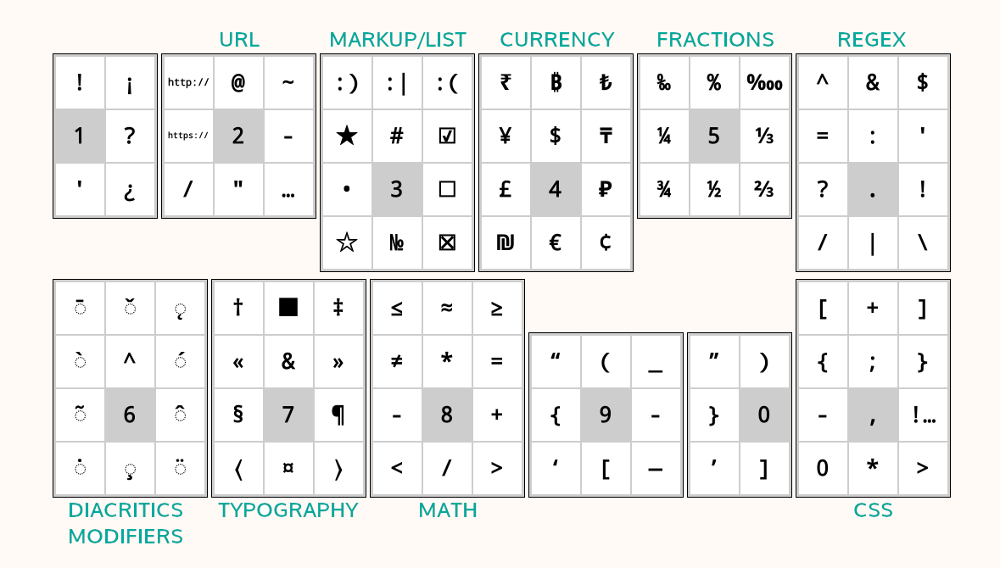 நீண்ட அழுத்த பாப்அப்பிற்கு கூடுதலாக, ஒரு விசையில் ச்வைப் செய்வதன் மூலம் இந்த கூடுதல் எழுத்துக்களையும் உள்ளிடலாம். கீழேயுள்ள எடுத்துக்காட்டில், ஒரு விசையில் ஒரு பெரிய எழுத்து A ஐ உள்ளிடலாம் அல்லது காட்டப்பட்ட எழுத்துக்களை உள்ளிட பிற திசைகளை ச்வைப் செய்யலாம். காட்டப்பட்டுள்ள எடுத்துக்காட்டில் ஆர்ப்பாட்டத்திற்கான முழு மேல்தோன்றல் அடங்கும் என்பதை நினைவில் கொள்க. இந்த பாப்அப்பை நீங்கள் திறக்க தேவையில்லை, நீங்கள் நேரடியாக விசைகளை ச்வைப் செய்யலாம். கூடுதல் எழுத்துக்களின் இருப்பிடங்களுடன் நீங்கள் பழகியதும், அவற்றை இந்த வழியில் மிக விரைவாக உள்ளிடலாம். இந்த நற்பொருத்தம் உங்கள் பயன்பாட்டில் குறுக்கிட்டால், தேர்வு செய்யாமல் அதை முடக்கலாம்: கூடுதலாக, எளிதான உரை கையாளுதலுக்கான சில குறுக்குவழிகள் உள்ளன. கூடுதல் செயல்களுக்கு நீங்கள் தட்டவும் வைத்திருக்கவும் இந்த விசைகள்: பேக்ச்பேச் நீங்கள் ச்வைப் சைகைகளைச் செய்யும்போது விசை வேறுபட்டது: மேலும் தகவலுக்கு, நீங்கள் தொடர்புடைய விக்கி பக்கம் ஐ சரிபார்க்கலாம். எளிமைப்படுத்தப்பட்ட மற்றும் பாரம்பரிய சீன எழுத்துக்களை உள்ளிடுவதற்கான சீன பக்கவாதம் விசைப்பலகையையும் கொரியடர் ஒருங்கிணைக்கிறது. இதைப் பற்றிய கூடுதல் தகவல்களை எங்கள் விக்கி இல் காணலாம். இயற்கை (மஞ்சள்/ஆரஞ்சு) ஒளி உடன் சாதனங்களில் முன் விளக்கு அரவணைப்பை சரிசெய்ய இந்த சொருகி உங்களை அனுமதிக்கிறது மற்றும் நைட் பயன்முறை (தலைகீழ் திரை வண்ணங்கள் - கருப்பு பின்னணியில் வெள்ளை உரை ) தானாகவே ஒரு அட்டவணையின்படி அமைக்கவும். இது இரண்டையும் கட்டுப்படுத்தலாம் அல்லது நீங்கள் மட்டுமே அரவணைப்பு கட்டுப்பாடு அல்லது இரவு பயன்முறை கட்டுப்பாடு பயன்முறையை தேர்வு செய்யலாம், எனவே நீங்கள் மற்றொன்றை கைமுறையாக சரிசெய்யலாம். நீங்கள் கொரியாடரை நிறுவும்போது இந்த சொருகி இயல்புநிலையாக இயக்கப்பட்டது. சில காரணங்களால் அது பட்டியலில் இல்லை என்றால், அதை இங்கே இயக்கலாம்: உங்கள் திரை முன் விளக்கின் அரவணைப்பை இரண்டு வெவ்வேறு வழிகளில் தானாக சரிசெய்யலாம்: நிலையான அட்டவணை: இந்த பயன்முறையில் நீங்கள் உள்ளிட்ட நாள்தோறும் அட்டவணைக்கு ஏற்ப உங்கள் முன் விளக்கு அரவணைப்பு மாறுகிறது. இந்த பயன்முறை நிலையான , இது பகல் நீளத்திற்கு கணக்கிடாது. அட்டவணை ஆண்டு முழுவதும் ஒரே மாதிரியாக இருக்கும். சூரியனின் நிலை: இந்த விருப்பம் உங்கள் இருப்பிடத்தில் சூரியனின் நிலையை ஆயத்தொலைவுகள் மற்றும் உயரம் நீங்கள் உள்ளிட்ட தகவல்களின் படி கணக்கிடுகிறது. இந்த கணக்கிடப்பட்ட சூரிய நிலை தரவுகளின்படி முன் விளக்கு அரவணைப்பு படிப்படியாக சரிசெய்யப்படுகிறது. இந்த பயன்முறை மாறும் . ஆண்டு முழுவதும் பகல் நேரத்தின் நீளம் மாறும்போது, சொருகி அதற்கேற்ப அட்டவணையை சரிசெய்கிறது. சொருகி பயன்படுத்தப்படும் சொற்களை நன்கு அறிந்து கொள்ள இந்த படத்தைப் பாருங்கள்: 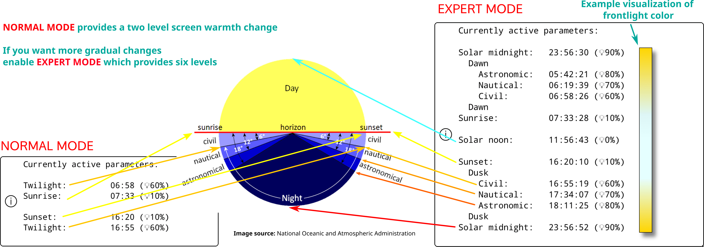 உங்கள் தற்போதைய அட்டவணையை தற்போது செயலில் உள்ள அளவுருக்கள் பட்டியல் விருப்பம் வழியாக காணலாம். 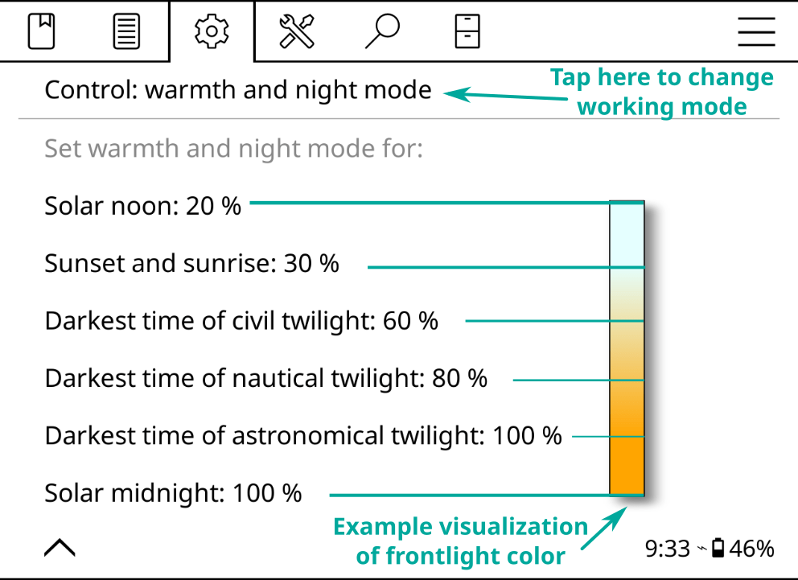 வெவ்வேறு இடைவெளிகளுக்கு சூடான ஒளி சதவீதங்களை அமைக்கும் போது, அந்த இடைவெளியை நைட் பயன்முறை ஆகவும் அமைக்கலாம், இது அந்த இடைவெளி தொடங்கும் போது திரை வண்ணங்களைத் தலைகீழாக மாற்றுகிறது. உங்கள் குறைந்தபட்ச முன் விளக்கு இன்னும் பிரகாசமாக இருந்தால் அல்லது நீங்கள் இருண்ட பக்க பின்னணியை விரும்பினால், இந்த அம்சத்தை செயல்படுத்தலாம். இதை இயக்க, கீழேயுள்ள உரையாடலில், நைட் பயன்முறை தேர்வுப்பெட்டியைத் தட்டவும், செட் ஐத் தட்டவும். நீங்கள் இதைச் செய்யும்போது, ஒரு மூன் படவுரு இந்த இடைவெளிக்கு அடுத்த பட்டியலில் தோன்றும். இரவு பயன்முறையை முடக்க, அந்த இடைவெளியில் நைட் பயன்முறை தேர்வுப்பெட்டியை முடக்கவும். 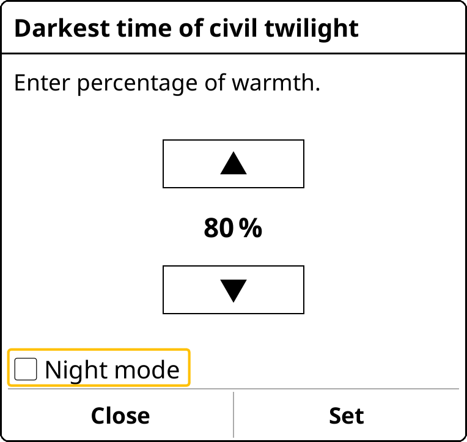 இந்த நற்பொருத்தம் சூரிய அச்தமனத்தில் உங்கள் முன் ஒளியை இயக்கி, உங்கள் தற்போது செயலில் உள்ள அளவுருக்கள் இன் படி சூரிய உதயத்தில் அணைக்கப்படுகிறது. உங்கள் முன் ஒளியை கைமுறையாக இயக்குவதன் மூலம் இந்த மாற்றத்தை நீங்கள் மேலெழுதலாம். அடுத்த சூரிய உதயம்/சூரிய அச்தமனத்தில், ஆட்டோவார்ம்த் தேவைப்பட்டால் அதை மீண்டும் மாற்றும். இந்த சொருகியில் உள்ள பட்டியல் உருப்படியின் போது முன் விளக்கு என்பதைத் தேர்ந்தெடுப்பதன் மூலம் அதை செயல்படுத்தலாம். படிப்படியாக மாற்றத்திற்கு பதிலாக உங்கள் முன் விளக்கு அரவணைப்பு விரைவாக மாற விரும்பினால்: 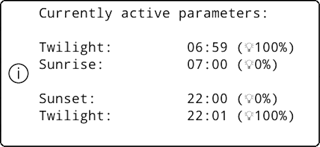 தொடங்கும் போது, கொரியடர் எழுத்துரு மெட்டாடேட்டா/தகவல் இலிருந்து கிடைக்கக்கூடிய எழுத்துருக்களை தொகுத்து குடும்பம் மற்றும் எடைக்கு ஏற்ப அவற்றை வகைப்படுத்துகிறது. இதன் பொருள் நீங்கள் ஒரு எழுத்துருவின் வெவ்வேறு எடைகள் மற்றும் மாறுபாடுகளைச் சேர்க்கலாம் மற்றும் கொரியடர் மிகவும் பொருத்தமான ஒன்றைப் பயன்படுத்த முயற்சிப்பார். மெட்டாடேட்டாவிலிருந்து எழுத்துரு குடும்பத் தகவல்களை இது எடுப்பதால், உங்கள் சாதனத்தில் நகலெடுக்கும் போது எழுத்துரு பெயர்கள் முக்கியமல்ல. கொரியாடரை மறுதொடக்கம் செய்த பிறகு நிறுவப்பட்ட எழுத்துருக்கள் கிடைக்கும். கொரியடர் ஒரு எளிய, முக்கியமாக கருப்பு மற்றும் வெள்ளை பயனர் இடைமுகத்தைக் கொண்டுள்ளது, ஏனெனில் சாய்வு மற்றும் சாம்பல் நிறத்தின் வெவ்வேறு நிழல்கள் ஈ-மை திரைகளில் ஒளிரும் மற்றும் பேயை ஏற்படுத்தும், இது வாசிப்பு அனுபவத்தை குறைக்கக்கூடும். KOReader has 2 main interfaces: reading screen and file browser. We will explain reading screen here. File browser is explained in this section of the guide. திரை வாசிப்பு இரண்டு மெனுக்கள் உள்ளன: 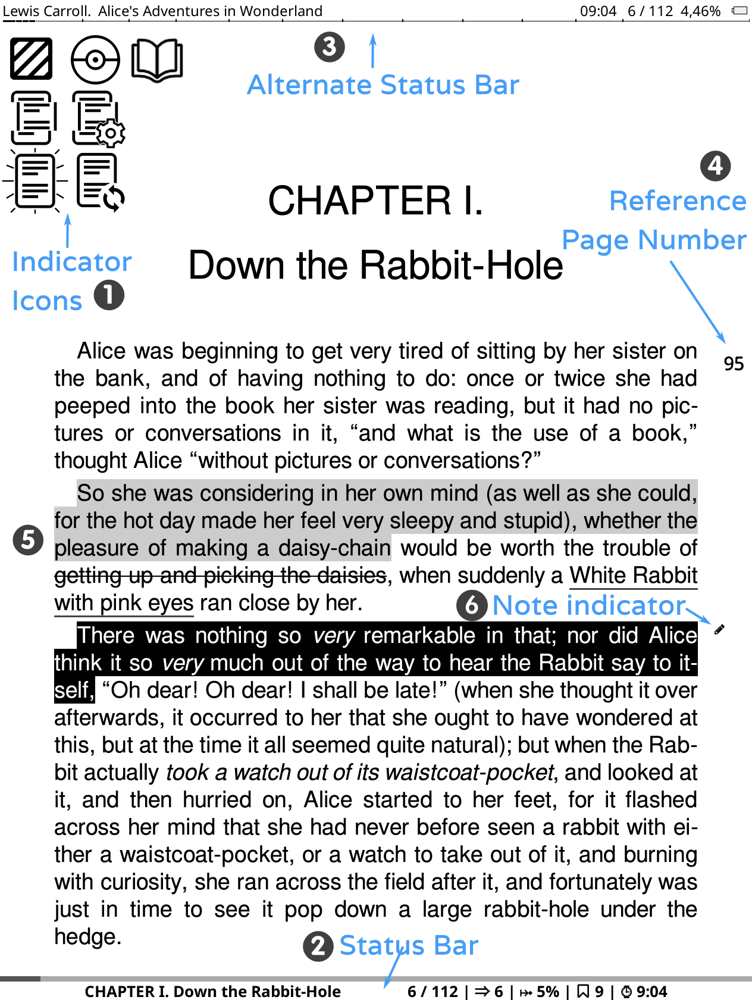 மேலே உள்ள படம் ஒரு புத்தகத்தைப் படிக்கும்போது உங்கள் வாசகர் திரையில் நீங்கள் காணக்கூடிய கூறுகளைக் காட்டுகிறது: மேலே உள்ள படத்தில் நீங்கள் காணக்கூடிய சில செயல்முறைகள் மற்றும் நிலைகளைப் பற்றி உங்களுக்குத் தெரிவிக்க சில குறிகாட்டிகள் உள்ளன. சில செயல்பாடுகளின் போது உங்கள் திரையின் மேல் இடது மூலையில் அவற்றைப் பார்ப்பீர்கள். பகுதி வழங்குதல் ஐகான்கள் இந்த ஐகான்களின் குழு பகுதி வழங்குதல் நடைமுறைக்கு சொந்தமானது, மேலும் இந்த சின்னங்களை மற்றவர்களை விட நீங்கள் அடிக்கடி பார்ப்பீர்கள். கீழ் பட்டியல் இல் உள்ள அமைப்புகளை மாற்றும்போது இந்த சின்னங்களை நீங்கள் காண்கிறீர்கள். இந்த நற்பொருத்தம், முழு புத்தகத்திற்கும் பதிலாக தற்போதைய அத்தியாயத்தை மட்டுமே வழங்குவதன் மூலம் உரை தோற்றம் மாற்றங்களை மிக விரைவாக முன்னோட்டமிட உங்களை அனுமதிக்கிறது. உங்கள் திரை நோக்குநிலையை சுழற்றுவது இப்போது இந்த அம்சத்திற்கு மிக வேகமாக நன்றி. இந்த நற்பொருத்தம் இயக்கப்பட்டது இயல்பாகவே. தேவைப்பட்டால், இது ஒரு புத்தகத்திற்கு (தட்டலுடன்) முடக்கப்படலாம், அல்லது உலகளவில் (நீண்ட தட்டினால்): உங்கள் மாற்றங்களை உறுதிப்படுத்திய பிறகு முழு புத்தகமும் மீண்டும் வழங்கப்பட வேண்டும், எனவே இது பல-படி செயல்முறை. இந்த சின்னங்கள் கீழே விளக்கப்பட்டுள்ளபடி வழங்குதல் கட்டத்தைக் காட்டுகின்றன: இந்த கட்டத்தில், ஆவணம் ஓரளவு வழங்கப்படுகிறது. பக்க எண்ணிக்கை, அடிக்குறிப்பு செய்தி மற்றும் பல விசயங்கள் inacautite . புதிய அமைப்புகள் எவ்வாறு தோற்றமளிக்கின்றன என்பதை நீங்கள் காணலாம் மற்றும் மேலும் சரிசெய்யலாம். நீங்கள் பக்கங்களைத் திருப்பலாம், இந்த நிலையில் இணைப்புகளைத் தாவலாம். பின்னணி இல் ஒரு முழு வழங்குதல் நடக்கிறது. நீங்கள் இன்னும் பக்கங்களைத் திருப்பலாம், இணைப்புகளைத் தாவலாம், அமைப்புகளை மாற்றலாம். முழு வழங்குதல் செய்யப்படுகிறது, ஆனால் இன்னும் பயன்படுத்தப்படவில்லை ஏனெனில் நீங்கள் செயலற்ற புத்தகத்தின் மீதமுள்ளவற்றை மீண்டும் ஏற்றக் காத்திருக்கிறீர்கள் (செயலற்ற = சாதனத்துடன் தொடர்பு கொள்ளவில்லை). நீங்கள் இன்னும் பக்கங்களைத் திருப்பலாம், இணைப்புகளைத் தாவலாம், அமைப்புகளை மாற்றலாம். நீங்கள் சிறிது காலமாக சும்மா இருந்தீர்கள், எனவே கொரியடர் இப்போது முழு ஆவணத்தையும் மீண்டும் ஏற்றுகிறார். இந்த கட்டத்தில் கொரியடர் தடுக்கப்பட்டவர் தொடர்புகளைத் தடுக்க. சிறப்பம்சமாக படவுரு நீங்கள் இல் இருக்கும்போது இந்த படவுரு காண்பிக்கப்படுகிறது. கொரியடர் கூடுதல் சிறப்பம்சமாக பயன்முறையைக் கொண்டுள்ளது, இது ஒரு சிறப்பம்சத்தைத் தொடங்கவும், பக்கங்களை மாற்றவும் உங்களை அனுமதிக்கிறது, இது பல பக்கங்களை பரப்பக்கூடிய நீண்ட சிறப்பம்சங்களை உருவாக்குகிறது. இந்த வழிகாட்டியின் பிரிவில் புக்மார்க்குகள், சிறப்பம்சங்கள் மற்றும் குறிப்புகள் ஆகியவற்றில் இதைப் பற்றி நீங்கள் படிக்கலாம். இந்த பயன்முறையில் நீங்கள் ஒரு சிறப்பம்சத்தைத் தொடங்கும்போது, நீங்கள் இன்னும் சிறப்பம்சமாக இருக்கும் பயன்முறையில் இருக்கிறீர்கள் என்பதை நினைவூட்டுவதற்காக இந்த படவுரு மூலையில் காட்டப்பட்டுள்ளது. பத்தியின் முடிவைத் தேர்ந்தெடுப்பதன் மூலம் உங்கள் சிறப்பம்சத்தை நீங்கள் முடிக்கும்போது அது மறைந்துவிடும் அல்லது நீங்கள் சிறப்பம்சத்தை ரத்து செய்யும்போது (உங்கள் சிறப்பம்சத்தின் தொடக்கத்தில் அல்லது இந்த படவுரு ஐ முன்னிலைப்படுத்துவதன் மூலம் மீண்டும் தட்டுவதன் மூலம்). போகிமொன் பால் படவுரு நீங்கள் ஒரு வார்த்தையில் நீண்ட நேரம் அழுத்தும்போது இந்த படவுரு காண்பிக்கப்படுகிறது (வேண்டுமென்றே அல்லது தற்செயலாக). கொரியடர் ஒரு சாதாரண நீண்ட செய்தித் தாள் மெனுவைக் கொண்டுள்ளது. உங்கள் விரலை 3 வினாடிகளுக்கு மேல் வைத்திருக்கும்போது கூடுதல் மிக நீண்ட அழுத்த பட்டியல். இந்த படவுரு இந்த மிக நீண்ட செய்தித் தாள் மெனுவை நீங்கள் செயல்படுத்தியது என்பதாகும். ஃபிளிப் பயன்முறை படவுரு நீங்கள் மேல் இடது மூலையைத் தட்டும்போது இந்த படவுரு காண்பிக்கப்படுகிறது: இந்த பயன்முறை உங்கள் திரைக்கு ஏற்றவாறு அளவிடப்படும் அளவிடப்பட்ட பயிர் இல்லாமல் முழு பக்கத்தையும் தற்காலிகமாக காண்பிக்கும். இந்த பயன்முறையில் நீங்கள் பக்கங்களைத் திருப்பலாம். இந்த பயன்முறையிலிருந்து வெளியேற, இந்த ஐகானைத் தட்டவும். கொரியடருக்கு இரண்டு நிலை பார்கள் உள்ளன, ஒரு கீழ்நிலை நிலை பட்டி இது இயல்புநிலையாக இயக்கப்பட்டது. எங்களிடம் மாற்று நிலை மதுக்கூடம் உள்ளது, இது நீங்கள் அதை இயக்கினால் பக்கத்தின் மேலே தோன்றும். இந்த மாற்று நிலை மதுக்கூடம் பிரதிபலிக்கக்கூடிய ஆவணங்களில் மட்டுமே கிடைக்கிறது (EPUB, HTML, DOCX, RTF, TXT…). கீழ் நிலை பட்டி என்பது புதியது, இது தீவிரமாக பராமரிக்கப்படுகிறது. மாற்று நிலை மதுக்கூடம் என்பது கொரியாடரின் முந்தைய பதிப்புகளிலிருந்து ஒரு மீதமுள்ளதாகும், எனவே நாங்கள் புதிய அம்சங்களைச் சேர்க்கவில்லை. ஆனால் இந்த ஆல்ட் ச்டேட்டச் பார் உங்களுக்கு பயனுள்ளதாக இருந்தால் நீங்கள் இன்னும் இயக்கலாம். நீங்கள் அதை இயக்கலாம்: இந்த மெனுவிலிருந்து மாற்று நிலை மதுக்கூடம் ஐ நீங்கள் உள்ளமைக்கலாம்: இந்த பிரிவின் மீதமுள்ள வழிமுறைகள் கீழ் நிலை பட்டி க்கானவை. முன்னேற்றப் பட்டி நிலை பட்டி இல் பொதுவாக முழு புத்தகத்திற்கும் உங்கள் முன்னேற்றத்தைக் காட்டுகிறது. ஆனால் அதற்கு பதிலாக தற்போதைய அத்தியாயம் க்கான உங்கள் முன்னேற்றத்தையும் இது காட்டலாம். ஒரு புத்தகத்தில் நிறைய குறுகிய அத்தியாயங்கள் இருந்தால் இது பயனுள்ளதாக இருக்கும். இந்த விசயத்தில் தற்போதைய அத்தியாயத்தில் உங்கள் முன்னேற்றத்தைக் காண்பது கடினமாக இருக்கலாம், எனவே அத்தியாய நிலை பட்டி இங்கே இன்னும் தகவலறிந்ததாக இருக்கும். இந்த மெனுவிலிருந்து அம்சத்தை நீங்கள் இயக்கலாம்: இயல்பான மற்றும் அத்தியாய முன்னேற்றப் பட்டிகளுக்கு இடையில் மாற ஒரு சைகையை நீங்கள் ஒதுக்கலாம். இந்த செயலின் கீழ் நீங்கள் காணலாம்: இந்த மெனுவிலிருந்து கீழே உள்ள நிலை பட்டியை உள்ளமைக்கலாம். நீங்கள் விரும்பியபடி உங்கள் நிலைப் பட்டியைத் தனிப்பயனாக்க அமைப்புகள் துணை மெனுவை ஆராய தயங்க. நிலை பட்டியில் நீங்கள் காட்டக்கூடிய பல உருப்படிகள் உள்ளன. ஆனால் இயல்பாக, ஒன்று மட்டுமே ஒரு நேரத்தில் காண்பிக்கப்படுகிறது, மேலும் அவற்றுக்கிடையே சுழற்சிக்கு நீங்கள் நிலை பட்டியைத் தட்ட வேண்டும். எல்லா பொருட்களையும் ஒரே நேரத்தில் காட்ட விரும்பினால், அதை இங்கிருந்து இயக்கவும்: நிலை பட்டி உருப்படிகளை வரிசைப்படுத்துதல்: You can change the font of status bar items from here: You can use all your installed fonts for the status bar. If you want to fit lots of information, we can suggest DINish Condensed font, which you can download from its project page and install using the same procedure which you can find here: Using your own fonts KOReader's status bar has a special item called dynamic filler. When you add this invisible item to your status bar, it will expand to fill the available space like an inflated balloon, pushing other items on both sides as you can see in the image below (dynamic filler is visualized as a blue rectangle):
You can enable and move this item like the other status bar items from the same menu. You can also combine this item with the custom text item explained below to adjust your layout further.
தனிப்பயன் உரை என்ற பெயரில் ஒரு சிறப்பு நிலை பட்டி உருப்படி உள்ளது. இந்த உருப்படி நீங்கள் தேர்ந்தெடுத்த உரையை நிலை பட்டியில் காட்டலாம். கீழே உள்ள எடுத்துக்காட்டில் நீங்கள் காணக்கூடியபடி, நிலை பட்டி உருப்படிகளுக்கு இடையில் ஒரு பிரிப்பான் உருவாக்க இந்த அம்சத்தைப் பயன்படுத்தலாம்: நீங்கள் ஒரு பிரிப்பானாக மற்றொரு எழுத்தை தேர்வு செய்யலாம். உங்கள் குழுக்களை சரிசெய்ய அதன் வரிசையை மாற்ற இந்த உருப்படியை மற்ற நிலை பட்டி உருப்படிகளைப் போல நகர்த்தலாம். You can also use this item in combination with the dynamic filler item explained above to adjust your layout further. KOReader allows you to have more than one status bar layout and switch between them. Using this feature, you can have different layouts for cases like these examples: To create a preset, first adjust your status bar to your liking by adding and ordering items (as explained before in this section). Then select: This will create a preset with your current status bar layout. Repeat this for other layouts that you want to create. After this, you can switch between your new layouts from the same menu. You can also use gestures, profiles and quick menu to quickly switch between your status bar presets. External content is a special status bar item that allows KOReader plugins to show content in the status bar. For example Read Timer plugin uses this item to show the timer in the status bar. Currently you don't need to enable it manually but you can find it here: மெனுவைப் பற்றி உங்களுக்குத் தெரிந்திருக்க சிறந்த பட்டியல் கட்டமைப்பில் உள்ள உருப்படிகளின் கண்ணோட்டத்தை மட்டுமே இங்கே தருவோம். இந்த வழிகாட்டியின் தொடர்புடைய பிரிவுகளின் கீழ் விரிவான தகவல்கள் கிடைக்கின்றன. 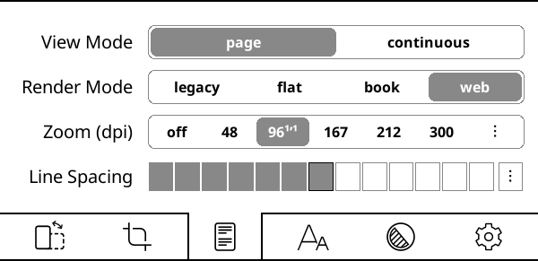 View mode If you change to continuous mode you can scroll the document like a web page. This mode is more suitable for non e-ink screen types (LCD, OLED). In continuous mode you lose top and bottom margins so text may be cut on the first and last line of screen. To solve this problem you can enable Page overlap: Render mode option determines how your document is rendered by KOReader. Default is WEB and generally you don’t need to change this setting. When a book (or saved web page) is very complicated (specified widths or margins, negative margins, floats etc.) and layout looks bad or overflow the screen, you can try other rendering modes. Zoom (dpi) setting can be thought of as a general zoom factor for the document (except font size). At 96 dpi (which is the default setting), images in the document are rendered at their original dimensions. Basically you will use this setting if you want to make images bigger without making the text bigger. 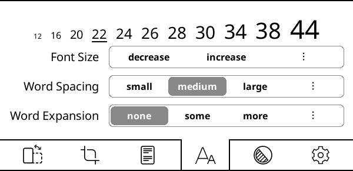 சொல் இடைவெளி மற்றும் சொல் விரிவாக்கம் அமைப்புகள் தொடர்புடையவை, மேலும் அது நியாயப்படுத்தப்படும்போது உங்கள் உரை எவ்வாறு இருக்கும் என்பதை அவை தீர்மானிக்கின்றன. நீங்கள் உரையை நியாயப்படுத்தும்போது, சொற்களுக்கு இடையில் இடம் சேர்க்கப்படுகிறது, இதனால் ஒவ்வொரு வரியின் இரண்டு விளிம்புகளும் இரு விளிம்புகளுடனும் சீரமைக்கப்படுகின்றன. கோடுகளின் சொல் எண்ணிக்கைகள் எல்லா நேரத்திலும் சமமாக இல்லை என்பதால், நியாயமான சீரமைப்பில், வரியை நிரப்ப உரையை சுருக்க வேண்டும் அல்லது விரிவாக்க வேண்டும். Word spacing How much the space characters in a line of text can be compressed to fit more words. This setting doesn’t affect words, it only changes the space between them. Word expansion If you have too much white space in a line, how much of that can be distributed into the words by expanding them. This setting affects the appearance of words. If you don’t want your words to expand, set this to none. உரை உங்களுக்கு மகிழ்ச்சி அளிக்கும் வரை நீங்கள் வெவ்வேறு அமைப்புகளுடன் ஆய்வு செய்யலாம், பின்னர் அவற்றை அந்தந்த உரையாடல்கள் வழியாக இயல்புநிலைகளாக அமைக்கவும். 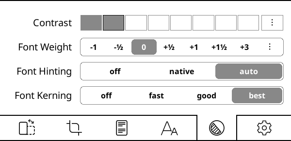 கான்ட்ராச்ட் மற்றும் எழுத்துரு எடை ஆகியவை உங்கள் உரையை தைரியமாக (அல்லது இலகுவாக) மாற்ற நீங்கள் பயன்படுத்தக்கூடிய இரண்டு விருப்பங்கள். இந்த விருப்பங்களில் ஏதேனும் ஒரே தோற்றத்தை நீங்கள் அடையலாம், ஆனால் அதை அடைய அவை வெவ்வேறு முறைகளைப் பயன்படுத்துகின்றன. நிச்சயமாக நீங்கள் இரண்டையும் ஒரே நேரத்தில் பயன்படுத்தலாம். அவற்றுக்கிடையேயான வேறுபாடுகளை சுருக்கமாகக் கூறலாம்: + எழுத்துரு அகலத்தை மாற்றாது, புத்தக நீளம் அப்படியே இருக்கும் + ஆவணத்தை மீண்டும் வழங்க தேவையில்லை - எல்சிடி அல்லது குறைந்த டிபிஐ திரைகளில் மோசமாகத் தோன்றலாம் + நீங்கள் நிறுவப்பட்டிருந்தால் சரியான எடையுள்ள எழுத்துருக்களைப் பயன்படுத்தும் + எல்சிடி அல்லது குறைந்த டிபிஐ திரைகளில் நன்றாக இருக்கிறது - வேகமான எழுத்துருக்களை மீண்டும் வழங்க வேண்டும், மெதுவாக Font kerning adjusts the spacing between letters to achieve a visually pleasing result. Default is best option, which might be slower when opening files (depending on your device) but has better support for ligatures (see the image below for an example), joined Arabic glyphs and some other scripts. If your device is slow, you can try good which is faster and may still look correct with western latin-script text. 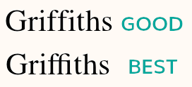 Font hinting is a typographical technique that adjusts the characters in a font to fit in a low-resolution grid, like an e-ink screen. When enabled, the result is sharper and easier to read characters, at the cost of slight distortion of the original font design. Difference of font hinting is more visible on standard-resolution screens or at smaller font sizes. On a very high-resolution screen, the difference is much less noticeable because the pixels are small enough. Here is a more detailed comparison: Hinting OFF Hinting ON In KOReader, font hinting is enabled by default and uses the FreeType library's hinting algorithm instead of font's internal instructions (to be safe because font internal instructions might be broken). But you can try the font designer's instructions embedded in the font file to see if it looks better: 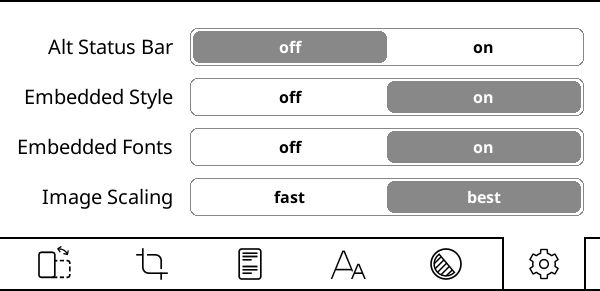 மாற்று நிலை மதுக்கூடம் மாற்றக்கூடிய ஆவணங்களில் மட்டுமே கிடைக்கும் மாற்று நிலைப் பட்டியை இயக்குகிறது (EPUB, HTML, DOCX, RTF, TXT…). அதை இங்கே இயக்கிய பிறகு, நீங்கள் மாற்று நிலை மதுக்கூடம் வழியாக உள்ளமைக்கலாம்: உட்பொதிக்கப்பட்ட பாணி மற்றும் உட்பொதிக்கப்பட்ட எழுத்துருக்கள் ஆவணத்தில் பதிக்கப்பட்ட வெளியீட்டாளரின் பாணிகள் மற்றும் எழுத்துருக்கள் ஆவணத்தை வழங்க பயன்படுத்தப்படுமா (அல்லது புறக்கணிக்கப்படுமா) என்பதை தீர்மானிக்கவும். இவை பொதுவானவை/ஆஃப் சுவிட்சுகள். உங்கள் ஆவணத்திற்கான சிறந்த டியூன் மாற்றங்களை நீங்கள் அடையலாம்: பட அளவிடுதல் உங்கள் ஆவணத்தில் உள்ள படங்கள் எவ்வாறு வழங்கப்படுகின்றன என்பதை தீர்மானிக்கிறது. பெச்ட் மிகவும் மகிழ்ச்சியாக இருக்கிறது, ஆனால் அது மெதுவாக உள்ளது. நீங்கள் திறக்கும் கோப்பு வகையைப் பொறுத்து கொரியடரின் பயனர் இடைமுகம் மற்றும் விருப்பங்கள் மாறலாம். ஆவணங்களில் இரண்டு முக்கிய பிரிவுகள் உள்ளன: கொரியடர் நிறைய அம்சங்களைக் கொண்டுள்ளது, எனவே அதன் பட்டியல் அமைப்பு இந்த சிக்கலை பிரதிபலிக்கிறது. பட்டியல் உருப்படிகளை விரைவாகக் கண்டுபிடிப்பதற்கான பட்டியல் தேடல் நற்பொருத்தம் எங்களிடம் உள்ளது. பட்டியல் உருப்படியின் பெயரை நீங்கள் நினைவில் வைத்திருந்தால், அது எங்கே என்று நினைவில் இல்லை என்றால், இந்த அம்சத்தைப் பயன்படுத்தலாம்: இந்த அம்சத்தை நீங்கள் ஒரு சைகைக்கு ஒதுக்கலாம் அல்லது அதை உங்கள் விரைவான பட்டியல் இல் சேர்க்கலாம். கீழ் பட்டியல் இல், நீங்கள் ஒரு விருப்பத்தின் பெயரைத் தட்டி வைத்திருந்தால், அதன் விளக்கத்தை நீங்கள் காணலாம். நீங்கள் இடைமுக மொழியை மாற்றலாம்: நீங்கள் மெனுவிலிருந்து ஒரு மதிப்பைத் தேர்வு செய்யலாம் அல்லது சிறந்த டியூனிங்கிற்கான மதிப்பை உள்ளிட தனிப்பயன் டிபிஐ ஐத் தேர்ந்தெடுக்கவும்: அதிக டிபிஐ = பெரிய இடைமுகம் . கீழே உள்ள பட்டியில் ஒரு சூம் (டிபிஐ) அமைத்தல் உள்ளது என்பதை நினைவில் கொள்க. ஒன்று ஆவணங்களுடன் மட்டுமே தொடர்புடையது. அடுத்த பகுதியில் விளக்கத்தை நீங்கள் காணலாம். விருப்பம் அல்லது பட்டியல் உருப்படி (எழுத்துரு எடை, வரி இடைவெளி போன்றவை) தட்டவும் வைத்திருந்தால், அதன் மதிப்பை இயல்புநிலை என அமைக்கலாம். புதிய மதிப்பு இனிமேல் திறக்கப்பட்ட புத்தகங்களுக்கு மட்டுமே பயன்படுத்தப்படும். முன்னர் திறந்த புத்தகங்கள் அவற்றின் அமைப்புகளை வைத்திருக்கும். இயல்புநிலை மதிப்புகளை பட்டியலில் விண்மீன் (★) என அடையாளம் காணலாம் அல்லது கீழே காணப்பட்டுள்ள குறிகாட்டிகளைச் சுற்றி கருப்பு எல்லை ஆக: 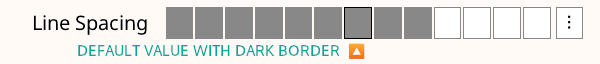 கீழே ஸ்வைப் செய்வதன் மூலம் முழுத்திரை உரையாடல்களை (வரலாறு, பொருளடக்கம், வாசிப்பு புள்ளிவிவரங்கள் போன்றவை.) மூடலாம். (புத்தகக்குறிகள் சாளரத்தைத் தவிர. இதை மூடுவதற்கு நீங்கள் எந்தப் பல ஸ்வைப் சைகையையும் பயன்படுத்தலாம்) உங்கள் விரலால் நீண்ட மூலைவிட்ட ச்வைப் ஐ உருவாக்குவதன் மூலம் திரைக்காட்சி ஐ நீங்கள் எடுக்கலாம். மேலும் தடுப்பு மூலைகளை எதிர்க்கும் தொடுதல் திரை சாட்டை எடுக்கும். ஒரு படத்தைப் பார்க்கும்போது இந்த இரண்டாவது சைகையை உதாரணமாக பயன்படுத்தலாம். உங்கள் சாதனத்தில் விசைப்பலகை இருந்தால், நீங்கள் ஆல்ட் + சிப்ட் + ஐயா குறுக்குவழியுடன் திரை சாட்டை எடுக்கலாம். நீங்கள் ஒரு புத்தகத்தின் சீரற்ற பக்கத்தைத் திறக்க விரும்பினால், எங்களிடம் ஒரு சீரற்ற பக்கத்திற்குச் செல்லவும் எந்தவொரு சைகைக்கும் நீங்கள் ஒதுக்கலாம். இது ரீடர் சைகை மேலாளர் இன் பிரிவில் உள்ளது. 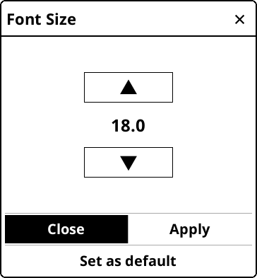 மேலே உள்ளதைப் போன்ற சரிசெய்தல் அம்பு பொத்தான்களைக் கொண்ட உரையாடல்களில், பெரிய அதிகரிப்புகளில் மதிப்பை மாற்ற அம்பு பொத்தான்களில் தட்டவும் வைத்திருக்கவும் . இந்த வகை உரையாடலை (முழு அல்லாத திரை) அதன் சாளரத்திற்கு வெளியே தட்டுவதன் மூலம் நீங்கள் மூடு செய்யலாம். இந்த வகை உரையாடலை அதன் சாளர தலைப்பை பிடித்து இழுப்பதன் மூலம் நீங்கள் நகர்த்தலாம் . சாளர தலைப்பு ஐத் தட்டுவதன் மூலமும் வைத்திருப்பதன் மூலமும் இந்த வகை உரையாடல் அரை-வெளிப்படையான ஐ உருவாக்கலாம் (ஒரு மதிப்பை சரிசெய்யும்போது அதன் கீழ் உரையைப் பார்க்க விரும்பும் போது). புதிய கோப்புறைகளை உருவாக்குதல் - நீங்கள் ஒரு இருப்பிடத்தைத் தேர்வு செய்ய வேண்டிய சூழ்நிலைகளில் (கிளவுட் ச்டோரேச், காப்பக சொருகி, ஏற்றுமதியாளர் சொருகி), கொரியடர் எங்கள் கோப்பு உலாவி போல தோற்றமளிக்கும் ஒரு திரையை உங்களுக்கு வழங்குகிறார். தேர்ந்தெடுக்கும்போது புதிய கோப்புறையை உருவாக்க விரும்பினால்: பயனர் இடைமுகத்தின் அளவை நீங்கள் மாற்ற விரும்பினால், அதற்கான dpi அமைப்பு உள்ளது: ஒரு வார்த்தையை அழுத்தி வைத்திருப்பது ஒரு உரையாடலைக் கொண்டுவருகிறது, அங்கு நீங்கள் மேலும் நிகழ்வுகளுக்காக ஆவணத்தில் தேர்வைத் தேடலாம் அல்லது விக்கிபீடியாவில் பார்க்கலாம். When viewing dictionary and wikipedia results, you can long-press on word(s) in these windows to search them further in the dictionary/wikipedia. This will open another window with the result, so you won't lose your previous search. If you have opened several search windows as described in the previous tip, you can close them all at once by long-pressing the close X button. தற்போதைய தேதியை நீங்கள் சரிபார்க்க விரும்பினால், சிறந்த பட்டியல் இல் கடிகாரத்தைத் தட்டலாம். கொரியடருக்கு மூன்று வகையான டச் ச்க்ரோலிங் உள்ளது. இதை நீங்கள் அணுகலாம்: ⇑ சிறந்த பட்டியல் → அதே மெனுவிலிருந்து நீங்கள் முன்னோக்கி செல்லலாம். இந்த நற்பொருத்தம் மல்டிச்வைப் சைகைக்கு ஒதுக்கப்பட்டுள்ளது. நீங்கள் விரும்பினால் (ஒரு மூலையைத் தட்டுவது போல) இதை மற்றொரு சைகைக்கு ஒதுக்கலாம் அல்லது உங்கள் விரைவான பட்டியல் இல் சேர்க்கலாம். ⇑ சிறந்த பட்டியல் → கொரியாடரில் உங்கள் ஆவணத்தின் மூலம் அவர்களின் சொந்த பலத்துடன் நகர்த்துவதற்கு வெவ்வேறு வழிகள் உள்ளன. நீங்கள் இதைப் பயன்படுத்தலாம்: ச்கிம் விட்செட் என்பது மிகவும் செயல்பாட்டு வழிசெலுத்தல் கருவியாகும். நீங்கள் இதை இதைப் பயன்படுத்தலாம்: ச்கிம் விட்செட்டை எவ்வாறு திறப்பது: முதலில் கீழே உள்ள வரைபடத்தை விரைவாகப் பார்ப்போம். எங்களிடம் இரண்டு வெவ்வேறு ச்கிம் விட்செட் கள் இருப்பதை நீங்கள் காண்பீர்கள். அவை ஒரே செயல்பாடுகளைக் கொண்டுள்ளன, அவற்றின் அளவு மட்டுமே வேறுபட்டது: நீங்கள் சிறிய ச்கிம் விட்செட் ஐப் பயன்படுத்த விரும்பினால், இந்த மெனுவிலிருந்து மேல் அல்லது கீழே ஐத் தேர்ந்தெடுப்பதன் மூலம் இதைச் செய்யலாம்: Now back to the diagram. You can see that on some buttons, there are two descriptions in different colors: blue and orange . It means that this button has two functions: a normal press action and a long-press action. If you press normally, it will perform the BLUE function. If you press longer, it will perform the ORANGE function. 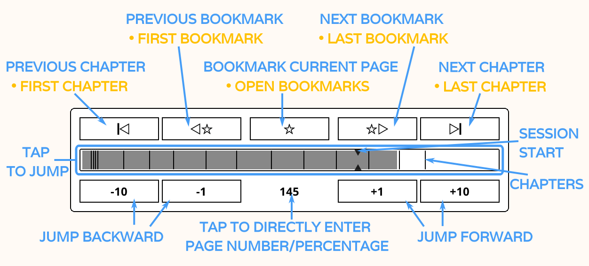 எண்ணப்பட்ட உருப்படிகளின் விளக்கங்கள் (தைரியத்தில் நீண்ட அழுத்த நடவடிக்கை): ச்கிம் விட்செட் மற்றும் முன்னேற்றப் பட்டி இல் உங்கள் ஆவணங்களிலிருந்து அத்தியாய எல்லைகளை கொரியடர் காட்டலாம். 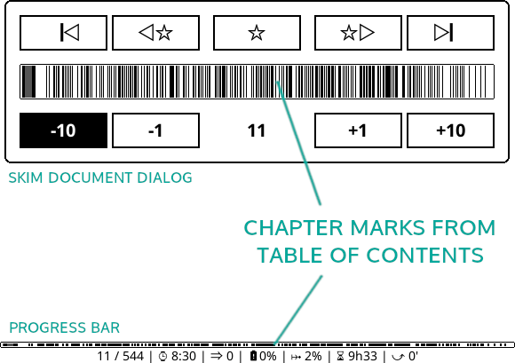 இந்த விருப்பங்கள் ஒரே பட்டியலில் உள்ளன. 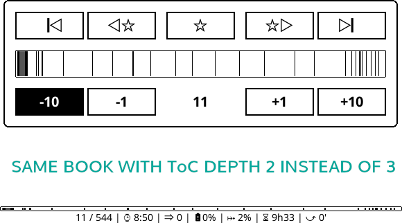 வழிகாட்டியின் இந்த பொருத்தமான பிரிவில் கொரியாடரில் கிடைக்கும் உள்ளடக்க அட்டவணை கருவிகளைப் பற்றிய கூடுதல் தகவலை நீங்கள் காணலாம்: உள்ளடக்கக் கருவிகளின் அட்டவணை இந்த விருப்பங்கள் ஒரே பட்டியலில் உள்ளன. உங்கள் ஆவணத்தில் உள்ளடக்க அட்டவணை இல்லையென்றால், நீங்கள் மாற்று பொருளடக்கம் ஐ இயக்கலாம். இந்த அமைப்பு இயக்கப்பட்டால், கொரியடர் ஆவண தலைப்புகளிலிருந்து (கிடைத்தால்) அல்லது எபபில் உள்ள தனிப்பட்ட உஉகுமொ கோப்புகளிலிருந்து ஒரு TOC ஐ உருவாக்குவார். கூடுதல் தகவலுக்கு இந்த பட்டியல் உருப்படியை நீண்ட நேரம் அழுத்தவும்: You can find more info about the table of contents tools available in KOReader in this relevant section of the guide: Table Of Contents Tools After learning how to navigate, we will now learn how to mark pages in a document. This will allow us to quickly jump between different parts of our document. If there is a page in a document that you frequently jump to (for example Reference pages section of a book), you can pin this page to easily jump there. You can have only one pinned page per book, so if you need more places to jump, check the Bookmarks feature below. How to pin/unpin a page: You can reach this dialog from this menu too, which you can also assign a gesture to reach: How to jump to your pinned page: How to go back: After jumping to the pinned page, you can return to your previous reading position with this menu action: Also you can use the swipe left then right single finger swipe to go back. Pinning/jumping is much faster if you assign Gestures to these actions: Now you can quickly pin a page, jump to it when reading and go back with just three taps. You can also add these actions to your Quick Menu of course. You can add (and remove) a bookmark by tapping the top right corner of a page. This is the equivalent of folding the corner of the page on a printed book and shows a similar icon at the corner when you add a bookmark. You can access your bookmarks from the Bookmarks window and then tap on the bookmarks to jump to the relevant page: You can open this window quickly by swipe left with double finger gesture or up then left single finger swipe.
புத்தக வரைபடம் கொரியாடரின் சக்திவாய்ந்த மற்றும் தனித்துவமான அம்சமாகும், இது ஒரு புத்தகத்தின் கண்ணோட்டத்தைப் பெறுவதற்கு மிகவும் பயனுள்ளதாக இருக்கும். எடுத்துக்காட்டாக, சில பகுதிகளை பின்னர் படிக்கத் தவிர்ப்பதன் மூலம் நீங்கள் ஒரு புத்தகத்தை நேர்த்தியாகப் படிக்கிறீர்கள் என்றால், உங்கள் முன்னேற்றத்தைக் கண்காணிப்பது கடினம். நீங்கள் ஏற்கனவே படித்த புத்தகத்தின் எந்த பகுதிகளை ஒரு பார்வையில் புத்தக வரைபடம் உங்களுக்குக் காட்டலாம்.
கூடுதலாக உங்களால் முடியும்: பட்டியல் வழியாக நீங்கள் புத்தக வரைபடத்தை அணுகலாம், மேலும் விரைவான அணுகலுக்கான சைகையையும் ஒதுக்கலாம்:
புத்தக வரைபடம் ஒரு புத்தகத்தைப் படிக்கும்போது முதல் முறையாக நீங்கள் திறக்கும்போது, அது கட்டம் பார்வை பயன்முறையில் இருக்கும், புத்தகத்தின் உள்ளடக்கத்தின் சிறந்த ஆரம்ப கண்ணோட்டத்தை அளிக்க அனைத்து அத்தியாயங்களையும் ஒரே திரையில் பொருத்துகிறது. பயன்பாடு பற்றிய விரிவான தகவலைப் பெற, மேல் இடது மூலையில் உள்ள செய்தி ஐகானைத் தட்டவும். மேல் வலது மூலையில் ஃச் ஐத் தட்டுவதன் மூலம் புத்தக வரைபடத்தை மூடலாம் அல்லது எந்த மல்டிச்வைப் சைகை ( மேல்-கீழ், இடது-வலது போன்றவை).
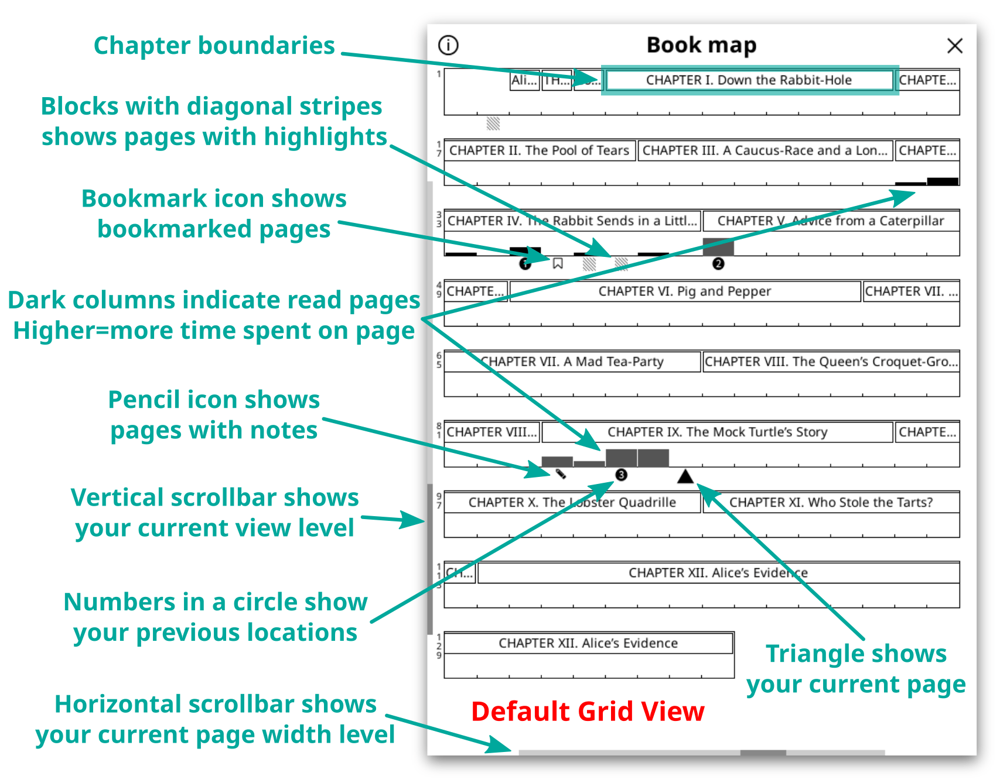 இந்த விருப்பங்களை மாற்றுவதன் மூலம் புத்தக வரைபடம் ஐ நீங்கள் தனிப்பயனாக்கலாம்: - முதலில் ச்வைப் செய்ய முயற்சிக்கவும் இடது மற்றும் வலது பக்கங்களைக் குறிக்கும் நெடுவரிசைகளின் அகலத்தை மாற்றவும், வரைபடத்தின் அளவை எவ்வாறு மாற்றுகிறது என்பதைக் கவனிக்கவும். - பின்னர் ச்விப்பிங் அப் மற்றும் பேரூர் திரையின் இடது விளிம்பில் அத்தியாயத்தின் தலைப்பு ஆழத்தை மாற்றவும், பிளாட் வியூ க்கு மாறவும். கீழே உள்ள எடுத்துக்காட்டுகளைக் காண்க. மேலே உள்ள இயல்புநிலை கட்டம் பார்வை க்கு கூடுதலாக, இங்கே நீங்கள் பிளாட் வியூ ஐ வலதுபுறத்தில் அத்தியாயம் தலைப்புகள் இல்லாமல் கட்டம் பார்க்கலாம். பார்வைகளுக்கு இடையில் மாறிவரும் இடது செங்குத்து உருள் அறையை கவனியுங்கள். நீங்கள் இயல்புநிலை பார்வைக்கு மாற விரும்பினால், மேல் இடது மூலையில் உள்ள செய்தி ஐகானை நீண்ட நேரம் அழுத்தலாம். 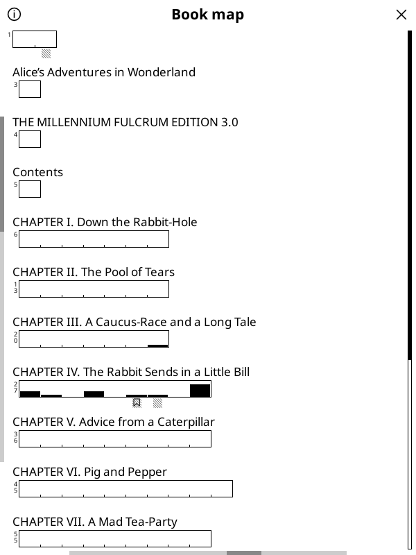 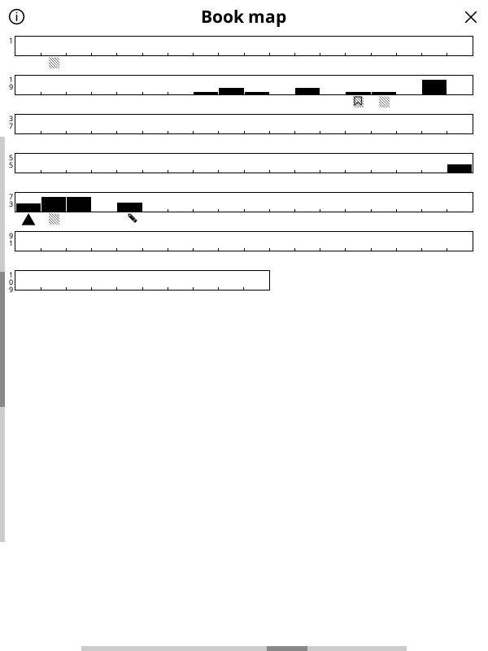 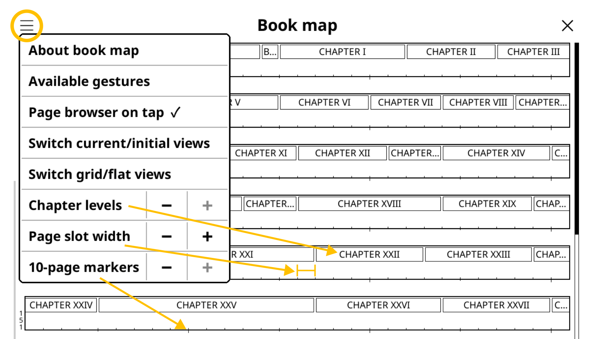
புத்தக வரைபடம் திரையில் பட்டியல் ஐகானைத் தட்டும்போது மேலே உள்ள மெனுவுடன் உங்களுக்கு வழங்கப்படுகிறது. பட்டியல் விருப்பங்கள் கீழே விளக்கப்பட்டுள்ளன:
பக்கங்களின் சிறுபடங்களை ஒரு கட்டமாகக் காண்பிப்பதன் மூலம் புகைப்பட ஆல்பத்தில் உள்ள பக்கங்களுக்கு இடையில் செல்ல பக்க உலாவி பயன்படுத்தப்படலாம். பக்க உலாவி ஐ புத்தக வரைபடம் அல்லது மெனுவிலிருந்து தட்டுவதன் மூலம் திறக்கலாம். எளிதாக அணுக ஒரு சைகையையும் ஒதுக்கலாம்.
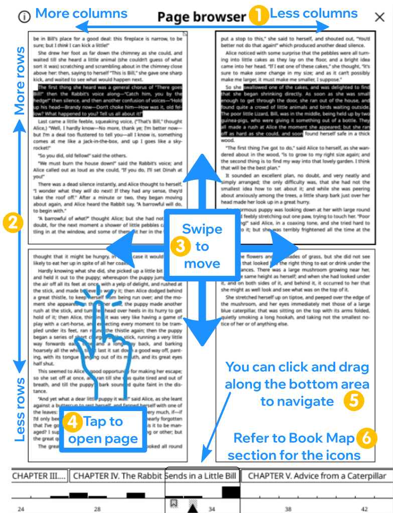 பக்க உலாவி இன் பயன்பாடு கீழே விளக்கப்பட்டுள்ளது. இந்த விளக்கங்களைக் காண இந்த திரையில் மேல் இடது மூலையில் ஆம்பர்கர் பட்டியல் பொத்தானை இல் தட்டலாம். அதே பொத்தானில் ஒரு நீண்ட அழுத்தமானது கீழ் துண்டிலிருந்து அத்தியாய தலைப்புகளைச் சேர்க்கிறது/நீக்குகிறது.
புத்தக வரைபடம் மற்றும் பக்க உலாவியில் ஒரு மாற்று கருப்பொருள் வேறுபட்ட நிழல் திட்டத்துடன் உள்ளது, இது அவர்களின் ஆம்பர்கர் மெனுக்களிலிருந்து நீங்கள் செயல்படுத்தலாம். இந்த கருப்பொருள் அத்தியாயத் தலைப்புகளுக்கு மாற்று வண்ணங்களைப் பயன்படுத்துகிறது, எனவே அத்தியாய எல்லைகள் புத்தக வரைபடம் மற்றும் பக்க உலாவி ஆகியவற்றில் அதிகம் தெரியும். ஆனால் இந்த கருப்பொருளில் சாம்பல் நிறத்தைப் பயன்படுத்துவதற்கு கருப்பு நிறத்திற்கு ஒளிரும், எனவே இது சில பயனர்களுக்கு கவனத்தை சிதறடிக்கும். நீங்கள் இரண்டையும் முயற்சி செய்யலாம் மற்றும் நீங்கள் விரும்பும் ஒன்றைப் பயன்படுத்தலாம்.
Page numbers in KOReader status bar behave differently depending on the document type; some are fixed, while others adjust dynamically. In the image below, you can see an overview of the page numbering system of KOReader. You can come back to this chart while reading this section. As you can see, documents that KOReader is able to open, can be divided into two categories which we will explain below: PDF, DjVu and CBR/CBZ are examples of this type of documents. Also known as non-reflowable, these documents has a static layout. This means, every element on the page (text and image) is precisely positioned and their position never changes, whether you are reading it on a small screen or big. The design that you see, is always an exact replica of a printed page. Fixed-layout documents have only static page numbers. When you open these type of documents in KOReader, page numbers that you see in the status bar, belong to the document itself. Static page numbers don't change with the type or screen size of the reader device. EPUB, MOBI, AZW, HTML are examples of this type of documents. The layout of these documents is not fixed. This means, the text and other content can adapt (reflow) to fit the size of the screen or window that you are viewing the document in. You can imagine these type of documents as very long text files or web pages, which naturally don't have page breaks. When you open these documents, KOReader calculates the page numbers on the first opening by dividing this long document into screen sized pages. As a result of this, if you open a document on a 10-inch reader, your book will have less pages than a 6-inch reader because more words can fit on a single page of bigger screen (more words per page = less pages in total). This also means that if you change the appearance of the text, for example by making the font bigger, this will change your page numbers. Because with a bigger font size, less text will fit on the screen, increasing the total number of pages. Due to their changing nature, reflowable document page numbers are not very useful for referencing. When you open a PDF file (which is a fixed-layout document) on your e-reader and on your computer at the same time, page 42 will always show the same content on both devices. But for an EPUB file, page 42 on one device will be different from the other. So now you might ask: "Is it possible to have non-changing page numbers on a reflowable document like EPUB?" Yes it is possible with the stable page numbers feature. There are two types of stable page numbers in KOReader: - Publisher page numbers: KOReader supports documents with publisher page numbers feature, which allows publishers to embed page numbers from printed books directly to the e-book version. When you enable this feature, KOReader doesn't calculate the page numbers itself. Instead, it shows you the embedded page numbers from the publisher. This means, the page number you see in your status bar matches the print version of the book. இந்த அம்சத்தை நீங்கள் இயக்கலாம்: If you also check the Show stable page numbers in margin option from the same menu, these publisher page numbers will be shown next to the text in a small font. - Characters per page: What if your book doesn't have publisher page numbers (majority of them don't) but you still need stable page numbers? Then you can enable the characters per page feature of KOReader. When you use this feature, KOReader calculates the page numbers according to a defined number of characters per page (instead of your screen size). So, for example you can set KOReader to "count 1500 characters as a single page" (default value of this setting which roughly equals to 250 words in English language). And approximately 250 words is the single page of a standard mass market paperback/PA5 format book. So when you enable this feature, your page count will be similar to a real book printed at the mentioned size. Of course you can change this characters per page setting from the menu to simulate different book sizes. If you have the printed version of a book, you can adjust the characters per page number to match the total page numbers to the printed book so it would be easier to find a passage in the other version. When you enable the stable page numbers for a document, these changes happen:
நீங்கள் காணும் சில டிசிட்டல் புத்தகங்களில் சரியான உள்ளடக்க அட்டவணை இல்லை ( TOC ). புத்தகத்தைத் தயாரிப்பதைப் பொறுத்து, இந்த TOC சிக்கல்களை நீங்கள் அனுபவிக்க முடியும்:
சிக்கலான உள்ளடக்கப் பிரிவுடன் புத்தகங்களைப் படிக்கும்போது நீங்கள் பயன்படுத்தக்கூடிய சில நற்பொருத்தங்கள் கொரியடர் உள்ளது.
முதல் நற்பொருத்தம் உள்ளடக்கங்களின் மாற்று அட்டவணை நீங்கள் காணலாம்:
உள்ளடக்கங்களின் மாற்று அட்டவணை உங்கள் புத்தகத்தில் உள்ள தலைப்புகளிலிருந்து ஒரு TOC ஐ உருவாக்க முயற்சிக்கிறது ( H1 முதல் H6 உங்கள் EPUB இல் உள்ள உஉகுமொ கோப்புகளில் உள்ள குறிச்சொற்கள்). உங்கள் புத்தகத்தில் எந்த தலைப்புகளும் இல்லை என்றால், அது ஆவணத் துண்டுகளிலிருந்து (உங்கள் எபப் புத்தகத்தில் உள்ள தனிப்பட்ட உஉகுமொ கோப்புகள்) ஒரு TOC ஐ உருவாக்க முயற்சிக்கும், இது ஒவ்வொரு கோப்பின் தொடக்கத்தையும் சுட்டிக்காட்டும். இந்த மெனுவிலிருந்து உங்கள் TOC இல் எந்த தலைப்பு நிலைகளை சேர்க்க வேண்டும் (அல்லது புறக்கணிக்க வேண்டும்) என்பதை நீங்கள் தேர்வு செய்யலாம்:
தனிப்பயன் உள்ளடக்க நற்பொருத்தம் உங்கள் புத்தகத்தின் தேர்ந்தெடுக்கப்பட்ட பகுதிகளிலிருந்து உங்கள் சொந்த TOC ஐ உருவாக்க உங்களை அனுமதிக்கிறது. இந்த TOC க்கு ஒரே ஒரு நிலை மட்டுமே இருக்க முடியும், எனவே இந்த அம்சத்தைப் பயன்படுத்தும் போது நீங்கள் துணை அத்தியாயங்களைக் கொண்டிருக்க முடியாது. உங்கள் சொந்த TOC ஐ உருவாக்க, முதலில் இயக்கு:
உங்கள் TOC ஐ உருவாக்கி முடிந்து, இந்த கூடுதல் பொத்தான்களைக் காண விரும்பவில்லை, தேர்வு செய்யாமல் அவற்றை முடக்கலாம்: உங்கள் அத்தியாயத்தின் தொடக்கமாக நீங்கள் விரும்பும் பக்க சிறுபடத்தில் நீண்ட நேரம் அழுத்தி, TOC அத்தியாயம் ஐ மேல்தோன்றல் மெனுவிலிருந்து தொடங்கவும் என்பதைத் தேர்ந்தெடுக்கவும். உங்கள் அத்தியாய தலைப்பில் உள்ளிடுமாறு கேட்கும் உரையாடலை நீங்கள் காண்பீர்கள். உங்கள் TOC ஐ உருவாக்கி முடிந்து, இந்த கூடுதல் பொத்தான்களைக் காண விரும்பவில்லை, தேர்வு செய்யாமல் அவற்றை முடக்கலாம்: இந்த TOC ஐ உருவாக்குவது உங்கள் புத்தகத்துடன் வரும் உங்கள் அசல் TOC ஐ மாற்றாது. இதே மெனுவிலிருந்து உங்கள் தனிப்பயன் பொருளடக்கம் ஐ அழிக்கலாம் (நீங்கள் புதிய ஒன்றை உருவாக்க விரும்பினால்). அசல் TOC க்கு திரும்ப விரும்பினால், இந்த அம்சத்தை நீங்கள் இயக்கிய அதே வழியில் முழுமையாக முடக்கலாம். அசல் ஒன்றிற்குத் திரும்ப தனிப்பயன் TOC ஐ உருவாக்கிய பிறகு இந்த அம்சத்தை நீங்கள் முடக்கினால், உங்கள் தனிப்பயன் TOC நீக்கப்படாது. அசல் மற்றும் உங்கள் தனிப்பயன் TOC க்கு இடையில் நீங்கள் இன்னும் மாறலாம்.
சில புத்தகங்கள் அல்லது ஆவணங்களில் நீண்ட அடிக்குறிப்புகள் அல்லது நூலியல் பிரிவுகள் இருக்கலாம். 250 பக்கங்கள் நீளமுள்ள ஒரு அறிவியல் புத்தகத்தைப் போல ஆனால் கடைசி 50 பக்கங்கள் பின்னிணைப்புகள், குறியீட்டு மற்றும் குறிப்புகள். பொதுவாக இந்த பக்கங்கள் புத்தகத்தின் ஒரு பகுதியாக இருப்பதால் முன்னேற்றப் பட்டி மற்றும் வாசிப்பு நேர கணக்கீடுகளில் சேர்க்கப்பட்டுள்ளன. ஆனால் பொதுவாக இந்த பிரிவுகள் ஒரு குறிப்பாக உள்ளன, அவை முழுவதுமாக படிக்கப்படவில்லை, எனவே உங்கள் மீதமுள்ள பக்க எண்ணிக்கை மற்றும் நேர மதிப்பீடுகளை மிகவும் துல்லியமாக மாற்ற நீங்கள் அவற்றை விலக்க விரும்பலாம். அல்லது நீங்கள் ஏற்கனவே படித்த சில கதைகளைக் கொண்ட ஒரு ஆந்தாலசி நூல் உங்களிடம் இருக்கலாம். தனிப்பயன் மறைக்கப்பட்ட பாய்ச்சல்கள் கொரியாடரின் நற்பொருத்தம் உங்கள் புத்தகத்தின் இந்த வகையான பகுதிகளை விலக்க உங்களை அனுமதிக்கிறது.
செயல்முறையின் கண்ணோட்டத்திற்கு படத்தைப் பாருங்கள். படத்திற்குப் பிறகு படிகள் விளக்கப்படும்: 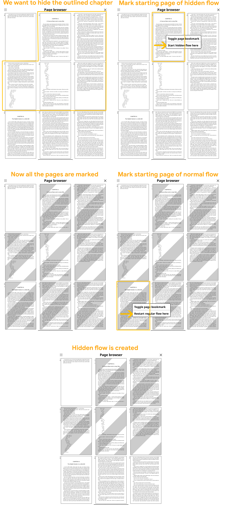 மறைக்கப்பட்ட ஓட்டத்தை உருவாக்குவதன் மூலம் ஒரு பகுதியை எவ்வாறு விலக்குவது: மறைக்கப்பட்ட பிரிவுகளுடன் பணிபுரிதல்: நீங்கள் உருவாக்கிய அதே வழியில் <ச்பான் கிளாச் = "யுஐ"> பக்க உலாவி இலிருந்து தனிப்பட்ட மறைக்கப்பட்ட ஓட்டம் பிரிவுகளை நீங்கள் அகற்றலாம். பட்டியல் உருப்படியுடன் அவை அனைத்தையும் ஒரே நேரத்தில் அழிக்கலாம்: நாங்கள் மேலே கூறியது போல், உங்கள் மறைக்கப்பட்ட பாய்ச்சல்கள் உங்கள் முன்னேற்றப் பட்டி இலிருந்து விலக்கப்படும். மேலே குறிப்பிட்டுள்ள எந்தவொரு முறைகளையும் பயன்படுத்தி நீங்கள் மறைக்கப்பட்ட பிரிவுகளில் ஒன்றிற்குச் சென்றால், உங்கள் முன்னேற்றப் பட்டி தற்காலிகமாக இந்த மறைக்கப்பட்ட பகுதியின் முன்னேற்றப் பட்டியாக மாறும். முன்னேற்றப் பட்டி அந்த மறைக்கப்பட்ட ஓட்டப் பிரிவில் பெரிதாக்குவதால் இதை நீங்கள் கற்பனை செய்யலாம். இந்த மறைக்கப்பட்ட பகுதியிலிருந்து அதன் முடிவில் பக்கத்தைத் திருப்புவதன் மூலம் அல்லது பிற வழிசெலுத்தல் கருவிகளைப் பயன்படுத்துவதன் மூலம் நீங்கள் வெளியேறினால், உங்கள் முன்னேற்றப் பட்டி முழு புத்தகத்தையும் மீண்டும் காண்பிக்கும் (உங்கள் தனிப்பயன் மறைக்கப்பட்ட பாய்ச்சல்களுடன் மீண்டும் தெரியவில்லை). மறைக்கப்பட்ட பிரிவுகளை அகற்றி தூய்மை செய்தல்: நீங்கள் உருவாக்கிய அதே வழியில் பக்க உலாவி இலிருந்து தனிப்பட்ட மறைக்கப்பட்ட ஓட்டம் பிரிவுகளை நீங்கள் அகற்றலாம். பட்டியல் உருப்படியுடன் அவை அனைத்தையும் ஒரே நேரத்தில் அழிக்கலாம்: As you work on creating hidden flows by tagging pages as Start hidden flow or Restart regular flow, some of the previously made ones may stop having an effect. For example in the case that you make Start hidden flow a few pages before an existing Start hidden flow, that existing one is no longer involved. This overlapping or obsolete tags are remembered for practical purposes. Again in the previous example, if you end that second hidden flow before the existing-but-no-longer-involved Start hidden flow, this deactivated one will be involved again. You can clear all these inactive markers if they interfere with your custom flows, or once you finish making your hidden flows and happy with the results: After learning the basics of KOReader from the previous section, now you want to start reading probably. But before that, why not customize the appearance of your book to make it look really nice. In this section, we will do a step-by-step "digital typesetting" to make your e-book look more like a printed book. Aim of this tutorial is to get you familiar with the KOReader's text appearance settings so you can change them according to your taste later. Here are the steps: After all these settings, your book should look more like a printed book. You can make further adjustments to these settings if you wish. So after all these settings, you might ask "Will my other books look like this too?" No, not automatically. Because all these changes are valid only for the current book. In other reader applications, when you change a setting, let's say the font used for books, it changes globally. Which means, if you change the default font to Verdana, any books you open after this change -including the ones that you are already reading- will be shown in this Verdana font. KOReader's approach is different from this. We save appearance settings per book. This gives you the flexibility to change your settings for the current book without affecting others. For example if you have some fantasy books, you can change the font to a medieval looking one only for these books. Or you can set some books to open in landscape orientation or double column mode. So this is how KOReader works: Let's see on an example: During this exercise, we increased the Font weight of our book to +1.00. Now open the Font weight menu and press the three dots at the end of the Font weight setting line. A dialog window will open and you will see this: Default value: +0.00. This means that when you open another book, its font weight will still be 0 (Default value), instead of +1 as we have set before. So to make a setting permanent, you have to set it as default. There are two methods in KOReader for setting these default values: Settings in KOReader generally can be set as default with a long-press. Have a look at the screenshot below: Values on the right side marked in blue can be long-pressed to set them as defaults. Let's say you want to make the text bolder. If you press on +1 normally, it will change only for this book. But if you long-press on it, you will see this dialog: If you press the Set as default button, this book and the books that you will open in the future will have +1 font weight. This "long-press to set as default" rule works in menus too. For example when changing the font from the top menu: Default values have a star (★) in the menu system or shown with a black border around the indicators as seen below: Remember that, the books that you have already opened will keep their own settings. Changing defaults don't affect them. You also have the ability to set all of the current book settings as defaults instead of one-by-one. This is useful if you make many changes to a book and you want all your books to look like this one. You can save the current document settings as defaults by choosing: This will overwrite all the settings with the current document's settings. So all the books that you will open after pressing this menu item will look exactly like your current book. But what we can do about already opened books? Well, if you pressed the menu item above and have set your new defaults, you can easily apply them to any book now. Just open the book that you want to change, go to the same menu and press this item: This basically tells KOReader to overwrite current book's settings with the defaults (that you saved before). Don’t worry, this will only change the appearance of the book. Your reading position, highlights, notes and bookmarks will be preserved. Ok, at this point you already know: Now we will see another use case: Imagine that you have modified your defaults to your liking so whenever you open a new book, it now looks exactly as you want. And recently you started reading a fantasy fiction series. You decided to immerse yourself in the books so you installed a nice medieval looking font for this series (here is a nice one if you really need something like this). But since this is a very different font, you had to also change many settings like line spacing, font weight, margins etc. To change all these settings for these fantasy books, you have two options according to what we have learned: Luckily KOReader has a feature called Profiles that allows us to save a book's settings and apply them to other books (you can think of this like copy & paste). Now going back to our scenario, after adjusting all the settings for your medieval fantasy book go here: It will ask you to name this profile. You can enter something like "Medieval Fiction" and save. By doing this, we created a profile named Medieval Fiction which includes the settings for the current book. Now you can see this newly created profile in the Profiles menu. To use this, you can open any book and run this profile and all the saved settings will be applied. You can run this profile from: You can add your own fonts to KOReader and use them as the document font, status bar font and even as the user interface font (with a user patch). KOReader supports these common font formats: Font files with these extensions can be directly copied to the /koreader/fonts/ folder on your device. Depending on your device, this copying procedure might differ. For example: KOReader supports sub-directories for the Fonts directory, so you can copy font families as directories under this. After copying your fonts to the mentioned directories, restart KOReader. New fonts should appear at the beginning of the font list: You can change the font of status bar items from here: You can use any installed font for the status bar. If you need to display a lot of information while maintaining legibility, we suggest the DINish Condensed font. You can download it here and install using the same procedure explained above. If you want to change the font of KOReader's user interface (menus and dialogs), you can do it with a user patch. Instructions are here: User interface font changer patch These fonts look good on an e-ink screen due to their increased contrast: Serif suggestions Sans Serif suggestions In the guide we have a Special Fonts section that might be useful if you need a font that is specifically developed for better legibility, Dyslexia or ADHD. Also we suggest checking the WP Fonts project. It has the largest compilation of free/open-source fonts for KOReader, with bugfixes and other additions like kerning fixes, enabling ligatures and opentype features that weren't properly implemented, etc. Monospace suggestion If you are planning to use your own monospace font, probably you already have a favorite one, so we are not offering any examples here. If you need, you can find and compare many monospace fonts at programmingfonts.org You can also discover more fonts on the Google Fonts website. EPUBS போன்ற HTML/CSS அடிப்படையிலான ஆவணங்களில், ஒரு குறிப்பிட்ட எழுத்துரு பெயருக்கு பதிலாக குடும்பத்தால் எழுத்துருக்களைப் பயன்படுத்த புத்தகங்கள் குறிப்பிடலாம். இந்த குடும்பங்கள் செரிஃப், சான்ச்-செரிஃப், மோனோச்பேச், கர்சீவ், பேண்டசி, ஈமோசி, ஃபாங் பாடல் மற்றும் கணிதம் ஆக இருக்கலாம். எடுத்துக்காட்டாக, ஒரு புத்தகத்தில், சாதாரண உரையை சான்ச்-செரிஃப் இல் காட்டலாம், அதே நேரத்தில் உரையாடல்கள் செரிஃப் எழுத்துருவில் காட்டப்படுகின்றன. மோனோச்பேச் மற்றும் கணிதம் தவிர இந்த குடும்பங்களுக்கு கொரியடர் பொதுவாக உங்கள் இயல்புநிலை எழுத்துருவைப் பயன்படுத்துகிறார் (இது உரை முனைகளின் பாணியால் தீர்மானிக்கப்படுகிறது, எடுத்துக்காட்டாக 'எழுத்துரு-குடும்பம்: செரிஃப்' ). இந்த குடும்பங்கள் தனித்துவமாக இருக்க வேண்டும் என்று நீங்கள் விரும்பினால், அவற்றுக்கான குறிப்பிட்ட எழுத்துருக்களை இங்கே ஒதுக்கலாம்: தற்போதைய புத்தகத்திற்கான குடும்ப எழுத்துருவை மாற்ற விரும்பிய எழுத்துரு பெயரைத் தட்டவும். உங்கள் எல்லா புத்தகங்களுக்கும் இதை அமைக்க விரும்பினால், இதை இயல்புநிலை (★) ஆக அமைக்க நீண்ட நேரம். ஒரு நூல் இந்த எழுத்துரு குடும்ப அம்சத்தை உங்கள் இயல்புநிலை எழுத்துரு அரிதாகவே பயன்படுத்திய இடத்திற்கு தீய பயன்பாடு செய்தால், இந்த புத்தகத்திற்கான அந்த குடும்ப எழுத்துருவை சங்கத்தைத் தேர்வுசெய்வதன் மூலம் முடக்கலாம். 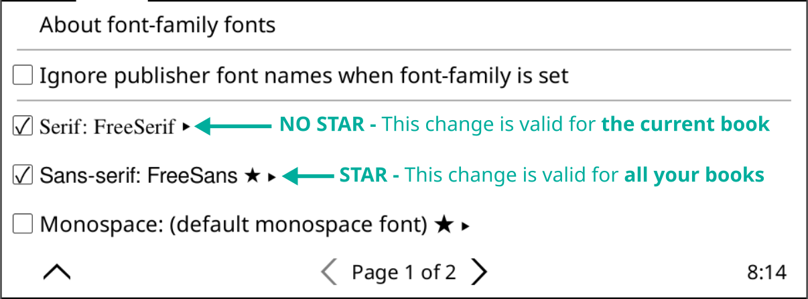 நீங்கள் அடிக்கடி எழுத்துருக்களுக்கு இடையில் மாறினால் (அதாவது மோனோச்பேச் நிரலாக்க புத்தகங்கள் மற்றும் செரிஃப் நாவல்களுக்கு) ஒவ்வொரு முறையும் மெனுவுக்குள் செல்வதை விட இது எளிதாக்குகிறது. உங்கள் எழுத்துருக்கள் மற்றும் வரி இடைவெளி, மாறுபாடு, போல்ட் போன்ற அனைத்து எழுத்துரு தொடர்பான அமைப்புகளுக்கும் சுயவிவரங்களை உருவாக்கலாம் மற்றும் இந்த சுயவிவரங்களை விரைவு பட்டியல் இல் சேர்க்கலாம். எனவே ஒற்றை சைகை மூலம் உங்கள் எழுத்துரு தேர்வு மெனுவைத் திறந்து கீழே உள்ள படத்தில் காட்டப்பட்டுள்ள எழுத்துருவை மாற்றலாம்: 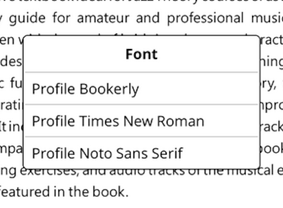 இதை எவ்வாறு செய்வது என்பதை அறிய இந்த வழிகாட்டியின் விரைவான பட்டியல் மற்றும் சுயவிவரங்களை பகுதியை சரிபார்க்கவும். உங்கள் புத்தகத்தில் மோனோச்பேச் எழுத்துருக்கள் (நிரலாக்க புத்தகங்களைப் போல) உள்ள பகுதிகள் இருந்தால், மோனோச்பேச் உரை தொழில்நுட்ப ரீதியாக புத்தகத்தின் மீதமுள்ள அதே அளவிலானதாக இருந்தாலும் கூட இது விகிதாசாரமாகத் தோன்றலாம். இது எழுத்துரு அளவீடுகளால் ஏற்படுகிறது. இந்த வேறுபாட்டை சரிசெய்ய உறவினர் மோனோச்பேச் எழுத்துரு அளவை சரிசெய்ய உங்களை அனுமதிக்கும் ஒரு விருப்பம் கொரியடருக்கு உள்ளது: இயல்புநிலை அளவின் சதவீதமாக அதன் அளவீடுகளை சரிசெய்வதன் மூலம் உங்கள் மோனோச்பேச் எழுத்துருவின் அளவை இங்கே அதிகரிக்கலாம் அல்லது குறைக்கலாம். If you are having problems with the font weights when adding fonts to KOReader, this section can help you to understand how KOReader's font processing works: If you long-press on the Font weight label in the bottom menu, it will tell you which weight classes your current font provides. If your font also has other variants, things can get confusing. Let's say you copied a font family to your device. And upon startup, KOReader has read these variants of the font: Light, Thin, Normal, Medium, ExtraBlack, SemiBold, Bold, Black in this order. You would expect to see Normal variant to be used as the document's normal font (because it is named as Normal) but KOReader will use the Light variant because that is the first font in the list that doesn't have the bold flag. And it will ignore the Thin, Normal and Medium variants because it has already found a "not bold" font for the document. And again according to this list, ExtraBlack will be used as the bold font because it is the first font in the list with the bold flag. And KOReader will ignore the SemiBold, Bold, Black variants, because KOReader has already found the "bold" it is looking for. As a summary of the above: We copied the whole family and expected Normal and Bold variants to be chosen but instead, KOReader used Light and ExtraBlack variants. This happened because the order of the fonts that are fed to KOReader is not under our control so "first come is first served". Solution is, transferring only the font files that you want to be used, like this: கொரியாடரின் பாணி ட்யூக்ச் நற்பொருத்தம் உங்கள் நூல் கொரியாடரால் எவ்வாறு வழங்கப்படுகிறது என்பதை மாற்ற அனுமதிக்கிறது. நாங்கள் இங்கே ஒரு முழு சிஎச்எச் பாடநெறி வழியாக செல்ல மாட்டோம். நாங்கள் உங்களுக்கு அடிப்படைகளைக் காட்ட விரும்புகிறோம், எனவே நீங்கள் ஒரு பாணி மாற்றங்களைக் காணும்போது, அது என்ன செய்கிறது என்பதை நீங்கள் குறைந்தபட்சம் ஒரு தோராயமான சிந்தனை பெறுவீர்கள். ஒரு EPUB ஆவணத்தை ஒரு உஉகுமொ கோப்பு + சில சிஎச்எச் விதிகள் என்று விவரிக்கலாம். இந்த சிஎச்எச் விதிகள் புத்தகத்தின் வெவ்வேறு பகுதிகள் (தலைப்புகள், தைரியமான உரை, மேற்கோள்கள் போன்றவை) வாசகர் பயன்பாட்டில் எவ்வாறு காண்பிக்கப்படும் என்பதை தீர்மானிக்கின்றன. பாணி மாற்றங்கள் உடன், புதிய விதிகளைச் சேர்ப்பதன் மூலமும்/அல்லது உங்கள் புத்தகத்தில் உட்பொதிக்கப்பட்ட வெளியீட்டாளர் எழுதிய விதிகளை மீறுவதன் மூலமும் உங்கள் நூல் எவ்வாறு வழங்கப்படும் என்பதை மாற்றலாம். இதை ஒரு எடுத்துக்காட்டு பாணி ட்யூக் : img {அகலம்: 10px! முக்கியமானது; உயரம்: 10px! முக்கியமானது} எளிய மொழியில் இந்த விதி கூறுகிறது: "அவற்றின் அசல் அளவைப் புறக்கணித்து, இந்த புத்தகத்தில் உள்ள அனைத்து படங்களையும் 10 படப்புள்ளிகள் அகலமாகவும் 10 படப்புள்ளிகள் உயரமாகவும் செய்யுங்கள்." எனவே இந்த பாணி மாற்றத்தை கொரியடருடன் சேர்த்தால், உங்கள் புத்தகத்தில் உள்ள அனைத்து படங்களும் சிறியதாகக் காட்டப்படும். இப்போது இந்த மாற்ற உருப்படியை உருப்படி மூலம் விளக்கலாம்: சுருக்கமாக, இந்த சிஎச்எச் விதி நிலையான அகலம் மற்றும் 10 படப்புள்ளிகள் இன் உயரத்தை அமைக்க வடிவமைக்கப்பட்டுள்ளது உங்கள் புத்தகத்தில் உள்ள அனைத்து img கூறுகளும், அவற்றின் அசல் பாணியை புறக்கணித்து . இவை சில பயனுள்ள பாணி மாற்றங்கள், அவை உங்கள் விருப்பப்படி நீங்கள் நேரடியாகப் பயன்படுத்தலாம் அல்லது மாற்றலாம். அடுத்த தலைப்பு அவற்றை கொரியாடரில் எவ்வாறு பயன்படுத்துவது என்பதை விளக்குகிறது. H1, H2, H3, H4 {எல்லை-மேல்: 2px திட கருப்பு; } H1, H2, H3, H4 {விளிம்பு-மேல்: 2em! முக்கியமானது; } H1, H2, H3, H4 {விளிம்பு-மேல்: 0! முக்கியமானது; } p + p {விளிம்பு-மேல்: 0.5em! முக்கியமானது; விளிம்பு-கீழ்: 0.5em! முக்கியமானது; } img {காட்சி: எதுவுமில்லை! முக்கியமானது; } img {அகலம்: 10px! முக்கியமானது; உயரம்: 10px! முக்கியமானது}
முன், குறியீடு {எழுத்துரு அளவு: 0.6em! முக்கியமானது; வரி உயரம்: 1.8em! முக்கியமானது; பின்னணி-நிறம்: #EEE! முக்கியமானது; விளிம்பு: 1em 0! முக்கியமானது; திணிப்பு: 1em 0! முக்கியமானது; }
சரி, இப்போது பாணி மாற்றங்கள் இருப்பதை நாங்கள் பார்த்தோம். ஆனால் அவற்றை நாம் எவ்வாறு பயன்படுத்தலாம்? கொரியாடரில் பாணி மாற்றங்கள் இல் மூன்று வகைகள் உள்ளன: 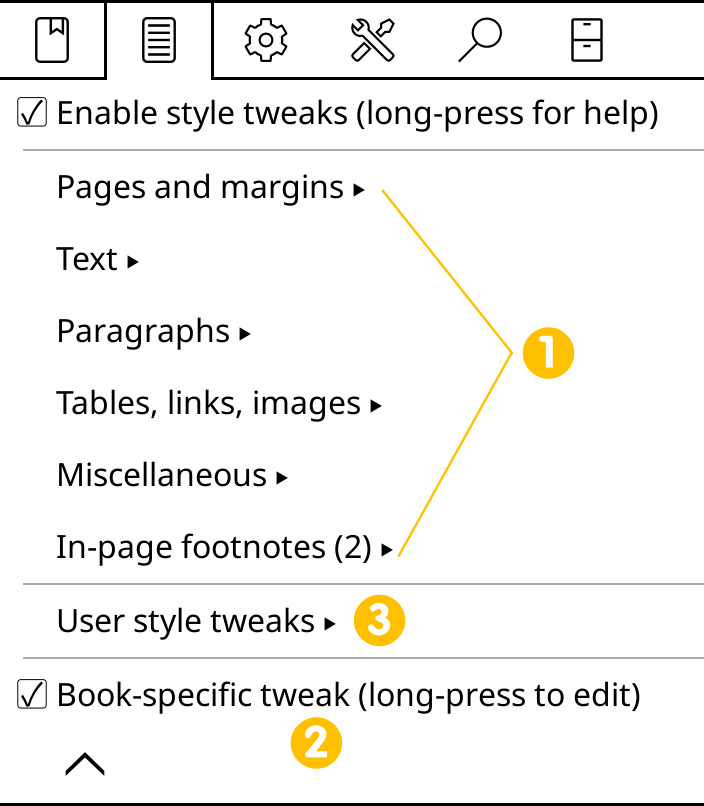 இந்த தலைப்பு புதியது, மற்றும் திரை காட்சி மேலே மற்றும் கீழே. சேர்க்க ஏதாவது? இந்த மாற்றங்கள் கொரியாடரில் சேர்க்கப்பட்டுள்ளன. மெனுவிலிருந்து அவற்றைப் பயன்படுத்த அவற்றை இயக்குவதால் அவை பயன்படுத்த எளிதானவை. நீங்கள் எந்த சிஎச்எச் குறியீட்டையும் எழுத தேவையில்லை: அவை பல பிரிவுகளில் வருகின்றன. தற்போதைய புத்தகத்திற்கு மட்டும் ஒரு மாற்றத்தைப் பயன்படுத்த, , தேர்வுப்பெட்டியைத் தட்டவும். இந்த மாற்றங்களைப் பற்றிய கூடுதல் தகவல்களைப் பெற விரும்பினால் அல்லது அனைத்து புத்தகங்களுக்கும் க்கு இயக்க விரும்பினால், அதன் பெயரில் நீண்ட அழுத்தமாக இருக்கும். ஒரு உரையாடல் தோன்றும்: 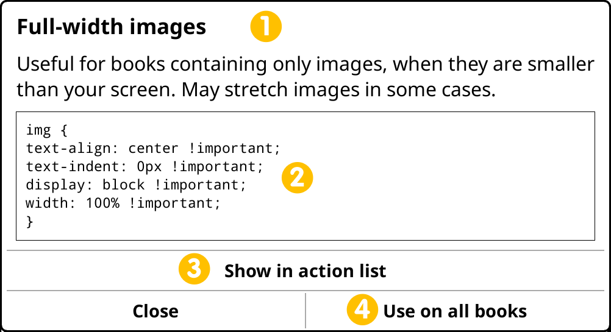 அதன் பெயரிலிருந்து நீங்கள் யூகிக்க முடியும் என, இந்த வகை மாற்றங்கள் நீங்கள் உருவாக்கிய புத்தகத்திற்கு மட்டுமே செயலில் உள்ளன. இந்த நற்பொருத்தம் உங்கள் மாற்றங்களைச் சோதிக்க மிகவும் பயனுள்ளதாக இருக்கும் அல்லது தற்போதைய புத்தகத்தில் ஏதாவது சரிசெய்ய வேண்டுமானால், மற்ற புத்தகங்களில் உங்களுக்கு இது தேவையில்லை என்பதை நீங்கள் அறிவீர்கள். இந்த வகை மாற்றங்களை உருவாக்கிய பிறகு, மற்ற புத்தகங்களிலும் உங்களுக்கு இது தேவைப்படும் என்று நீங்கள் முடிவு செய்தால் (அதாவது அதே வெளியீட்டாளரிடமிருந்து), நீங்கள் அதை பயனர் பாணி மாற்றங்கள் ஆக மாற்றலாம், அதை நாங்கள் விளக்குவோம். புத்தக குறிப்பிட்ட மாற்றங்களை உருவாக்க , நீங்கள் இங்கே காணக்கூடிய ஒருங்கிணைந்த எடிட்டரைப் பயன்படுத்தவும்: இந்த மாற்றங்களின் குழு முந்தையவற்றிலிருந்து அவை உருவாக்கப்பட்ட விதத்தில் வேறுபட்டவை. முந்தைய வகையைப் போலல்லாமல், அவை ஒரு புத்தகத்துடன் மட்டுப்படுத்தப்படவில்லை. உங்கள் எல்லா புத்தகங்களுக்கும் அவை உலகளவில் பயன்படுத்தப்படலாம். செயல்முறை தோராயமாக இது போன்றது, அதை நாங்கள் விரிவாக விளக்குவோம்: 1. பயனர் மாற்றக் கோப்பை உருவாக்குதல்: ஒரு பயனர் பாணி மாற்றங்கள் உண்மையில் ஒரு .css நீட்டிப்புடன் ஒரு சாதாரண உரை கோப்பு. இந்த கோப்பை நீங்கள் உருவாக்கலாம்: உங்கள் கோப்பில் நாங்கள் மேலே குறிப்பிட்ட எடுத்துக்காட்டுகளை நகலெடுக்க / ஒட்டலாம். 2. கோப்பை உங்கள் சாதனத்திற்கு மாற்றுதல்: உங்கள் சிஎச்எச் விதிகளைக் கொண்ட கோப்பு (களை) உருவாக்கிய பிறகு, அவற்றை உங்கள் கொரியடர் நிறுவலின் கீழ் ச்டைலெட்வீக்ச் கோப்புறையில் சேமிக்கவும் அல்லது மாற்றவும். கோப்புகளுக்கு விளக்கப் பெயர்களைக் கொடுங்கள், ஏனெனில் கோப்பு பெயர் கொரியடர் பட்டியல் அமைப்பில் மாற்றத்தின் தலைப்பாக இருக்கும். உங்கள் கோப்பு பெயர்களில் " _ " என்ற அடிக்கோடிட்டு பயன்படுத்தலாம், அவை பட்டியலில் உள்ள இடங்களாக கருதப்படும். உங்கள் கோப்புகளை மாற்றிய பின் கொரியாடரை மறுதொடக்கம் செய்ய வேண்டும், அதனால் அவற்றை ஏற்ற முடியும். 2. மாற்றத்தை செயல்படுத்துதல்: மறுதொடக்கத்திற்குப் பிறகு, ஒரு புத்தகத்தைத் திறந்து இந்த மெனுவுக்குச் செல்லுங்கள்: இப்போது உங்கள் மாற்றத்தை பட்டியலில் அதன் அடுத்த தேர்வுப்பெட்டியுடன் பார்க்க வேண்டும். உங்கள் மாற்றத்தை தற்போதைய புத்தகத்திற்கு மட்டும் பயன்படுத்த, தேர்வுப்பெட்டியைத் தட்டவும். இந்த மாற்றங்கள் அனைத்து புத்தகங்களுக்கும் க்கு இயக்கப்பட வேண்டும் என்று நீங்கள் விரும்பினால், அதன் பெயரில் நீண்ட அழுத்தமாக. ஒரு உரையாடல் தோன்றும். பட்டியல் உருப்படியைத் தட்டவும் எல்லா புத்தகங்களிலும் பயன்படுத்தவும் . ஒரு விண்மீன் (★) பட்டியலில் அதன் பெயருக்கு அடுத்ததாக தோன்றும், இது எல்லா புத்தகங்களுக்கும் இந்த மாற்றங்கள் பயன்படுத்தப்படும் என்பதைக் குறிக்கிறது. அதே படிகளுடன் இதை முடக்கலாம். ஒரு எடுத்துக்காட்டுக்கு கீழே காண்க: 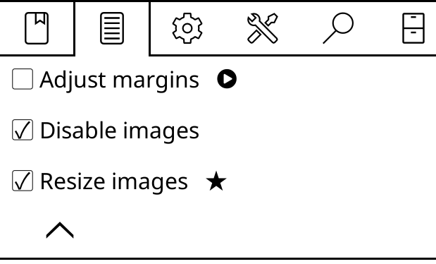 மேலே உள்ள படத்தில், எனது கொரியடர் நிறுவலின் கீழ் ச்டைலெட்வீக்ச் கோப்புறையில் 3 பாணி மாற்றக் கோப்புகள் உள்ளன. தேர்வுப்பெட்டி காலியாக இருப்பதால் முதல் ஒன்று முடக்கப்பட்டுள்ளது. தேர்வுப்பெட்டி குறிக்கப்பட்டதிலிருந்து மட்டுமே இந்த புத்தகத்திற்கு இரண்டாவதாக இயக்கப்பட்டது, ஆனால் விண்மீன் இல்லை. எல்லா புத்தகங்களுக்கும் மூன்றாவது இயக்கப்பட்டது (★) . முதல் மாற்றத்திற்கு அடுத்ததாக வலது முக்கோண படவுரு இருப்பதை நீங்கள் கவனிக்கலாம். இதன் பொருள் சைகைகளைப் பயன்படுத்தி இந்த மாற்றத்தை செயல்படுத்த முடியும். இது அடுத்த தலைப்பில் விளக்கப்படும். உங்கள் பயனர் பாணி மாற்றங்களை உருவாக்கும்போது நீங்கள் பல மாற்றக் கோப்புகளை உருவாக்கலாம், ஒவ்வொன்றும் மேலே உள்ள எடுத்துக்காட்டு படத்தைப் போலவே புத்தகத்தின் சில பகுதியையும் மாற்றியமைக்கிறது. தலைப்புகள் க்கு ஒரு கோப்பை நீங்கள் வைத்திருக்கலாம் பத்திகள் , இணைப்புகள் போன்றவற்றை மாற்றியமைக்க. உங்கள் ஆவணத்தைப் பொறுத்து மாற்றங்களை இயக்க இந்த மட்டு அமைப்பு உங்களை அனுமதிக்கிறது. நாங்கள் மேலே கூறியது போல், இந்த பட்டியல் இடத்திலிருந்து பயனர் பாணி மாற்றங்கள் ஐ மாற்றலாம்: ஒவ்வொரு முறையும் மெனுவுக்குச் செல்வதை விட உங்கள் பாணி மாற்றங்களை மாற்றுவதற்கு எங்களுக்கு எளிதான வழிகள் உள்ளன. 1. நீங்கள் ஒரு மாற்றத்திற்கு ஒரு சைகை ஒதுக்கலாம் இதைச் செய்ய, முதலில் நாம் சைகை செயல்களின் பட்டியலில் எங்கள் பயனர் பாணி மாற்றங்கள் ஐ சேர்க்க வேண்டும்: சரிசெய்தல் விளிம்புகளுக்கு அடுத்ததாக மேலே உள்ள எடுத்துக்காட்டு படத்தில் இதைக் காணலாம் பாணி மாற்றங்கள். இப்போது இந்த பாணி மாற்றங்கள் செயல்கள் பட்டியலில் சேர்க்கப்பட்டுள்ளது. நீங்கள் அதை சைகை மேலாளர்> பிரதிபலிக்கக்கூடிய ஆவணங்கள் வகையின் கீழ் காணலாம். இது பட்டியலின் முடிவில் இருக்கும். 2. உங்கள் விரைவான பட்டியலில் ஒரு மாற்றத்தை சேர்க்கலாம் உங்கள் விரைவான பட்டியல் க்கு ஒரு மாற்றத்தைச் சேர்க்க, முதலில் மேலே உள்ள தலைப்பில் விவரிக்கப்பட்டுள்ளபடி செயல்கள் பட்டியலில் சேர்க்கப்பட வேண்டும். இந்த வழிகாட்டியின் விரைவான பட்டியல் பிரிவின் கீழ் உள்ள வழிமுறைகளைப் பின்பற்றலாம். நீங்கள் இரண்டு முறைகளையும் ஒன்றிணைத்து, உங்கள் பாணி மாற்றங்களுக்கு ஒரு சிறப்பு விரைவான பட்டியல் ஐ உருவாக்கி, பின்னர் அதை ஒரு சைகைக்கு ஒதுக்கலாம். இந்த வழியில், ஒரு எளிய சைகையுடன் உங்கள் அனைத்து பாணி மாற்றங்களையும் அணுகலாம் மற்றும் தேவைக்கேற்ப அவற்றை செயல்படுத்தலாம். சில புத்தகங்களில், தலைப்புகள் & lt; h1 & gt; அல்லது & lt; h2 & gt; கூறுகள், ஆனால் & lt; p class="tit123" & gt; போன்றவற்றில். மூலத்தை சரிபார்த்து உரையின் ஒரு பகுதிக்கு எந்த தேர்வாளர்கள் பயன்படுத்தப்படுகிறார்கள் என்பதை நீங்கள் காணலாம். இதை அடைய, நீங்கள் ஆர்வமுள்ள உறுப்பைச் சுற்றியுள்ள உரையைத் தேர்ந்தெடுத்து, உரையாடலில் இருந்து உஉகுமொ ஐப் பார்க்கவும். மேலே உள்ள எடுத்துக்காட்டில், உங்கள் பாணி மாற்றங்கள் இப்படி இருக்கும்: P.tit123 {எல்லை-மேல்: 2px திட கருப்பு; } இதற்கு பதிலாக: H1 {எல்லை-மேல்: 2px திட கருப்பு; } ஒரு உண்மையான புத்தகத்துடன் நீங்கள் செய்யக்கூடியது போல உங்கள் புத்தகத்துடன் தொடர்புகொள்வதற்கான விருப்பங்களை கொரியடர் உங்களுக்கு வழங்குகிறது. புத்தகக்குறி சாளரத்தின் பல அமைப்புகளை இங்கே மாற்றலாம்: புக்மார்க்குகள்: மேல் வலது மூலையை அழுத்துவதன் மூலம் நீங்கள் ஒரு புக்மார்க்கைச் சேர்க்கலாம் (மற்றும் அகற்றலாம்). இது ஒரு உண்மையான புத்தகத்தில் ஒரு பக்கத்தின் மூலையை மடிப்பதற்கு சமம் மற்றும் நீங்கள் அதை இயக்கும்போது இதேபோன்ற ஐகானைக் காட்டுகிறது. சிறப்பம்சங்கள்: 4 வெவ்வேறு பாணிகளில் உரையை முன்னிலைப்படுத்தலாம். கீழேயுள்ள படத்தில், ஒரு சாதாரண பத்தியைத் தொடர்ந்து வெவ்வேறு பாணிகள் சிறப்பம்சங்களைக் காணலாம். லைட்டன் (சாம்பல் பின்னணியுடன்), அடிக்கோடிட்டு, ச்ட்ரைக்அவுட் மற்றும் தலைகீழ் . இந்த பாணிகள் அனைத்தையும் ஒரே நேரத்தில் பயன்படுத்தலாம், அவை வெவ்வேறு வண்ண சிறப்பம்சமாக குறிப்பான்கள் போல. அல்லது உங்களுக்கு பிடித்த பாணியை நீங்கள் தீர்மானிக்கலாம் மற்றும் நீண்ட நேரம் அழுத்துவதன் மூலம் இந்த மெனுவிலிருந்து இயல்புநிலையாக அமைக்கலாம்: உங்களிடம் வண்ணத் திரை கொண்ட சாதனம் இருந்தால், நீங்கள் வெவ்வேறு வண்ணங்களில் சிறப்பம்சங்களை உருவாக்கலாம்: 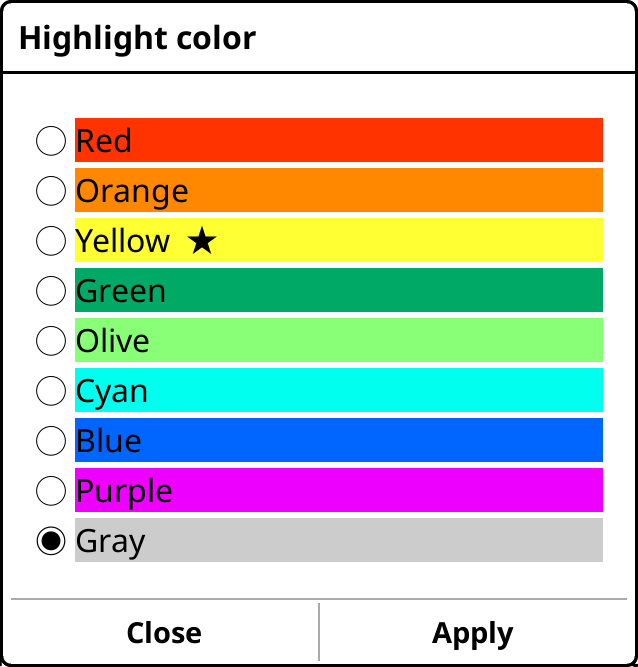 வண்ண சிறப்பம்சங்களுக்கான சில குறிப்புகள்:
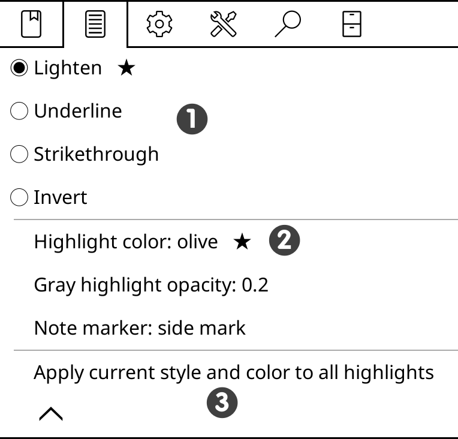 குறிப்புகள்: உங்கள் சிறப்பம்சங்களுக்கும் குறிப்புகளையும் சேர்க்கலாம். ஒரு சிறப்பம்சத்தைத் தட்டவும், POPUP மெனுவிலிருந்து ஐச் சேர் ஐத் தேர்வுசெய்க. நீங்கள் ஒரு குறிப்பு மார்க்கர் ஐ தேர்வு செய்யலாம், இது சிறப்பம்சங்கள் ஒரு குறிப்பைக் கொண்டுள்ளன என்பதைக் காட்டுகிறது. மூன்று பாணிகள் உள்ளன: அண்டர்லைன், சைட் லைன் மற்றும் பக்க குறி (இது கீழே உள்ள படத்தின் வலது பக்கத்தில் காட்டப்பட்டுள்ள பென்சில் ஐகான்): இந்த அம்சத்தை இயக்க மற்றும் குறிப்பு மார்க்கர் பாணியைத் தேர்வுசெய்ய, செல்ல: After highlighting a part of your document, you can tap on the highlight to see the highlight menu. From this highlight menu, you can reach another extended menu by tapping on the ... (three dots) button as shown below: Using this extended menu you can:
வெவ்வேறு பயன்பாட்டு நிகழ்வுகளுக்கு கொரியடர் இரண்டு சிறப்பம்சமான முறைகளைக் கொண்டுள்ளது:
இயல்பான பயன்முறை ஒரு தொலைபேசி/டேப்லெட்டில் உங்கள் விரலுடன் ஒரு உரையைத் தேர்ந்தெடுப்பதைப் போன்றது, மேலும் உங்கள் சிறப்பம்சங்கள் ஒரு பக்கத்தை விடக் குறைவாக இருந்தால் மிகவும் பொருத்தமானது. நீங்கள் பக்க எல்லைகளை அடையும்போது, (EPUB/HTML ஆவணங்களில் மட்டுமே) ஐ முன்னிலைப்படுத்த நீங்கள் பக்கத்தைத் திருப்புவார். இந்த அம்சத்தை நீங்கள் முடக்கலாம்: நீங்கள் பக்க எல்லைகளை அடையும்போது, (EPUB/HTML ஆவணங்களில் மட்டுமே) ஐ முன்னிலைப்படுத்த நீங்கள் பக்கத்தைத் திருப்புவார். இந்த அம்சத்தை நீங்கள் முடக்கலாம்: இந்த உரையாடல் பொதுவாக திரையின் மையத்தில் திறக்கும். இந்த உரையாடல் உங்கள் சிறப்பம்சமாக இருப்பதற்கு நெருக்கமாக திறக்க விரும்பினால், நீங்கள் நடுவண் விருப்பத்தை சைகை நிலை (இந்த மெனுவின் இரண்டாவது பக்கத்தில் அமைந்துள்ளது) நீங்கள் முன்னிலைப்படுத்தும்போது, உங்கள் தேர்வைச் சுற்றி தொடர்புடைய நிறுத்தற்குறி அடையாளங்களை சேர்க்க கொரியடர் முயற்சிக்கிறார். எடுத்துக்காட்டாக, முதல் வார்த்தையிலிருந்து ஒரு வாக்கியத்தின் கடைசி சொல் வரை நீங்கள் முன்னிலைப்படுத்தினால், கொரியடர் தானாகவே வாக்கியத்தின் இரு முனைகளிலும் நிறுத்தற்குறி மதிப்பெண்களை உங்கள் சிறப்பம்சமாக சேர்க்கும். ஒரு குறிப்பு சேர்க்கப்பட்ட உடன் ஏற்கனவே முன்னிலைப்படுத்தப்பட்ட உரையைத் தட்டும்போது, இந்த பாப்அப் மெனுவைக் காண்பீர்கள். மேலே உள்ள மெனுவைத் திறக்க திருத்து சிறப்பம்சத்தைத் திருத்து ஐத் தட்டவும் நீங்கள் சிறப்பியல்பு மற்றும் உள்ளிட்ட குறிப்பு இரண்டையும் திருத்தலாம்: ஏற்கனவே சிறப்பிக்கப்பட்டுள்ள உரையை நீங்கள் தட்டும்போது (குறிப்பு இல்லாமல்) , இந்த மேல்தோன்றல் மெனுவைக் காண்பீர்கள். நீக்கு மற்றும் குறிப்பு உருப்படிகளைச் சேர்க்கவும். சிறப்பம்சத்தை நீட்டிக்க அல்லது சுருக்க கீழே வரிசை பட்டியல் உருப்படிகள் பயன்படுத்தப்படுகின்றன. 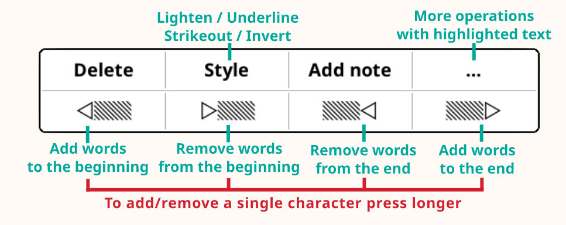 ஒரு குறிப்பு சேர்க்கப்பட்ட உடன் ஏற்கனவே முன்னிலைப்படுத்தப்பட்ட உரையைத் தட்டும்போது, இந்த மேல்தோன்றல் மெனுவைக் காண்பீர்கள். மேலே உள்ள மெனுவைத் திறக்க திருத்து சிறப்பம்சத்தைத் திருத்து ஐத் தட்டவும் நீங்கள் சிறப்பியல்பு மற்றும் உள்ளிட்ட குறிப்பு இரண்டையும் திருத்தலாம்: 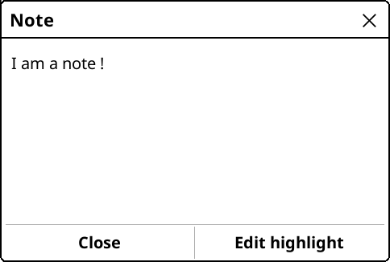 உங்கள் புக்மார்க்குகள் பக்கத்தில் பட்டியல் ஐகானை அழுத்துவதன் மூலம் ஒரே ஒரு வகை புக்மார்க்கைக் காண நீங்கள் பார்வையை வடிகட்டலாம் ( 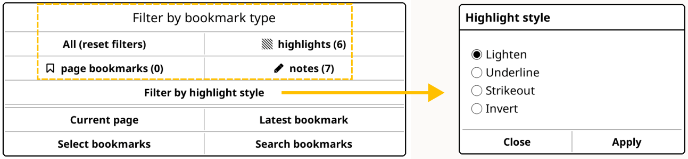 ஒரு குறிப்பைச் சேர்ப்பதைத் தவிர, உங்கள் புக்மார்க்குகள் பட்டியல் இல் காட்டப்பட்டுள்ள சிறப்பம்சமாக உரையைத் திருத்தவும் கொரியடர் உங்களை அனுமதிக்கிறது. சில சூழ்நிலைகளில் இது ஒரு சிறப்பம்சத்திற்கு ஒரு குறிப்பைச் சேர்ப்பதை விட மிகவும் பயனுள்ளதாக இருக்கும். உதாரணமாக நீங்கள் ஒரு உரையை மதிப்பாய்வு செய்கிறீர்கள் என்று கற்பனை செய்து பாருங்கள். பல தேதிகளைக் கொண்ட ஒரு வாக்கியத்தை நீங்கள் முன்னிலைப்படுத்த விரும்புகிறீர்கள், தேதிகளில் ஒன்று தவறு. இந்த தவறை சுட்டிக்காட்ட ஒரு குறிப்பைச் சேர்க்க விரும்பினால், உங்கள் குறிப்பில் நீங்கள் குறிப்பிட வேண்டும், எது தவறு. ஆனால் நீங்கள் ஒரு சிறப்பம்சத்தின் உரையைத் திருத்தினால், நீங்கள் நேரடியாக "(இந்த தேதி சரிபார்க்கப்பட வேண்டும்)" சிக்கலான தேதிக்கு அடுத்ததாக எழுதலாம். இந்த திருத்துதல் மாறாது புத்தக உள்ளடக்கம் அல்லது பக்கத்தில் சிறப்பிக்கப்பட்ட பத்தியை. அதே சிறப்பம்சமான வாக்கியத்தை நீங்கள் இன்னும் வாசகரில் காண்பீர்கள். உங்கள் திருத்தம் புக்மார்க்குகள் பட்டியல் இல் தெரியும். உங்கள் சிறப்பம்சங்களை பின்னர் ஏற்றுமதி செய்யும் போது, திருத்தப்பட்ட உரை ஏற்றுமதி செய்யப்படும். சிறப்பம்சமாக உரையைத் திருத்த, நீங்கள் முடியும்: புக்மார்க்ச் சாளரத்திலிருந்து நீங்கள் இதைச் செய்யலாம்: அசல் சிறப்பம்சத்திற்கு ஒரு திருத்தப்பட்ட உரையை நீங்கள் மாற்றியமைக்க விரும்பினால், மேலே உள்ள படிகளைப் பின்பற்றவும், 3 , உரை க்கு பதிலாக, உரை பொத்தானை மீட்டமைக்கவும். பொதுவாக நீங்கள் புக்மார்க்குகள் பட்டியலைத் திறக்கும்போது, உங்கள் சிறப்பம்சங்களின் உள்ளடக்கம் மட்டுமே காட்டப்படும். ஒரு சிறப்பம்சத்தில் நீங்கள் ஒரு குறிப்பைச் சேர்த்தால், புக்மார்க்ச் பட்டியலில் பென்சில் ஐகானை மட்டுமே காண்பீர்கள். சேர்க்கப்பட்ட குறிப்பைக் காட்ட (மற்றும் திருத்த) இந்த பட்டியலில் உள்ள ஒரு உருப்படியை நீங்கள் நீண்ட நேரம் அழுத்தலாம். உங்கள் <ச்பான் கிளாச் = "யுஐ"> புக்மார்க்குகள் பட்டியல் இல் குறிப்பு உரையையும் நீங்கள் காண விரும்பினால் அதை இங்கிருந்து அமைக்கலாம்: காண்பிக்க நீங்கள் தேர்வு செய்யலாம்:
இந்த பல்துறை சொருகி உங்கள் சிறப்பம்சங்களை உள்ளக கோப்புகள் அல்லது நிகழ்நிலை சேவைகள் க்கு ஏற்றுமதி செய்யலாம்.
உங்கள் வாசகர் சாதனத்திலிருந்து உங்கள் சிறப்பம்சங்கள் மற்றும் குறிப்புகளை ஏற்றுமதி செய்வதற்கான பல்வேறு வழிகளை கொரியடர் வழங்குகிறது: இந்த பல்துறை சொருகி உங்கள் சிறப்பம்சங்களை உள்ளக கோப்புகள் அல்லது நிகழ்நிலை சேவைகள் க்கு ஏற்றுமதி செய்யலாம். உள்ளக ஏற்றுமதி இந்த கோப்பு வடிவங்களில் உங்கள் சிறப்பம்சங்களை உங்கள் சாதனத்திற்கு ஏற்றுமதி செய்யலாம்: உங்கள் விருப்பமான ஏற்றுமதி வடிவங்களை நீங்கள் தேர்வு செய்யலாம்: ஏற்றுமதி இருப்பிடத்தை நீங்கள் காணலாம் (நீங்கள் விரும்பினால் அதை மாற்றவும்): நிகழ்நிலை சேவைகள் நெட்வொர்க்கில் இந்த சேவைகளுக்கு நீங்கள் ஏற்றுமதி செய்யலாம்: இந்த சேவைகளுக்கான விரிவான அமைவு வழிமுறைகளை எங்கள் தொடர்புடைய விக்கி பக்கம் இல் காணலாம். உங்கள் வடிவங்களைத் தேர்ந்தெடுத்த பிறகு, தற்போதைய நூல் அல்லது உங்கள் நூலகத்தில் உள்ள அனைத்து புத்தகங்களுக்கும் ஒரே சொருகி மெனுவிலிருந்து குறிப்புகளை ஏற்றுமதி செய்யலாம். உங்கள் நூலகத்தில் சில புத்தகங்களை மட்டுமே ஏற்றுமதி செய்ய விரும்பினால், இதை கோப்பு உலாவி இலிருந்து செய்யலாம்: You can also export only chosen highlight styles: lighten, underline, strikeout, invert. Normally KOReader exports all of them. You can choose from: You can customize the filename of the exports from the plugin's menu (Set export filename) to include date/time information and other useful info. கோஇக்லைட்ச் என்பது உங்கள் கணினியில் நிறுவக்கூடிய வெளிப்புற நிரலாகும். உங்கள் வாசகரை உங்கள் கணினியில் செருகும்போது இது உங்கள் புத்தகக் குறிப்புகள் மற்றும் சிறப்பம்சங்களை அணுகலாம். பதிவிறக்கம் மற்றும் அறிவுறுத்தல்களுக்கு அறிவிலிமையம் திட்டப் பக்கத்தை சரிபார்க்கவும். காலிபர் என்பது உங்கள் கணினியில் நிறுவக்கூடிய வெளிப்புற நிரலாகும். உங்கள் காலிபர் தரவுத்தளத்தில் அதன் கொரியடர் ஒத்திசைவு சொருகி மூலம் சிறப்பம்சங்களை இறக்குமதி செய்யலாம். குறிப்பிடப்பட்ட சொருகி காலிபர் பயன்பாட்டிற்குள் நிறுவலாம். பதிவிறக்கம் மற்றும் அறிவுறுத்தல்களுக்கு திட்டப் பக்கம் ஐ சரிபார்க்கவும்.
KOReader provides you different ways to read a PDF/DJVU document which is optimized for bigger page sizes (generally A4 or Letter) on your smaller screen device:
1. You can enableReflow ரிஃப்ளோ உங்கள் ஆவணத்திலிருந்து உரை பகுதியைப் பிரித்தெடுக்க முயற்சிக்கிறது (அது கிடைத்தால்) அதை ஒற்றை நெடுவரிசையாக வடிவமைக்கவும். முடிவுகள் பொதுவாக திருப்திகரமாக இருக்கும். இதைத் தட்டுவதன் மூலமும் வைத்திருப்பதன் மூலமும் இதை இயல்புநிலை ஆக அமைக்கலாம். 2. நீங்கள் இயக்கலாம் உள்ளடக்கத்திற்கு பெரிதாக்கு 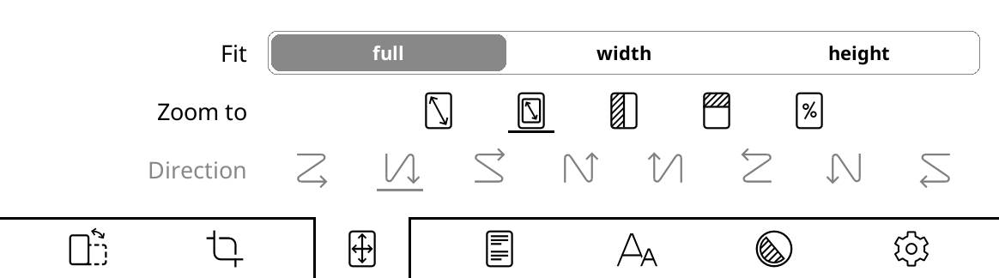 இந்த விருப்பத்துடன் கொரியடர் உங்கள் ஆவணத்திலிருந்து விளிம்புகளை பயிர் செய்ய முயற்சிக்கிறார், எனவே உரை உங்கள் திரையில் பெரிதாக இருக்கும். அதே பட்டியலில் பொருத்தம் க்கு அகலம் க்கு அமைக்கலாம், இது முழு பக்கத்திற்கும் பதிலாக பக்க அகலத்தை மட்டுமே பொருத்த முயற்சிக்கும், எனவே உங்கள் உரை பெரியதாக இருக்கும். 3. You can try to use your device inLandscape orientation அதே மெனுவிலிருந்து உங்கள் ஆவணத்திற்கு பொருத்தமான ஓட்ட திசையைத் தேர்ந்தெடுக்கவும்: 4. நீங்கள் 100 சதவிகித அளவை பெரிதாக்கலாம், அதற்கு பதிலாக வெவ்வேறு பகுதிகளைப் படிக்க திரையை உருட்டலாம் காமிக் புத்தகங்களுக்கு இது மிகவும் உதவியாக இருக்கும். இந்த பட்டியல் உருப்படியிலிருந்து முதலில் நெடுவரிசை பயன்முறை ஐ இயக்கு: அதே மெனுவிலிருந்து உங்கள் ஆவணத்திற்கு பொருத்தமான ஓட்ட திசையைத் தேர்ந்தெடுக்கவும்: இந்த பயன்முறையில் நீங்கள் கிடைமட்ட/செங்குத்து ஒன்றுடன் ஒன்று மற்றும் நெடுவரிசைகளின் எண்ணிக்கை அதே மெனுவிலிருந்து உங்கள் திரையில் உள்ள உரையை சிறப்பாக பொருத்தலாம். இந்த அமைப்புகளுடன் ஆய்வு செய்ய தயங்க. 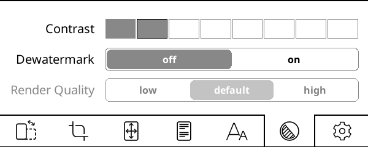 மாறுபாடு அமைப்பு உங்கள் ஆவணத்தில் கருப்பு அளவை சரிசெய்கிறது. உங்கள் ஆவணத்தில் உள்ள உரை மற்றும் படங்கள் இரண்டிற்கும் அதே மாறுபட்ட மதிப்பு பொருந்தும் என்பதை அறிந்து கொள்ளுங்கள். நீங்கள் அதை மிக அதிகமாக அமைத்தால், உங்கள் படங்கள் மிகவும் இருட்டாக மாறக்கூடும். dewatermark வழங்கப்பட்ட ஆவணத்திலிருந்து வாட்டர்மார்க்சை நீக்குகிறது. சாம்பல் பின்னணியை அகற்றவும் இதைப் பயன்படுத்தலாம். இந்த நற்பொருத்தம் எளிதான வாசிப்புக்கு மிகவும் மாறுபாட்டை உருவாக்க கிரேச்கேல் அல்லது வண்ண ஆவணத்தை பிளாக் & வைட் ஆக மாற்றலாம். தரத்தை வழங்குதல் (ரிஃப்ளோ பயன்முறையில் மட்டுமே செயலில் உள்ளது) உரை மற்றும் பட பிரித்தெடுக்கும் செயலாக்கம் மற்றும் வெளியீட்டின் தரத்தை அமைக்கிறது. உயர் மிகவும் மகிழ்ச்சி அளிக்கிறது, ஆனால் இது உங்கள் ஆவணத்தைப் பொறுத்து இயல்புநிலை ஐ விட மிகவும் மெதுவாக (பக்க திருப்பத்திற்கு பல வினாடிகள்) இருக்கும். உங்கள் PDF/DJVU கோப்புகள் மெதுவாக இருந்தால், நீங்கள் சரிபார்க்க வேண்டிய முதல் அமைப்பு இதுதான். 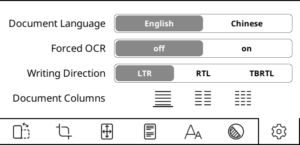 ஆவண மொழி OCR இயந்திரத்தால் பயன்படுத்தப்படும் மொழியை அமைக்கிறது. கட்டாய OCR பெயர் சொல்வது போல், ஆவணத்தில் உரை அடுக்கு இருந்தாலும் OCR ஐப் பயன்படுத்தும்படி கட்டாயப்படுத்துகிறது. திசை எழுதுதல் (ரிஃப்ளோ பயன்முறையில் மட்டுமே செயலில் உள்ளது) அசல் ஆவணத்தின் திசையை அமைக்கிறது. அரபு மற்றும் ஈப்ரு போன்ற மொழிகளுக்கு இதை rtl என அமைக்கவும். ஆவண நெடுவரிசைகள் (ரிஃப்ளோ பயன்முறையில் மட்டுமே செயலில்) அசல் ஆவணத்தில் உள்ள உரை நெடுவரிசைகளின் எண்ணிக்கையை அமைக்கிறது. 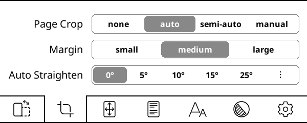 ஆட்டோ ச்ட்ரைன் நற்பொருத்தம் ஒரு சிக்கலான ஆவணத்தின் பக்கங்களை நேராக்க முடியும், எடுத்துக்காட்டாக ஒரு PDF இன் பக்கங்கள் ஒரு கோணத்தில் வருடு செய்யப்படுகின்றன. இது PDF, DJVU, CBZ/CBT ஆவணங்கள் மற்றும் படம் கோப்புகளில் கிடைக்கிறது. இயக்க, கொரியடர் சரிசெய்ய முயற்சிக்கும் அதிகபட்ச சாய்வு கோணத்தைத் தேர்வுசெய்க. அது சரிசெய்யவில்லை என்றால் நீங்கள் ஒரு பெரிய கோணத்தைத் தேர்வு செய்ய வேண்டியிருக்கும். இந்த நற்பொருத்தம் பல காரணிகளைப் பொறுத்து உங்கள் வாசகரை மெதுவாக்கும் என்பதை நினைவில் கொள்க. உங்கள் சிறப்பம்சங்களைச் சேமிக்க, முந்தைய பிரிவில் விளக்கப்பட்டுள்ள கொரியடரின் நற்பொருத்தம் அம்சத்தைப் பயன்படுத்தலாம். உங்கள் சிறப்பம்சங்களை ஒரு PDF ஆவணத்தில் செய்கிறீர்கள் என்றால், கொரியடர் அவற்றை நேரடியாக PDF கோப்பில் சேமிக்க முடியும். சில சூழ்நிலைகளில் இது பயனுள்ளதாக இருக்கும், ஏனெனில் இந்த முறையுடன், உங்கள் சிறப்பம்சங்கள் PDF கோப்பின் ஒரு பகுதியாக மாறும். இதன் பொருள் கொரியாடரை நிறுவாமல் பிற பயன்பாடுகள் அல்லது தளங்களில் அவற்றைக் காணலாம். எடுத்துக்காட்டாக, நீங்கள் மற்றொரு பயனருக்கு சிறப்பம்சங்களுடன் ஒரு கோப்பை அனுப்புகிறீர்கள் என்றால், உங்கள் சிறப்பம்சங்களைக் காண அவர்கள் கொரியாடரை நிறுவ வேண்டியதில்லை. உங்கள் சிறப்பம்சங்கள் சேமிக்கப்பட்ட உங்கள் சிறப்பம்சங்களுடன் நீங்கள் PDF கோப்பை அனுப்பலாம், மேலும் அவை திறந்து அவற்றை ஒரு இணக்கமான PDF ரீடர் மூலம் பார்க்கலாம். This feature should work on all PDF readers. We tested and confirmed these: Adobe Acrobat Reader, Chrome Browser, Deepin Reader, Evince, Firefox Browser, Foxit Reader, Ghostscript, LibreOffice, Moon Reader, MuPDF, Okular, Xpdf, Zathura. பிற்கால பயன்பாட்டிற்கான சிறப்பம்சங்களை உருவாக்குவது குறிப்பிடத்தக்க முயற்சியை உள்ளடக்கியது என்பதால், இந்த அம்சத்தைப் பயன்படுத்த நீங்கள் திட்டமிட்டால், வெறுப்பூட்டும் சூழ்நிலைகளைத் தவிர்ப்பதற்காக இது எவ்வாறு செயல்படுகிறது என்பதை நீங்கள் புரிந்து கொள்ள வேண்டும். விரைவான சுருக்கம்: உங்கள் PDF சிறப்பம்சங்களை பின்னர் நீக்க அல்லது ஏற்றுமதி செய்ய விரும்பினால், நீங்கள் ஐ நகலெடுக்க வேண்டும். எச்.டி.ஆர் கோப்புறை உங்கள் புத்தகத்துடன் உங்கள் புத்தகத்தை பிற சாதனங்களுக்கு நகலெடுக்கும்போது தொடர்புடையது. இந்த கோப்புறை இல்லாமல், கொரியேடர் இன்னும் சேமிக்கப்பட்ட சிறப்பம்சங்களைக் காட்ட முடியும், ஆனால் அவை கோப்பில் எங்கிருக்கிறார்கள் என்பதை அறிய முடியாது, எனவே அவற்றை மாற்ற முடியாது. இதைப் பற்றிய கூடுதல் தகவலுக்கு தொடர்ந்து படிக்கவும். கொரியாடரில் சாதாரண சிறப்பம்சங்கள் எவ்வாறு செயல்படுகின்றன கொரியாடரில் நீங்கள் ஒரு சிறப்பம்சமாக இருக்கும்போது, ஆவணம் ஒரு எபப் அல்லது பி.டி.எஃப் ஆக இருந்தாலும், இந்த சிறப்பம்சமாக அமைப்புகள் கோப்பில் எழுதப்பட்டுள்ளது. எடுத்துக்காட்டாக, நீங்கள் படிக்கிறீர்கள் என்றால் ஆலிச் இன் வொண்டர்லேண்ட்.இபப் உங்கள் புத்தகத்தின் அதே கோப்புறையில் ஆலிச் இன் வொண்டர்லேண்ட்.சிடிஆர் என்ற கோப்புறை உங்களிடம் இருக்கும். உங்கள் சிறப்பம்சங்கள் இந்த இன் கீழ் ஒரு கோப்பில் வைக்கப்படும். SDR கோப்புறை . இதன் பொருள், உங்கள் புத்தகத்துடன் தொடர்புடைய SDR கோப்புறை இந்த ஐ நீக்கியால், உங்கள் சிறப்பம்சங்களை இழப்பீர்கள். கொரியாடரில் PDF சிறப்பம்சங்கள் எவ்வாறு செயல்படுகின்றன PDF சிறப்பம்சங்கள் நற்பொருத்தம் மேலே உள்ள விளக்கத்தை விட சற்று வித்தியாசமாக செயல்படுகிறது. நாங்கள் முன்பு குறிப்பிட்டது போல, உங்கள் PDF சிறப்பம்சங்களை நீங்கள் சேமிக்கும்போது, அவை நேரடியாக PDF கோப்பில் எழுதப்படும், அதாவது அவை கோப்பின் ஒரு பகுதியாக மாறும். அதனால்தான் நீங்கள் இந்த PDF ஐ மற்றொரு பயனருக்கு அனுப்பலாம், மேலும் அவர்கள் இணக்கமான PDF வாசகருடன் சிறப்பம்சங்களைக் காணலாம். அவர்களுக்கு உங்கள் தேவையில்லை. எச்.டி.ஆர் கோப்புறை உங்கள் சிறப்பம்சங்களின் பதிவைக் கொண்டுள்ளது, ஏனெனில் இப்போது சிறப்பம்சங்கள் நேரடியாக PDF கோப்பில் உட்பொதிக்கப்பட்டுள்ளன. இந்த அம்சத்தை நீங்கள் பயன்படுத்தும் போது எழக்கூடிய சிக்கலை விளக்குவோம். உங்கள் ஈ-ரீடர் இல் ஒரு PDF புத்தகத்தைப் படிக்கிறீர்கள் என்று கற்பனை செய்து பாருங்கள்: இப்போது உங்கள் இரு சாதனங்களிலும் நிலைமை ஒரே மாதிரியாகத் தெரிகிறது. உங்கள் ஈ-ரீடர் மற்றும் தொலைபேசி கொரியேடர் PDF கோப்பை ஒரே சிறப்பம்சங்களுடன் காட்டுகிறது. ஆனால் அது தெரிகிறது ஒரே மாதிரியானது, உண்மையில் ஒரு பெரிய வேறுபாடு உள்ளது. உங்கள் ஈ-ரீடர் இல் உள்ள கொரியடர் இந்த பி.டி.எஃப் கோப்பில் எந்த சிறப்பம்சங்கள் கொரியாடரால் செய்யப்படுகின்றன, ஏனெனில் அதில் உள்ளது. எச்.டி.ஆர் கோப்புறை. ஆனால் உங்கள் தொலைபேசியில் உள்ள கொரியடருக்கு இந்த அறிவு இல்லை. இது PDF கோப்பு மட்டுமே உள்ளது. நீங்கள் PDF சிறப்பம்சங்களை நீக்க அல்லது அவற்றை ஏற்றுமதி செய்ய முயற்சிக்கும்போது வேறுபாடு எழுகிறது. உங்கள் ஈ-ரீடர் இந்த PDF சிறப்பம்சங்களை நீக்கி ஏற்றுமதி செய்யலாம். ஆனால் உங்கள் தொலைபேசி கொரியாடர் முடியாது, ஏனென்றால் நாங்கள் சொன்னது போல், அதற்கு இல்லை. எச்.டி.ஆர் கோப்புறை உங்கள் புத்தகத்தின் எனவே புத்தகத்தில் உள்ள சிறப்பம்சங்கள் அசல் புத்தகத்தின் ஒரு பகுதியைப் போலவே இருக்கும். எனவே சுருக்கமாக, உங்கள் PDF சிறப்பம்சங்களை பின்னர் நீக்க அல்லது ஏற்றுமதி செய்ய விரும்பினால், நீங்கள் ஐ நகலெடுக்க வேண்டும். எச்.டி.ஆர் கோப்புறை உங்கள் புத்தகத்துடன் உங்கள் புத்தகத்தை பிற சாதனங்களுக்கு நகலெடுக்கும்போது தொடர்புடையது. KOReader can import highlights from PDF files which are marked with other PDF applications. We can't give a list of compatible applications, but import feature generally works with popular PDF readers. To import the highlights: After the import process, highlights in the PDF will turn into regular KOReader highlights. Which means, you can: How deletion works: When you import highlights, KOReader doesn't modify the original highlights in your PDF. It adds imported highlights as a layer on top of the originals. So if you delete an imported highlight, only this added layer is deleted. Your original highlights are not deleted from the PDF file. You can open this PDF with another reader and still see the original highlights.
OCR (ஆப்டிகல் எழுத்து அங்கீகாரம்) என்பது படங்களிலிருந்து உரையை பிரித்தெடுக்கும் செயல்முறையாகும். கொரியடர் சூழலில், இது பொதுவாக PDF கோப்புகளில் வருடு செய்யப்பட்ட புத்தக பக்கங்களிலிருந்து உரையைப் பிரித்தெடுக்கப் பயன்படுகிறது. இந்த பணிக்காக கொரியடர் டெசெராக்ட் திறந்த மூல OCR இயந்திரம் ஐ நம்பியுள்ளது.
உங்களுக்கு தேவையான இந்த அம்சத்தைப் பயன்படுத்த: காமிக் புத்தகங்களுக்கு பொதுவாக தூய உரை உள்ளடக்கத்தை விட அடிக்கடி பக்க புதுப்பிப்புகள் தேவை. சாதாரண உரைக்கு, உங்கள் பக்க புதுப்பிப்பு இடைவெளியை சிக்கல் இல்லாமல் அதிக எண்களுக்கு அமைக்கலாம். ஆனால் படங்கள் அதிக எச்சங்களை விட்டுவிட்டு பேயிங்கை ஏற்படுத்தக்கூடும், குறிப்பாக உங்கள் மின்-வாசகரின் குழுவைப் பொறுத்து. வெவ்வேறு புதுப்பிப்பு விகிதங்களுக்கு மாற எந்தவொரு சைகையையும் ஒதுக்க கொரியடர் உங்களை அனுமதிக்கிறது. எடுத்துக்காட்டாக, இடது விளிம்பு ஐ அமைக்கலாம் ஒவ்வொரு பக்கமும் காமிக்சைப் படிக்கும்போது புதுப்பித்து <பி> இடது விளிம்பில் ச்வைப் பேரூர் ஒவ்வொரு ஃச் பக்கத்தையும் உரை புத்தகங்களுக்கு புதுப்பிக்கவும். எனவே நீங்கள் ஒரு காமிக் திறக்கும்போது, நீங்கள் ஒரு எளிய தட்டு அல்லது ச்வைப் மூலம் அடிக்கடி புதுப்பிக்கலாம் (அல்லது நேர்மாறாக). இந்த நடவடிக்கை கீழ் உள்ளது: இந்த நற்பொருத்தம் சிறிய திரைகளில் காமிக் புத்தகங்களை வாசிப்பதை எளிதாக்குகிறது. நீங்கள் ஒரு பி.டி.எஃப், டி.சே.வி.யு, சிபிஇசட் அல்லது சிபிடி ஆவணத்தைப் படிக்கும்போது அதை இயக்கலாம்: இந்த விருப்பம் இயக்கப்பட்டால், கொரியேடர் செவ்வக பேனல்களின் எல்லைகளை திரையில் கண்டுபிடிக்க முயற்சிக்கிறார். நீங்கள் ஒரு பேனலில் நீண்ட நேரம் அழுத்தினால், கொரியடர் பெரிதாக்கப்பட்டு அந்த பேனலைக் காட்டுகிறார். நீங்கள் யூகிக்கிறபடி, இந்த நற்பொருத்தம் தூய்மையான பேனல் எல்லைகளைக் கொண்ட காமிக்சுடன் சிறப்பாக செயல்படுகிறது. இந்த எல்லை சிக்கல் காரணமாக அடுத்த பேனலுக்கு செல்ல இந்த பயன்முறையில் பக்க திருப்பம் இல்லை. நீங்கள் பேனலில் பெரிதாக்கப்பட்ட மற்றும் அடுத்தவற்றில் நீண்ட அழுத்தத்தை மூட வேண்டும். இதைச் செய்ய, ச்வைப் பேரூர் இது பேனலில் பெரிதாக்கப்பட்டது. இந்த பார்வையில் இருந்து வெளியேற நீங்கள் எந்த மல்டிச்வைப் சைகை (அப், பேரூர், இடது, வலது ஆகியவற்றின் எந்தவொரு கலவையையும் பயன்படுத்தலாம். செயல்முறையை கீழே காணலாம்: 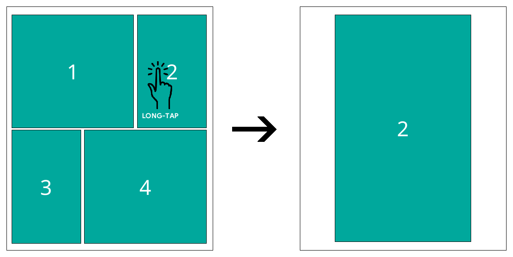 EPUB, FB2, உஉகுமொ அல்லது படக் கோப்புகள் போன்ற பிற கோப்பு வகைகளுடன் இந்த அம்சத்தைப் பயன்படுத்த விரும்பினால், நீங்கள் கோப்பை வேறு இயந்திரத்துடன் திறக்க வேண்டும்: கோப்பு உலாவி கோப்பு பெயரில் நீண்ட-தட்டுதல், உடன் திறக்கவும்… "Ui"> இடைமுகம் "> mupf. ஒரு புத்தகத்தின் கடைசி பக்கத்தை நீங்கள் அடையும்போது, கொரியடர் உங்களுக்கு ஒரு உரையாடலைக் காட்டுகிறார். இந்த உரையாடலில் ஒரு அடுத்த கோப்பைத் திறக்கவும் செயல், இது அடுத்த கோப்பை தற்போதைய புத்தகத்தின் அதே கோப்பகத்தில் திறக்கும். எனவே உங்கள் தொடரை தனி கோப்பகங்களில் வைத்து, கோப்பு உலாவி க்குச் செல்லாமல் அவற்றை ஒன்றன்பின் ஒன்றாகப் படிக்கலாம். 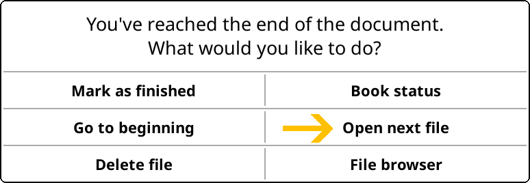
இந்த அடுத்த கோப்பைத் திறக்கும்போது, நீங்கள் குறித்த கோப்புகளை முடிக்கப்பட்ட எனக் குறைகிறது. உங்களிடம் மங்கா கோப்புகளின் கோப்புறை இருக்கும்போது இந்த நற்பொருத்தம் பயனுள்ளதாக இருக்கும், அவற்றில் சிலவற்றை நீங்கள் ஏற்கனவே படித்திருக்கிறீர்கள். மேலே காட்டப்பட்டுள்ள புத்தக உரையாடலின் முடிவில் இருந்து முடிந்ததும் ஒரு கோப்பைக் குறிக்கலாம். கோப்பில் நீண்ட நேரம் அழுத்துவதன் மூலம் கோப்பு உலாவி இலிருந்து அதைக் குறிக்கலாம். அவற்றை உங்கள் சாதனத்தில் நகலெடுத்த பிறகு, உங்களால் முடியும்:
இப்போது நீங்கள் எல்லா கோப்புகளையும் ஐ புத்தகத்தின் முடிவில் அடுத்த கோப்பு ஐத் தட்டுவதன் மூலம் படிக்கலாம். நீங்கள் ஏற்கனவே படித்தவர்களை கொரியடர் தவிர்ப்பார்.
உங்கள் ஈ-மை சாதனத்தில் மங்கா புத்தகங்களைப் படிக்க விரும்பினால், உங்கள் அனுபவத்தை சிறப்பாகச் செய்யக்கூடிய சில உதவிக்குறிப்புகள் உள்ளன. உங்கள் சாதனத்தில் காமிக்ச் எவ்வாறு தோற்றமளிக்கிறது என்பதில் நீங்கள் நிறைவு அடையவில்லை என்றால் உங்கள் சொந்த மங்கா கோப்புகளைத் தயாரிப்பது சிறந்த தீர்வாகும்.
MOBI மற்றும் EPUB போன்ற கோப்பு வகைகள் முதன்மையாக பட உள்ளடக்கத்தைக் கையாள ஏற்றவை அல்ல (எ.கா., மங்கா/காமிக்ச்). மொபி கொரியாடரில் உதவி இல்லாதது மிகக் குறைவு, மற்றும் எபப் உரை வழங்குதல் முன்னுரிமைகள் முழு பக்க படங்களைக் காட்டும்போது சிக்கல்களை ஏற்படுத்தும். மேலும் தொழில்நுட்ப விவரங்களுக்கு, தயவுசெய்து இதை அறிவிலிமையம் வெளியீடு ஐப் பார்வையிடவும். உங்கள் சிறந்த விருப்பம் கொரியாடரில் சிறப்பாக செயல்படும் ஒரு சிபிஇசட் கோப்பை உருவாக்குவது. .cbz நீட்டிப்பு கொண்ட ஒரு கோப்பு ஒரு சிப் கோப்பு (சுருக்கம் இல்லாமல்) இது படங்களின் தொகுப்பாகும். இது பல படங்களை சேமிக்கிறது, பொதுவாக .png அல்லது .jpeg கோப்புகள், காமிக் பக்கங்களில் ஒழுங்கமைக்கப்பட்டுள்ளன. சிபிஎச் கோப்புகளுக்கு ஒத்ததாக இருக்கும் சிபிடி கோப்புகளையும் கொரியடர் திறக்கலாம், ஆனால் தார் காப்பக வடிவமைப்பைப் பயன்படுத்தவும். Easiest way to convert a manga to CBZ is to get the manga as images from various websites, then convert them using Kindle Comic Converter. There are some useful settings like auto-rotating two-page splits to landscape and applying dithering so that e-ink rendered gradients are smoothly dithered without jagged layers. உங்கள் படங்களை உங்கள் ஈ-ரீடர் திரை அளவிற்கு மறுஅளவிடுவதன் மூலம் சிறந்த முடிவுகளை அடைய முடியும். ஒரு திரை-குறிப்பிட்ட சிபிஇசட் இது சாதனத்தின் சரியான திரை அளவை குறிவைக்கிறது, வாசிப்பின் போது மீட்டெடுப்பதைத் தடுக்கிறது. கொரியடர் உங்கள் படங்களை படிக்கும் போது உங்கள் திரை அளவிற்குக் குறைக்கிறார், ஆனால் இது பரிந்துரைக்கப்படவில்லை, ஏனெனில் கொரியடர் அளவிடுவதற்கு முன்பு ஒரு டிடரிங் மொழி சேர்க்கிறது, மேலும் இது தரத்தை இழப்பதை ஏற்படுத்துகிறது. ஒன்றுக்கு மேற்பட்ட சாதனங்களில் உங்கள் கையை உருவாக்கிய சிபிஇசட் ஐ நீங்கள் பயன்படுத்த விரும்பினால் அல்லது எதிர்கால சரிபார்ப்புக்காக உயர் தெளிவுத்திறனைப் பாதுகாக்க விரும்பினால், உங்கள் மிக உயர்ந்த தெளிவுத்திறன் சாதனத்திற்கு சிபிஇசட் ஐ உருவாக்குவதே உங்கள் சிறந்த விருப்பமாக இருக்கலாம். அல்லது ஒரு தன்னிச்சையான "உயர்" தீர்மானத்தைத் தேர்ந்தெடுங்கள், இது மூலத்துடன் பொருந்தக்கூடிய ஒன்றாகும். 300 பிபிஐ அல்லது சிறந்தது ( 450 அல்லது 600 வரை கூட), மூலமானது நிச்சயமாக குறைவாக இல்லாவிட்டால். 8 ", 1500 × 2000 ஒரு நல்ல இலக்கு தீர்மானம் என்று நாங்கள் கருதினால், பெரிய படங்களுக்கு, நீங்கள் அதை உங்கள் சாதனத்தில் முயற்சி செய்து அதைச் சமாளிக்க முடியுமா என்று பார்க்க வேண்டும். குறிப்பாக குறைந்த நினைவகம் கொண்ட பழைய கின்டல்கள் 3000 × 4000 போன்றவற்றின் மதிப்பைக் கருத்தில் கொள்ளினால், நீங்கள் தரமானவை, ஈ.கே. 200/400 அல்லது 300/600 டிபிஐ). ஒரு மங்கா கோப்பை செயலாக்க பின்வருபவை ஒரு எடுத்துக்காட்டு செயல்முறை: கே.சி.சி இன் சில பயனுள்ள அமைப்புகள்: பரவல் ச்ப்ளிட்டர்: இந்த நற்பொருத்தம் இரட்டை பக்கங்களைக் கண்டறிந்து அவற்றை இரண்டாக சுழற்ற அல்லது வெட்ட உங்களை அனுமதிக்கிறது. மேம்படுத்துதல்: உங்கள் இலக்கு தீர்மானத்தை விட சிறிய படங்களை பெரிதாக்குங்கள். Due to the color e-ink screen technology, it is possible to see rainbow like color artifacts when reading black-and-white comics/manga with fine shading or dots. If you are having this problem, there is a KOReader plugin named Derainbowify that solves it. You can see the detailed info and install instructions on the GitHub page of this plugin.
உங்கள் மங்காவை மிகவும் அதிவேகமாக அனுபவிக்க விரும்பினால், உங்கள் சிபிஇசட் கோப்பை உருவாக்கும் போது உங்கள் சாதனத்தின் திரை தெளிவுத்திறனின் அதே தெளிவுத்திறனை கே.சி.சி இல் தேர்ந்தெடுத்துள்ளீர்கள் என்பதை உறுதிப்படுத்திக் கொள்ளுங்கள். கொரியாடரில் உங்கள் மங்காவைப் படிக்கும்போது கீழே முன்னேற்றப் பட்டியை மறைக்க முடியும். எனவே உங்கள் மங்காவைப் பற்றிய முழு திரை காட்சியை நீங்கள் தடைகள் இல்லாமல் வைத்திருப்பீர்கள்.
சிபிஇசட் கோப்பை உருவாக்க கே.சி.சி ஐப் பயன்படுத்திய பிறகு, நீங்கள் படங்களுக்கு கூடுதல் டிட்டரிங் ஐப் பயன்படுத்தலாம். இந்த வழியில், ஈன்க்-வழங்கப்பட்ட சாய்வு துண்டிக்கப்பட்ட அடுக்குகள் இல்லாமல் சீராக மூழ்கிவிடும். இந்த படி கொரியாடரில் சிறப்பாக இருக்கும் மங்கா தொகுதிகளை உருவாக்கும்.
உங்கள் படங்களை செயலாக்க இமேசேமகிக் ஐப் பயன்படுத்தலாம். இமேசேமகிக் , ராச்டர் படங்களைக் காண்பித்தல், உருவாக்குதல், மாற்றுவது, மாற்றியமைத்தல் மற்றும் திருத்துவதற்கான சக்திவாய்ந்த திறந்த மூல மென்பொருள் தொகுப்பாகும். நீங்கள் இமேசேமகிக் ஐ பதிவிறக்கம் செய்து பல படங்களை ஒரே நேரத்தில் செயலாக்க கட்டளை வரியிலிருந்து பயன்படுத்தலாம். நீங்கள் கொரியடர் திருப்பங்களை இடமிருந்து வலமாக மாற்றலாம் , இதனால் ச்வைப் மற்றும் குழாய் மண்டலங்கள் மாற்றப்படுகின்றன. இதை இயக்க, பின்வரும் வரிகளைச் சேர்க்கவும்:
["/storage/emulated/0/Books/manga"] = { இந்த கோப்பில்: /சேமிப்பு/பின்பற்றுதல்/0/புத்தகங்கள்/மங்கா என்பது உங்கள் மங்காச் கொண்ட கோப்பகத்திற்கான முழுமையான பாதை. இந்த மாற்றத்திற்குப் பிறகு, குறிப்பிடப்பட்ட கோப்பகத்திலிருந்து ஒரு கோப்பைத் திறக்கும்போது, உங்கள் ச்வைப் மற்றும் தட்டு மண்டலங்கள் மாற்றப்படும். நீங்கள் முதல் முறையாக கொரியாடரை இயக்கும்போது கோப்பு உலாவி இடைமுகத்தைக் காண்பீர்கள். இது கொரியாடரின் இரண்டு முக்கிய இடைமுகங்களில் ஒன்றாகும். உங்கள் கோப்பு மற்றும் கோப்புறை செயல்பாடுகள் அனைத்தையும் இங்கே செய்வீர்கள். நீங்கள் வாசிப்புத் திரையில் இருந்து அணுகலாம்: 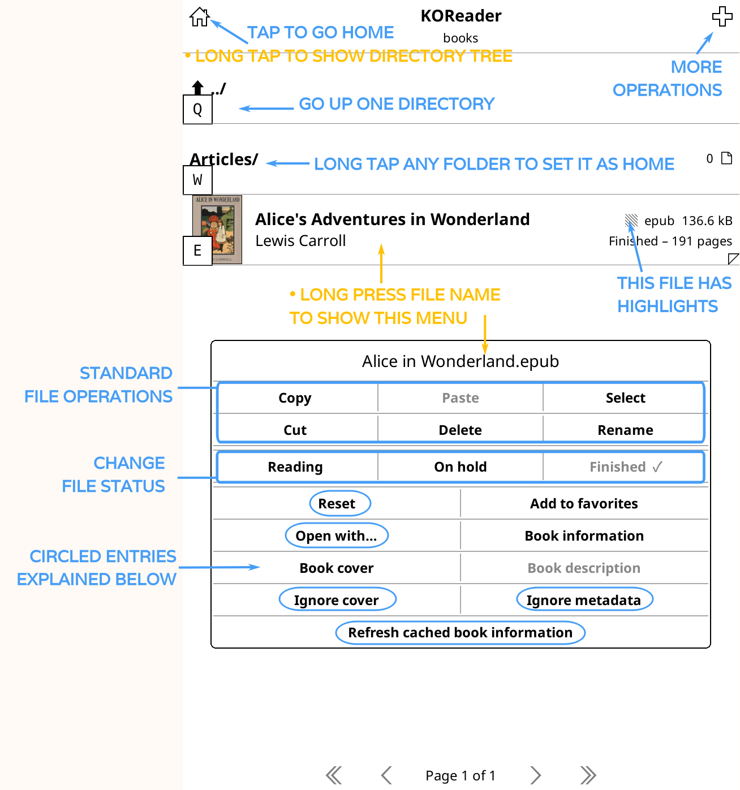 இயல்பாக, கோப்பு உலாவி உங்கள் முகப்பு கோப்புறையைக் காட்டுகிறது, இது உங்கள் முக்கிய நூலகக் கோப்புறை. இதை நீங்கள் எந்த கோப்புறையிலும் நீண்ட நேரம் அழுத்துவதன் மூலம் மாற்றலாம் . நீங்கள் கோப்பு உலாவி இன் திரையின் மேல் பகுதியிலிருந்து ச்வைப் செய்வதன் மூலம் சிறந்த பட்டியல் வழியாக புத்தகங்கள் எவ்வாறு காட்டப்படுகின்றன அல்லது வரிசைப்படுத்தப்படுகின்றன போன்ற பல விருப்பங்களை மாற்றலாம். உடன் திறந்திருக்கும்: கொரியடர் வெவ்வேறு கோப்பு வகைகளை வழங்குவதற்கு வெவ்வேறு இயந்திரங்களைக் கொண்டுள்ளது. சில சந்தர்ப்பங்களில், வேறு சில அம்சங்களைப் பெற நீங்கள் வேறு இயந்திரத்தில் ஒரு கோப்பைத் திறக்கலாம். காப்பகக் கோப்புகளைப் பார்ப்பது மற்றும் படக் கோப்புகளைப் பார்ப்பது இப்போது கீழே உள்ள பிரிவுகளைப் பார்க்கவும். கவர்: சில காரணங்களால் இந்த புத்தகத்திற்கான அட்டையை முடக்க விரும்பினால் (அதற்கு தவறான கவர் இருக்கலாம் அல்லது கவர் ஈ-மை திரையில் மிகவும் படிக்க முடியாது) நீங்கள் தேர்ந்தெடுக்கலாம் இது. தற்காலிக சேமிப்பு புத்தகத் தகவலைப் புதுப்பிக்கவும்: கொரியேடர் ஒரு புத்தகத்தின் மேனிலை தரவு மற்றும் புத்தக அட்டையை உங்கள் நூலகத்தில் சேர்க்கும்போது அதைத் தேடுங்கள். உங்கள் சாதனத்தில் நகலெடுத்த பிறகு நீங்கள் புத்தகத்தில் சில மாற்றங்களைச் செய்தால், இந்த தகவலை புதுப்பிக்க வேண்டியிருக்கும். நீங்கள் தவறான கவர் அல்லது மெட்டாடேட்டாவைக் கண்டால், இந்த பட்டியல் உருப்படியுடன் புத்தகத் தகவலை புதுப்பிக்கலாம். கவர்: சில காரணங்களால் இந்த புத்தகத்திற்கான அட்டையை முடக்க விரும்பினால் (இது தவறான கவர் அல்லது கவர் ஈ-மை திரையில் மிகவும் படிக்க முடியாது) இதை நீங்கள் தேர்ந்தெடுக்கலாம். மெட்டாடேட்டாவை புறக்கணிக்கவும்: உங்கள் புத்தக மேனிலை தரவு சரியாக இல்லாவிட்டால், பெயர் புலம் பயனற்ற தகவல்களைக் காட்டக்கூடும். மெட்டாடேட்டாவுக்கு பதிலாக கோப்பு பெயரைக் காட்ட இந்த விருப்பத்தைத் தேர்ந்தெடுக்கவும். தற்காலிக சேமிப்பு புத்தகத் தகவலைப் புதுப்பிக்கவும்: கொரியேடர் ஒரு புத்தகத்தின் மேனிலை தரவு மற்றும் புத்தக அட்டையை உங்கள் நூலகத்தில் சேர்க்கும்போது அதைத் தேடுங்கள். உங்கள் சாதனத்தில் நகலெடுத்த பிறகு நீங்கள் புத்தகத்தில் சில மாற்றங்களைச் செய்தால், இந்த தகவலை புதுப்பிக்க வேண்டியிருக்கும். நீங்கள் தவறான கவர் அல்லது மெட்டாடேட்டாவைக் கண்டால், இந்த பட்டியல் உருப்படியுடன் புத்தகத் தகவலை புதுப்பிக்கலாம். Normally, KOReader file browser doesn't show these two groups of files and directories: கோப்பு உலாவி ஒரே நேரத்தில் பல கோப்புகளில் சில செயல்பாடுகளை (நகலெடுப்பது, நகர்த்துவது, நீக்குதல், சிறப்பம்சங்களை ஏற்றுமதி செய்தல் போன்றவை) செய்ய உங்களை அனுமதிக்கிறது. இந்த நடைமுறைக்கு, முதலில் நீங்கள் கோப்புகளைத் தேர்ந்தெடுக்க வேண்டும். கோப்பு உலாவி இல் மொத்த செயல்பாடுகளுக்கான கோப்புகளைத் தேர்ந்தெடுப்பதற்கான மூன்று வெவ்வேறு வழிகள் தற்போது உள்ளன: - முதல் முறையில் , ஒரு கோப்பு பெயரில் நீண்ட நேரம் அழுத்தி, மேல்தோன்றல் உரையாடலில் இருந்து தேர்ந்தெடுக்கவும் ஐத் தேர்வுசெய்க. இது தேர்வு பயன்முறை ஐ செயல்படுத்தும். தேர்வில் சேர்க்க இப்போது மற்ற கோப்புகளைத் தட்டலாம். உங்கள் கோப்புகளைத் தேர்ந்தெடுப்பதை முடிக்கும்போது, உங்கள் திரையின் மேல் வலது மூலையில் இல் செக்மார்க் படவுரு இல் தட்டவும். உரையாடலில் இருந்து இந்த கோப்புகளை என்ன செய்ய வேண்டும் என்பதை நீங்கள் தேர்வு செய்யலாம். அல்லது அதே உரையாடலில் இருந்து தேர்வு பயன்முறையிலிருந்து வெளியேறவும். - இரண்டாவது முறை இல், மேல் வலது மூலையில் இல் + (பிளச்) படவுரு ஐ அழுத்தவும், கோப்புகளைத் தேர்ந்தெடுக்கவும் ஐத் தேர்வுசெய்க. இது தேர்வு முறை ஐ செயல்படுத்தும் மற்றும் ஓய்வு என்பது மேலே உள்ள முதல் முறைக்கு சமம். - In the third method, you can choose your files based on a File search . This is useful if you need to perform an operation on many files distributed in different folders. For example you want to move all files in your collection authored by Tolkien, to a new folder. Steps for this action will be: உங்களுக்கு பிடித்த கோப்புறைகளை விரைவாக அணுகக்கூடிய கோப்புறை குறுக்குவழி பட்டியலில் சேர்க்க கொரியடர் உங்களை அனுமதிக்கிறது. எடுத்துக்காட்டாக, உங்கள் நூலகத்தில் முகப்பு> கட்டுரைகள்> விஞ்ஞான> காப்பகப்படுத்தப்பட்ட இன் கீழ் உள்ள ஒரு காப்பகம் கோப்புறை இருந்தால், இந்த காப்பக கோப்புறையில் ஒரு கோப்புறை குறுக்குவழியை ஒதுக்கலாம் மற்றும் ஒரு புத்தகத்தைப் படிக்கும் போது கூட அதை விரைவாக அணுகலாம். கோப்புறை குறுக்குவழியைச் சேர்ப்பது: உங்கள் கோப்புறை குறுக்குவழிகள் பட்டியல்: ஒரு கோப்புறையை சேர்க்க இரண்டு வழிகள் உள்ளன: உங்கள் கோப்புறை குறுக்குவழிகள் பட்டியலில் உள்ள கோப்புறைகள் விண்மீன் (★) கோப்பு உலாவி இல் இருக்கும். <ச்பான் கிளாச் = "யுஐ"> கோப்புறை குறுக்குவழிகள் ஐ <ச்பான் கிளாச் = "யுஐ"> கோப்பு உலாவி அல்லது <ச்பான் கிளாச் = "யுஐ"> வாசிப்பு திரை ஆகியவற்றிலிருந்து நீங்கள் திறக்கலாம் ஒரு புத்தகத்தைப் படித்தல். உங்கள் கோப்புறை குறுக்குவழிகளைப் பார்க்கிறது: கோப்பு உலாவி அல்லது ஒரு புத்தகத்தைப் படிக்கும் போது உங்கள் கோப்பு உலாவி அல்லது இலிருந்து உங்கள் கோப்புறை குறுக்குவழிகள் ஐ நீங்கள் திறக்கலாம்.
இது கோப்பு உலாவி சைகை மேலாளர் இன் கீழ் உள்ளது. இந்த வழிகாட்டியின் தொடர்புடைய பிரிவில் சைகைகளை எவ்வாறு அமைப்பது என்பதை நீங்கள் கற்றுக் கொள்ளலாம்.
உங்களிடம் .txt வடிவத்தில் புத்தகங்கள் இருந்தால் (இது சீன மற்றும் சைரிலிக் மொழிகளில் மிகவும் பொதுவானது), நீங்கள் தானாக-கண்டறிதல் TXT கோப்புகள் தளவமைப்பு அம்சத்தை இயக்க முயற்சி செய்யலாம். சில சந்தர்ப்பங்களில் இது வழங்குதல் மேம்படுத்தலாம் மற்றும் உரையை "புத்தகத்தைப் போன்ற" ஆக மாற்றலாம். இயக்கப்பட்டால், வழங்குதல் எஞ்சின் இயூரிச்டிக்சைப் பயன்படுத்தும் (சில அதிகபட்ச வரி நீளத்தின் கீழ் மூடப்பட்டிருக்கும், பத்திகள், உள்தள்ளல் அல்லது மையப்படுத்தப்பட்ட உரையைக் குறிக்கும் ஒற்றை அல்லது இரட்டை வெற்று கோடுகள் ... தலைகீழாக கருதப்படும் உரை ...) உரையை எவ்வாறு சிறப்பாக வழங்குவது என்று யூகிக்க வேண்டும், மேலும் பொருளடக்கம் ஐ உருவாக்க முயற்சிக்கும். இந்த அம்சத்தை இங்கே இயக்கலாம் (நீங்கள் ஒரு .txt கோப்பைப் படிக்கிறீர்கள் என்றால் மட்டுமே இது தெரியும்): இந்த நற்பொருத்தம் அச்கி கலை வரைபடங்கள் மற்றும் விண்வெளி எழுத்து அடிப்படையிலான வடிவமைப்பைக் குழப்பக்கூடும் என்பதை நினைவில் கொள்க. உங்கள் புத்தகத்தில் இந்த வகையான நற்பொருத்தங்கள் இருந்தால், இயல்புநிலை பயன்முறையைப் பயன்படுத்துவது நல்லது, உரை கோப்பு ஐ ஒரு மோனோச்பேச் எழுத்துருவில் வழங்கப்படுகிறது. சிப் கோப்புகளில் சேமிக்கப்பட்ட/சுருக்கப்பட்ட கோப்புகளை கொரியடர் படிக்க முடியும். நீங்கள் சிப் , சிபிஇசட் மற்றும் எபப் (அவை சிப் காப்பகங்கள் என்பதால்) காப்பக பார்வையாளருடன் கோப்புகளைத் திறக்கலாம். ஒரு சிப் கோப்பில் HTML, TXT அல்லது படங்கள் போன்ற பல வகையான ஆவணங்கள் இருக்கலாம். சிப் காப்பகத்தில் உள்ள கோப்பின் வகைக்கு ஒரு குறிப்பைக் கொடுத்தால் மட்டுமே கொரியடர் உங்கள் சிப் கோப்பை சரியாக திறக்க முடியும் . உங்கள் கோப்பை ஒரு .zip நீட்டிப்பு மட்டுமே கொடுத்தால், இந்த காப்பகத்தில் படங்கள் உள்ளன என்று கொரியடர் கருதி அதை சிபிஇசட் கோப்பு போல திறக்க முயற்சிக்கும். ஆவணங்கள் இதுபோன்று பெயரிடப்படவில்லை என்றால், தவறான வாசகர்/வடிவமைப்பு இயந்திரம் பயன்படுத்தப்பட வாய்ப்புள்ளது, மேலும் இந்த கோப்பு அல்லது தவறான கோப்பு செய்திக்கான <ச்பான் class="ui"> ரீடர் எஞ்சின் இல்லை. மேலே விளக்கப்பட்டுள்ளபடி இந்த கோப்பை மறுபெயரிடலாம் அல்லது கோப்பு பெயரை நீண்ட நேரம் அழுத்தவும், பின்னர் சரியான இயந்திரத்தைத் தேர்ந்தெடுக்க <ச்பான் கிளாச் = "யுஐ"> திறக்க ... ஐத் தேர்வுசெய்யலாம். உங்கள் சிப் கோப்பில் இந்த வகைகளில் ஒன்று இருந்தால் (வெறும் படங்களுக்கு பதிலாக), தயவுசெய்து அதற்கு பெயரிடுங்கள்: ஆவணங்கள் இதுபோன்று பெயரிடப்படவில்லை என்றால், தவறான வாசகர்/வடிவமைப்பு இயந்திரம் பயன்படுத்தப்பட வாய்ப்புள்ளது, மேலும் இந்த கோப்பு அல்லது தவறான கோப்பு செய்திக்கான ரீடர் எஞ்சின் இல்லை. மேலே விளக்கப்பட்டுள்ளபடி இந்த கோப்பை மறுபெயரிடலாம் அல்லது கோப்பு பெயரை நீண்ட நேரம் அழுத்தவும், பின்னர் சரியான இயந்திரத்தைத் தேர்ந்தெடுக்க திறக்க ... ஐத் தேர்வுசெய்யலாம். ஒரு புத்தகமாக திறப்பதற்குப் பதிலாக பட பார்வையாளருடன் படக் கோப்புகளைத் திறக்கலாம். இதுபோன்று திறக்கப்பட்ட கோப்புகள் உங்கள் வரலாற்றில் காண்பிக்கப்படாது மற்றும் சிறந்த அளவிடுதல் மற்றும் சுழற்சி ஆதரவைக் கொண்டுள்ளன. மார்க் பேரூர் ஆவணங்களைப் படிக்க கொரியடர் இரண்டு விருப்பங்களை வழங்குகிறது. ஒரு .md கோப்பை மாற்ற, கோப்பு உலாவி இல் நீண்ட நேரம் அழுத்தவும், மேல்தோன்றல் மெனுவிலிருந்து மாற்ற ஐத் தட்டவும். அதே பெயருடன் ஒரு புதிய கோப்பு ஆனால் உஉகுமொ நீட்டிப்பு அதே கோப்பகத்தில் உருவாக்கப்படும். உங்கள் மார்க் பேரூர் கோப்பு மற்றும் சாதன வேகத்தைப் பொறுத்து மாற்றம் சிறிது நேரம் ஆகக்கூடும் என்பதை அறிந்து கொள்ளுங்கள். கொரியடர் தானாகவே அங்கீகரிக்காத கோப்பு வகைகளுக்கான கோப்பு சங்கங்களையும் நீங்கள் அமைக்கலாம். கொரியடர் வழங்குநர்களில் ஒருவருடன் ஒரு கோப்பை இணைக்க, முதலில் உங்கள் கோப்பில் கோப்பு உலாவி இல் தட்டவும், பின்னர் இந்த கோப்பைக் கையாள ஒரு வழங்குநர் இயந்திரத்தைத் தேர்வுசெய்க. நீங்கள் சரிபார்க்கலாம்: 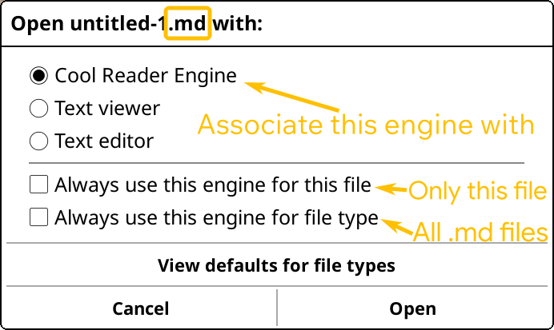 கொரியடரின் சேகரிப்புகள் நற்பொருத்தம் உங்கள் நூலகத்தை மிகவும் திறமையாக ஏற்பாடு செய்ய உதவும். மிகவும் எளிமையான வரையறையாக, சேகரிப்புகள் உங்கள் புத்தகங்களின் பயனர் உருவாக்கிய பட்டியல்கள். எடுத்துக்காட்டாக, உங்கள் புத்தகங்களை அதற்கேற்ப ஏற்பாடு செய்ய புனைகதை மற்றும் புனைகதை அல்லாத என்ற இரண்டு தொகுப்புகளை நீங்கள் உருவாக்கலாம். இதைச் செய்ய நீங்கள் கோப்புறைகளையும் பயன்படுத்தலாம், ஆனால் சேகரிப்புகளைப் பயன்படுத்துவது உங்களுக்கு அதிக நெகிழ்வுத்தன்மையை அளிக்கிறது. கோப்புறை அடிப்படையிலான அமைப்புடன் ஒப்பிடும்போது சேகரிப்புகளின் சில நன்மைகள்: எந்தவொரு வகைப்படுத்தலையும் பிரதிபலிக்க நீங்கள் சேகரிப்புகளை உருவாக்கலாம். சில எடுத்துக்காட்டு யோசனைகள்: இங்கே அமைந்துள்ள சேகரிப்புகள் உரையாடலிலிருந்து சேகரிப்புகளை உருவாக்கலாம்: இந்த உரையாடலை வாசகர் பார்வையிலிருந்து அல்லது கோப்பு உலாவி இலிருந்து அணுகலாம். இந்த மெனுவைத் திறக்கும்போது, அது உங்கள் தொகுப்புகளின் பட்டியலைக் காண்பிக்கும். இயல்பாக நீங்கள் பிடித்தவை ஒரு சேகரிப்பு உருப்படியாக இருப்பீர்கள், அதில் நீங்கள் ஏற்கனவே உங்கள் பிடித்தவை பட்டியலில் சேர்த்த புத்தகங்களை உள்ளடக்கியது. கொரியாடரில் மூன்று வெவ்வேறு இடங்கள் உள்ளன, அங்கு உங்கள் சேகரிப்பில் புத்தகங்களைச் சேர்க்கலாம்: 1. கோப்பு உலாவி மற்றும் வரலாற்றுத் திரையில் இருந்து கோப்பு உலாவி அல்லது வரலாறு திரையில் இருந்து உங்கள் சேகரிப்பில் ஒரு புத்தகத்தை சேர்க்கலாம். வரலாறு திரையில் இருந்து நீங்கள் புத்தகங்களை சேர்க்கலாம் ஒரு நேரத்தில் ஒன்று . புத்தகத்தில் நீண்ட நேரம் அழுத்தி சேகரிப்புகளைத் தேர்வுசெய்க ... . இந்த புத்தகத்தை நீங்கள் சேர்க்க விரும்பும் எந்த சேகரிப்பை (களை) தேர்வு செய்யலாம். நீங்கள் பல புத்தகங்களைச் சேர்த்தால், இதை கோப்பு உலாவி இலிருந்து செய்யலாம். பல புத்தகங்களுக்கு இது செயல்முறை: ஒரு புத்தகத்தைச் சேர்ப்பதற்கு, கோப்பு உலாவி இல் நீண்ட நேரம் அழுத்தவும், மேல்தோன்றல் மெனுவிலிருந்து சேகரிப்புகள் ஐத் தேர்வுசெய்க. 2. சேகரிப்பு மெனுவிலிருந்து உங்கள் சேகரிப்புகள் இல் ஒற்றை மற்றும் பல புத்தகங்களைச் சேர்க்க இந்த முறை உங்களை அனுமதிக்கிறது. கோப்பு உலாவி முறையிலிருந்து மிகப்பெரிய வேறுபாடு என்னவென்றால், நீங்கள் முழு கோப்புறைகளையும் அவற்றின் துணை கோப்புறைகளையும் ஐ உங்கள் சேகரிப்புகளில் ஒரே நேரத்தில் சேர்க்கலாம். உங்கள் புத்தகங்கள் ஏற்கனவே கோப்புறைகளில் ஏற்பாடு செய்யப்பட்டிருந்தால் இது மிகவும் பயனுள்ளதாக இருக்கும். எடுத்துக்காட்டாக, உங்கள் அறிவியல் புனைகதை புத்தகங்கள் ஒரே கோப்புறையில் இருந்தால், நீங்கள் அறிவியல் புனைகதை என்ற தொகுப்பை உருவாக்கி இந்த கோப்புறையை ஒரே நேரத்தில் சேர்க்கலாம். 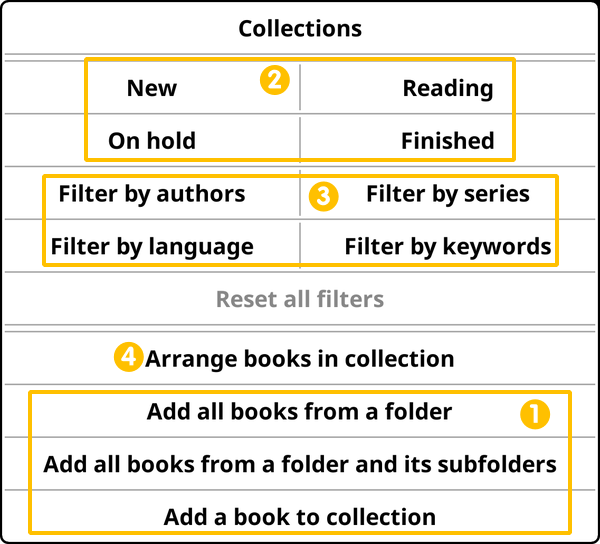 மேலே உள்ள படத்தில், பெட்டி 1 புத்தகத்தை சேர்க்கும் விருப்பங்களைக் காட்டுகிறது. சேகரிப்புகள் திரையின் ஆம்பர்கர் மெனுவிலிருந்து இந்த மெனுவை நீங்கள் அடையலாம்: கோப்பு உலாவி , வரலாறு திரை அல்லது சேகரிப்புகள் திரையில் இருந்து சேகரிப்புகளிலிருந்து ஒரு புத்தகத்தை அகற்றலாம். கோப்பு உலாவி மற்றும் வரலாறு திரைகளில், புத்தகத்தில் நீண்ட நேரம் அழுத்தி தொகுப்புகளைத் தேர்வுசெய்க ... . இந்த புத்தகத்தை நீங்கள் சேர்த்த தொகுப்புகளுக்கு அடுத்ததாக ஒரு செக்மார்க் பார்ப்பீர்கள். அந்தத் தொகுப்பிலிருந்து புத்தகத்தை அகற்ற அதைத் தட்டுவதன் மூலம் அவற்றைத் தேர்வுநீக்கவும். சேகரிப்புகள் திரையில் இருந்து, நீங்கள் ஒரு புத்தகத்தில் நீண்ட நேரம் அழுத்தி சேகரிப்பு இலிருந்து அகற்று என்பதைத் தேர்வு செய்யலாம். வசூல் மிகவும் நெரிசலானது, ஆனால் பல வடிகட்டுதல் விருப்பங்களை வழங்குவதன் மூலம் உங்கள் புத்தகங்களை எளிதாகக் கண்டுபிடிக்க கொரியடர் உங்களை அனுமதிக்கிறது. மேலே உள்ள படத்தைப் பார்த்தால், வடிகட்டுதல் விருப்பங்களை பெட்டி 2 மற்றும் பெட்டி 3 இல் காணலாம். பெட்டி 2 புத்தக நிலை (புதியது, வாசிப்பு, முடிந்தது, நிறுத்தி வைத்தது) மற்றும் பெட்டி 3 புத்தக மேனிலை தரவு (ஆசிரியர், தொடர், மொழி, முக்கிய வார்த்தைகள்) மூலம் வடிகட்ட உங்களை அனுமதிக்கிறது. இந்த எடுத்துக்காட்டு போன்ற இந்த இரண்டு குழுக்களின் வடிப்பான்களையும் நீங்கள் இணைக்கலாம்: "ஐசக் அசிமோவ் (ஆசிரியர்களால் வடிகட்டி -> ஐசக் அசிமோவ்) ஆல் எழுதப்பட்ட இந்த தொகுப்பில் புதிய புத்தகங்களை எனக்குக் காட்டு (நிலை -புதிய) " கோப்பு உலாவி இல் புத்தகத்தில் நீண்ட நேரம் அழுத்துவதன் மூலம் புத்தக மெட்டாடேட்டாவைப் புதுப்பிக்கலாம் மற்றும் மெனுவிலிருந்து புத்தகத் செய்தி ஐத் தேர்ந்தெடுக்கலாம். மேல்தோன்றல் சாளரத்தில் ஆசிரியர் அல்லது முக்கிய வார்த்தைகள் போன்ற மெட்டாடேட்டாவை மாற்ற எந்தவொரு துறையிலும் நீண்ட நேரம் அழுத்தலாம். இந்த பணிக்காக காலிபர் ஐ நீங்கள் பயன்படுத்தலாம், இது உங்கள் புத்தக மெட்டாடேட்டாவை நிர்வகிப்பது மிகவும் எளிதாக்குகிறது. சேகரிப்பில் நீங்கள் செய்யக்கூடிய இரண்டு வகையான தேடல்கள் உள்ளன: நீங்கள் ஒரு சொற்றொடரைத் தேடலாம் புத்தக தலைப்புகள் மற்றும் மேனிலை தரவு அல்லது புத்தக உரைகள் க்குள் ஐ தேடலாம். நீங்கள் தேடல் உரையாடலைத் திறக்கலாம்: புத்தக உரைகள் இல் நீங்கள் ஒரு தேடலைச் செய்ய விரும்பினால், தயவுசெய்து இந்த புள்ளிகளை மனதில் கொள்ளுங்கள்: தேடல் செயல்பாடு சேகரிப்புகள் சாளரத்தில் நீங்கள் இருக்கும் இடத்தைப் பொறுத்தது. உங்கள் எல்லா சேகரிப்புகளையும் நீங்கள் காணக்கூடிய மூல மட்டத்தில் இருந்தால், எல்லா சேகரிப்புகளிலும் தேடல் செய்யப்படும். நீங்கள் ஒரு குறிப்பிட்ட தொகுப்பில் மட்டுமே தேட விரும்பினால், நீங்கள் சேகரிப்பைத் தட்டவும் உள்ளிடவும் வேண்டும். நீங்கள் புத்தக நூல்களில் தேடுகிறீர்கள் என்றால் இது மிகவும் முக்கியமானது, ஏனெனில் இது மெதுவான செயல்பாடு. நீங்கள் ஒரு தேடலைச் செய்யும்போது, முடிவுகள் தானாகவே புதிய தொகுப்பாக சேமிக்கப்படும். உங்கள் சேகரிப்புகளை உருவாக்கி அவற்றில் புத்தகங்களைச் சேர்த்த பிறகு, அவற்றை சில கோப்புறைகளுடன் ஒத்திசைக்க விரும்புவீர்கள். உதாரணமாக நீங்கள் ஒரு அறிவியல் புனைகதை சேகரிப்பை உருவாக்கியுள்ளீர்கள் என்று கற்பனை செய்து பாருங்கள். உங்கள் அறிவியல் புனைகதை புத்தகங்களை வைத்திருக்கும் உங்கள் நூலகத்தில் sf கோப்புறையும் உங்களிடம் உள்ளது. இந்த கோப்புறையில் நீங்கள் ஒரு புதிய கோப்பைச் சேர்க்கும்போது அறிவியல் புனைகதை சேகரிப்பு தன்னை புதுப்பிக்க விரும்பினால், நீங்கள் அதை இணைக்கப்பட்ட கோப்புறைகள் சேகரிப்புகளின் அம்சத்துடன் செய்யலாம். இந்த அம்சத்தின் மூலம் ஒன்று அல்லது அதற்கு மேற்பட்ட கோப்புறைகளை உங்கள் சேகரிப்புடன் இணைக்கலாம். அதன்பிறகு, இந்த நிபந்தனைகளில் உங்கள் சேகரிப்புகளிலிருந்து புத்தகங்களைச் சேர்க்க அல்லது அகற்ற கொரியடர் கோப்புறைகளை வருடு செய்வார்: உங்கள் சேகரிப்புடன் ஒரு கோப்புறையை எவ்வாறு இணைப்பது: 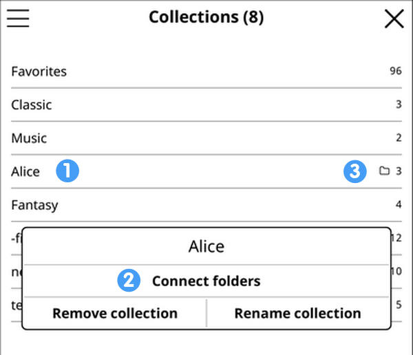 இணைக்கப்பட்ட கோப்புறைகளைக் கொண்ட சேகரிப்புகள் (3) மேலே உள்ள படத்திலிருந்து நீங்கள் காணக்கூடிய ஒத்திசைவுக்காக ஒரு கோப்புறையின் துணை கோப்புறைகளை நீங்கள் சேர்க்க விரும்பலாம். மேலே உள்ள படி 4 இல், நீங்கள் இணைக்கப்பட்ட கோப்புறைகளின் திரை பட்டியலைத் திறக்கும்போது, மேல்தோன்றல் மெனுவிலிருந்து துணை கோப்புறைகள் ஐ உள்ளடக்கிய/விலக்கு க்கு ஒரு கோப்புறையில் நீண்ட நேரம் அழுத்தலாம். உங்கள் சேகரிப்பிலிருந்து ஒரு கோப்புறையை எவ்வாறு துண்டிப்பது: உங்கள் சேகரிப்புகளை சுயவிவரங்கள் கொரியாடரின் அம்சத்துடன் பயன்படுத்தலாம். சுயவிவரங்கள் பற்றி உங்களுக்குத் தெரியாவிட்டால், எங்கள் சுயவிவரங்களிலிருந்து ஒரு விளக்கம் இங்கே உள்ளது பிரிவு:
ஒரு சுயவிவரம் என்பது அடிப்படையில் ஒரு சைகையுடன் (மேக்ரோ போன்றது) தூண்டக்கூடிய செயல்களின் தொகுப்பாகும்.
உதாரணமாக, சில வகை புத்தகங்களைப் படிக்கும்போது, நீங்கள் எப்போதும்: நீங்கள் எப்போதும்: சுயவிவர சொருகி மூலம், இவை அனைத்தையும் ஒரே நேரத்தில் ஒரே நேரத்தில் செய்யலாம். You can run a profile manually but real power of profiles can be unleashed with its auto-execute feature. Using this feature, you can trigger a profile depending on some conditions. Here is the link to the relevant section of the guide: Profile Auto-execution. For now we will just explain one trigger condition here: Collections. அடிப்படையில் நீங்கள் சில சுயவிவரங்களை உருவாக்கி, திறந்த நூல் சில குறிப்பிட்ட சேகரிப்பில் இருந்தால் அவற்றை தானாக செயல்படுத்தலாம். சில பயனுள்ள எடுத்துக்காட்டுகள்:
KOReader is designed to work efficiently even on the limited hardware of e-book readers. But there will always be poorly formatted documents which slow down KOReader. Here we will give some tips for optimizing your document depending on the file type.
Solutions: இங்கே இருந்து இலிருந்து காலிபர் ஐ பதிவிறக்கம் செய்யலாம். ஐ சரிபார்க்கும் புத்தகக் கருவி காலிபர் இங்கே . கட்டளை வரி பதிப்பு ஐ இங்கே இருந்து பதிவிறக்கம் செய்யலாம் . அல்லது வரைகலை பயனர் இடைமுக பதிப்பு ஐ இங்கே ஐப் பதிவிறக்கவும். PDF files can be slow because of these problems: Unfortunately, for bad PDF files there are not many solutions. Generally best solution with problematic PDFs is trying to find a better version of it. Or if another file type is available for download, like EPUB instead of PDF (or reverse) you can try that format. Also you can try to convert your documents into the more flexible EPUB format. Here are some apps that can help you when working with PDFs: We have a dedicated section for optimizing manga and comics: Optimizing Manga KOReader has a very efficient text processing engine. Also books are cached on first opening so KOReader can open them faster next time. But despite these optimizations, unusually large text files might still take longer to open. For example, online Chinese novels are known to reach tens of millions of words and generally saved as text files. Problem with large text files is the delay when first rendering the book and when modifying the text appearance later. If you try to change the font size of a very large .txt book, you might see a big delay after each adjustment because all of the book has to be rendered again. KOReader has a partial rendering system which shortens this type of delay considerably. But this feature can't be used with text files because these files are not divided into chapters (you can read more about partial rendering here). To benefit from partial rendering speed-up, you can convert your large text file to EPUB format using the Calibre application. Calibre will automatically divide your text file into smaller individual files during conversion and pack them into a standard EPUB file. After this conversion, you can change your book appearance much faster. You can download Calibre from this page and find online tutorials for the TXT-to-EPUB conversion procedure. SingleFile is a browser extension for Mozilla Firefox, Google Chrome and Microsoft Edge. This extension allows saving a web page as a single .html file with all the resources (images, stylesheets, scripts) embedded. Then you can copy this single file to your device and read with KOReader. An OPDS (Open Publication Distribution System) catalog is an online feed that acts like a digital library index. KOReader has OPDS support so you can browse these digital libraries, search for books on them and download the books directly to your device. KOReader comes pre-configured with some large OPDS catalogs like Project Gutenberg and Standard Ebooks and you can add other OPDS catalogs. To open the OPDS dialog, go to: Using personal OPDS servers In addition to the public catalogs, you can use OPDS system to manage your own library. Using the Calibre application, you can serve the books on your computer as an OPDS catalog, which you can browse directly from KOReader. Click here for Calibre instructions about configuring an OPDS server. Kavita is also an open-source and feature rich, cross platform reading server. You can setup your own server and share your reading collection with your friends and family. It also has OPDS and progress sync support for KOReader. Using this application, you can access your library from your reader device and synchronize reading positions between different devices to continue reading where you have left. Project's page is here. Documentation for OPDS and progress sync for KOReader users is here. After setting up your own OPDS servers, you need to add them to KOReader. Instructions are here. If you are using KOReader on several devices like e-reader, phone, tablet or desktop computer, KOReader can synchronize your reading progress between them. Using the progress sync feature, you can continue reading seamlessly when switching from your e-reader at home to your phone on the commute for example. This feature is handled by the progress sync plugin. Setting up synchronization involves these three steps which we will explain below: To create a sync account, connect to a network on your device and open the progress sync plugin in KOReader: and press the Register/Login button. In the opening window, enter a username and password then press the Register button. This will create an account on KOReader sync server which will hold your reading progress. Open the same menu on the devices that you want to sync. Enter your username and password and this time press the Login button. After this, your devices will be connected to your sync account. You can give recognizable names to your devices. Again from the same menu, press the Device hostname and enter a name for the current device. After everything is set up, you can synchronize your reading progress automatically or manually: In order to sync the progress of a document on two different devices, KOReader first has to identify these two files as "same". Sometimes this can be tricky, so we have two methods that you can choose from, depending on your usage of KOReader. You can change the method from the Document matching method option in the progress sync menu. Binary matching (default) By default, progress sync uses Binary matching method to identify the files. In this method, KOReader generates a partial MD5 hash of the file’s content (which looks like this: 0b229176d4e8db7f...). Any tiny change to the file, completely changes this hash so binary matching method works only if both files are perfectly identical. If you are copying the exact same file manually to all your devices, this method should work. But for example if you are using Calibre to send books to your devices, binary matching will fail. Because Calibre writes its own information like viewer progress directly into the file, which changes the file hash calculation, so KOReader will treat these files (original and Calibre modified) as two different books. If you have this problem you can use the alternative method explained below. Filename matching This is a "looser" matching method designed for users whose files might vary slightly between devices due to the changes made to the documents by other software like Calibre, as explained above. In this method, KOReader only checks if the filenames (including the extension) of the two documents are identical to match them. So if you are using Calibre or some other library management software to manage your library across different devices, you can change to Filename matching. You also have the option to host your own sync server if you wish. You can use the official KOReader sync server or one of the alternatives you can see on this page. There are also other projects like Calibre-Web which are library management solutions with an integrated KOReader sync server. First we will explain KOReader's file deletion behavior so you will better understand the Book Metadata Archive feature: Normally when you copy a document to your device and open it for the first time, KOReader creates a new directory with a name like your_document_name.sdr and uses this directory to keep the settings, annotations and progress for this document. When you delete a document using KOReader's File Browser, KOReader deletes this .sdr directory too. Which means that you lose all the settings, annotations and progress for the deleted document. If you copy this document to your e-reader again and open it with KOReader, it will be like opening it for the first time. But for example, what if you want to delete the finished books (maybe you don't like clutter in your library or you are out of space), but also you don't want to lose the highlights from these books? Book Metadata Archive feature allows you to do this. How this feature works: Your document is deleted, but its settings are in the archive. If you copy this document to your device again and open it, KOReader will notice that the settings for this document are in the archive and tell you this: "This book was previously opened on this device. Would you like to restore its metadata from the archive?" Restore button will use this archived settings file for this document so you will get back the settings, annotations and progress for this document. You can see the list of archived documents here: From this list, you can access the archived document's information/metadata and bookmarks by tapping on the name of the document. Also you can delete the document from the archive. Save metadata to archive on book closing If you enable this option from the same menu mentioned above, KOReader will save a copy of the the settings file of every document when closing it. Even if you delete a document and its .sdr folder outside of KOReader (Android file manager, when connected to your pc...) you will still have a backup of your document's settings. If Save metadata to archive on book closing option is enabled, but you uncheck the save book to metadata archive option in the file delete dialog, KOReader will delete the previously created settings archive file for this document. உங்கள் புத்தகக் கோப்பின் அதே கோப்பகத்தில் உங்கள் புத்தகங்கள் தொடர்பான அமைப்புகள் மற்றும் கூடுதல் தகவல்களை கொரியடர் சேமிக்கிறது. இதை நாங்கள் மேனிலை தரவு என்று அழைக்கிறோம், அதில் அடங்கும்: அண்மைக் கால மாற்றத்தில், சாதனங்களுக்கிடையேயான ஒத்திசைவு தொடர்பான சில சிக்கல்களைத் தீர்க்க இந்த மெட்டாடேட்டாவை சேமிப்பதற்கான புதிய வழிகளைச் சேர்த்துள்ளோம். தற்போது மெட்டாடேட்டாவை சேமிக்க மூன்று வெவ்வேறு முறைகள் உள்ளன, மேலும் ஒவ்வொரு முறைக்கும் அதன் சொந்த நன்மைகள்/எதிர்மறைகள் உள்ளன. இந்த மெனுவிலிருந்து இந்த அமைப்பை நீங்கள் மாற்றலாம்: இது இயல்புநிலை கொரியாடரின் புதிய நிறுவலில் பயன்படுத்தப்படும் முறை. இந்த முறையில், நீங்கள் ஆலிச் இன் வொண்டர்லேண்ட்.இபப் ஐ உங்கள் சாதனத்திற்கு நகலெடுத்து முதல் முறையாக திறக்கும்போது, ஆலிச் இன் வொண்டர்லேண்ட்.சிடிஆர் என்ற கோப்புறை அதே கோப்பகத்தில் உருவாக்கப்படும். இந்த கோப்பகத்தில் உங்கள் அமைப்புகள், சிறுகுறிப்புகள் மற்றும் இந்த புத்தகத்திற்கான புத்தக முன்னேற்றத்திற்கான கோப்புகள் உள்ளன. நன்மைகள் எதிர்மறைகள் இந்த முறை அடிப்படையில் மேலே உள்ள இயல்புநிலை போன்றது. வேறுபாடு என்னவென்றால், இந்த முறையில், அனைத்து .sdr உங்கள் புத்தகங்களின் கோப்புறைகள் ஒரு கோப்பகத்தின் கீழ் இருக்கும் இது உங்கள் நூலக கோப்பகத்திற்கு பதிலாக, புத்தகக் கோப்புகளுக்கு அடுத்ததாக கொரியடர் முதன்மையான அடைவு கட்டமைப்பின் கீழ் உள்ளது. நன்மைகள் எதிர்மறைகள் இந்த முறை முந்தையதைப் போன்றது .sdr கோப்புறைகள் உள் கோப்பகத்தின் கீழ் இருக்கும். ஆனால் முந்தைய முறையின் குறைபாடுகளை நிவர்த்தி செய்ய இந்த முறை உருவாக்கப்பட்டுள்ளது. ஏனெனில், பொதுவாக, நீங்கள் கொரியாடருக்கு வெளியே ஒரு புத்தகத்தை மறுபெயரிட்டால் (சாதனத்தின் சொந்த கோப்பு மேலாளர்/வாசகருடன் அல்லது இணைக்கப்பட்ட கணினியிலிருந்து), அதன் .sdr கோப்புறை பெயர் இனி பொருந்தாது, அந்த புத்தகத்திற்கான உங்கள் மேனிலை தரவு இழக்கப்படும். கோப்பு செயல்பாடுகளுக்காக நீங்கள் கொரியடர் கோப்பு உலாவியை மட்டுமே பயன்படுத்துகிறீர்கள் என்றால், இது தானாகவே கையாளப்படுகிறது, எனவே விளைவுகள் எதுவும் இல்லை. இந்த ஆசெட் முறையில், .sdr கோப்புறைகள் புத்தகத்தின் கோப்பு முறை/கோப்பு பெயர் மூலம் அடையாளம் காணப்படவில்லை. அதற்கு பதிலாக, புத்தகங்களை அவற்றின் அமைப்புகளுடன் இணைக்க ஒரு பகுதி MD5 ஆச் பயன்படுத்தப்படும். இந்த ஆச் புத்தகத்திற்கான தனித்துவமான ஐடியாக பயன்படுத்தப்படுகிறது, மேலும் இது புத்தகக் கோப்பின் உள்ளடக்கங்களின் அடிப்படையில் கணக்கிடப்படுகிறது . அதே ஆச் அதன் .SDR கோப்புறைக்கு பெயரிட பயன்படுத்தப்படுகிறது. நன்மைகள் எதிர்மறைகள்
கொரியாடரைக் கட்டுப்படுத்த நீங்கள் பயன்படுத்தக்கூடிய பல வகையான சைகைகள் உள்ளன. சில சைகைகள் திரையில் எங்கு பயன்படுத்தப்படலாம், எந்த திசைகள் ஆதரிக்கப்படுகின்றன என்பது குறித்து வரம்புகள் உள்ளன. இந்த வரம்புகள் கீழே சுட்டிக்காட்டப்பட்டுள்ளன.
தட்டவும் / இரட்டை தட்டவும் ஒன்று விரலுடன் ஒற்றை அல்லது இரட்டை தட்டவும் வேலை: திரையில் எங்கும் தட்டிவிட்டு பிடிக்கவும் ஒன் விரலால் ஒற்றை தட்டு மற்றும் பிடி வேலை: நான்கு மூலைகளில் மட்டுமே ஒன்று விரலுடன் மோசன் ச்வைப் செய்தல் படைப்புகள்: திரை விளிம்புகள் (கிடைமட்ட மற்றும் செங்குத்து) விளிம்புகள் (மூலைவிட்டம்) தவிர எங்கும் வேலை: நான்கு மூலைகளில் மட்டுமே ஒரே நேரத்தில் இரண்டு விரல்களுடன் இயக்கத்தை ச்வைப் செய்தல் தொலைபேசி அல்லது டேப்லெட்டில் உள்ளேயும் வெளியேயும் பெரிதாக்குவது போன்றது. வேலை: திரையில் எங்கும் ஒரு விரல் ச்வைப் ஒன்று விரலுடன் மோசன் ச்வைப் செய்தல் படைப்புகள்: திரை விளிம்புகள் (கிடைமட்ட மற்றும் செங்குத்து) விளிம்புகள் (மூலைவிட்டம்) தவிர எங்கும் இரண்டு விரல் ச்வைப் ஒரே நேரத்தில் இரண்டு விரல்களுடன் இயக்கத்தை ச்வைப் செய்தல் வேலை: திரையில் எங்கும் மல்டிச்வைப் உங்கள் விரலைத் தூக்காமல் ஒன்றுக்கு மேற்பட்ட ச்வைப் ஒருவருக்கொருவர் பின் செய்யப்படுகிறது. எடுத்துக்காட்டாக யு (கீழ்-வலது-அப்) என்ற எழுத்தை வரைவது போன்றது வேலை: திரையில் எங்கும் இன் ஐகான்கள் சுற்றுச்சூழல் பெயர்ச்சொல் திட்டம்
This section lists the gestures that are enabled when you install KOReader. You can change these gestures according to your preferences via:
You can see an overview of your currently defined gestures here: மேல் இடது மூலையில் > பக்கத்தை புரட்டுகிறது மேல் வலது மூலையில் > புத்தகக்குறியை மாற்று ஒரே நேரத்தில் மூலைவிட்ட மூலைகளை எதிர்ப்பது > ச்கிரீன்சாட்டை எடுத்துக் கொள்ளுங்கள் ம்மை த்தி - ச்கிம் ஆவணம் ம்பி ← - புக்மார்க்குகள் இப்போது த்தி - அடுத்த அத்தியாயம் - முந்தைய இடத்திற்குத் திரும்பு - அண்மைக் கால புக்மார்க்குக்குச் செல்லவும் - ச்கிம் ஆவணம் - புக்மார்க்குகள் - உள்ளடக்க அட்டவணை - முன் விளக்கு உரையாடலைக் காட்டு - ரிஃப்ளோவை மாற்றவும் - வரலாறு - புத்தக நிலை - பக்கத்திற்குச் செல்லுங்கள் - பின் - முந்தைய அத்தியாயம் - அடுத்த அத்தியாயம் - முந்தைய ஆவணத்தைத் திறக்கவும் - பிடித்தவை சைகை மேலாளர் மெனுவைப் பயன்படுத்தி ஒரு சைகைக்கு நீங்கள் ஒதுக்கக்கூடிய ஒவ்வொரு செயலின் பட்டியலாகும். இங்கே ஒரு செயலைத் தேட உங்கள் உலாவியின் தேடல் செயல்பாட்டை (பொதுவாக ctrl+f ) பயன்படுத்தலாம். இந்த செயல்களை உங்கள் சொந்த விரைவு பட்டியல் இல் பயன்படுத்தலாம். மேலும் தகவலுக்கு வழிகாட்டியில் தொடர்புடைய பகுதியை சரிபார்க்கவும். You can see an overview of your currently defined gestures here: ஊடலை விசைப்பலகைகள் மற்றும் முன்மாதிரிகள் உட்பட கின்டெல் 2 மற்றும் கின்டெல் 3 போன்ற விசைப்பலகை கொண்ட சாதனம் உங்களிடம் இருந்தால், கொரியாடரைக் கட்டுப்படுத்த விசைப்பலகை விசைகள், சாதன பொத்தான்கள் மற்றும் குறுக்குவழிகளைப் பயன்படுத்தலாம். கின்டெல் 4 ஆதரிக்கப்படுகிறது, இது முழு விசைப்பலகை இல்லை, ஆனால் இந்த சூழலில் செயல்பட போதுமான பொத்தான்கள் உள்ளன. இந்த சாதனங்களில், கொரியடர் விசைப்பலகை குறுக்குவழிகள் என்ற கூடுதல் மெனுவை இயக்கும், அதை நீங்கள் இங்கே அணுகலாம்: இந்த பட்டியல் சைகை மேலாளர் இடைமுகத்துடன் மிகவும் ஒத்திருக்கிறது. இந்த மெனுவில்: சைகை மேலாளர் இல் உள்ள அனைத்து செயல்களும் விசைப்பலகை குறுக்குவழி ஒதுக்கீட்டிற்கும் கிடைக்கின்றன. இந்த குறுக்குவழிகளுடன் கொரியாடரின் அனைத்து செயல்பாடுகளையும் நீங்கள் கட்டுப்படுத்தலாம். கீழேயுள்ள அட்டவணையில், இயல்புநிலை விசை மற்றும் குறுக்குவழி பணிகளை நீங்கள் காணலாம்: PDF, DJVU மற்றும் படங்களுக்கு மட்டுமே
Quick Menu is a recent feature of KOReader which allows you பெறுநர் have a quickly accessible personalized பட்டியல் அச் in the example படம் below. இந்த மெனுவை நீங்கள் ஒரு சைகைக்கு ஒதுக்கலாம் மற்றும் ஒற்றை ச்வைப் மூலம் அணுகலாம். உங்கள் திரையை விட நீண்ட மெனுவைக் கூட நீங்கள் வைத்திருக்க முடியும், அது உருட்டக்கூடியது.
அடிப்படையில், நீங்கள் ஒரு சைகையை ஒதுக்கக்கூடிய எந்தவொரு செயலையும் விரைவான பட்டியல் இல் சேர்க்கலாம். அதன் நன்மைகள்: ஒரு எடுத்துக்காட்டு விரைவான மெனு: 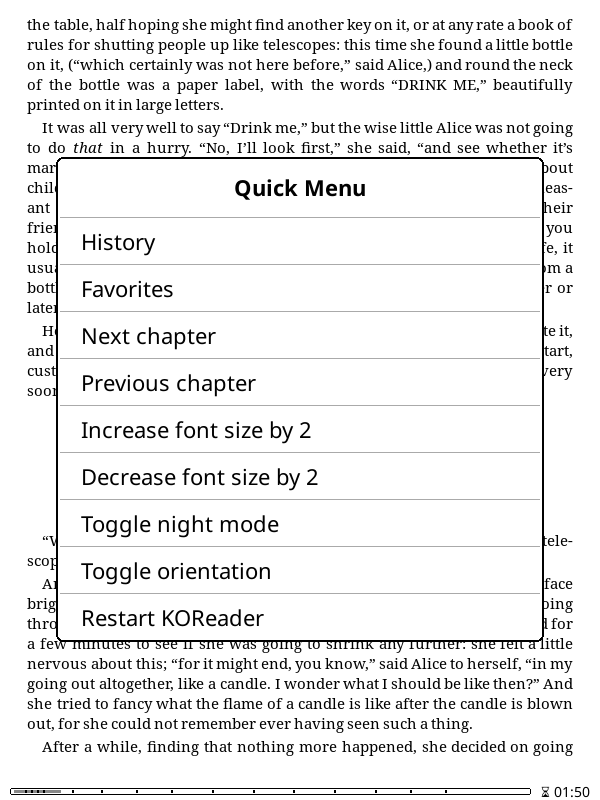 விரைவு பட்டியல் ஐ உருவாக்க இரண்டு முறைகள் உள்ளன: எளிதானது மற்றும் மேம்பட்ட . உங்களுக்கு ஒரு பட்டியல் மட்டுமே தேவைப்பட்டால், எளிதான முறை உங்களுக்கு போதுமானதாக இருக்க வேண்டும். வெவ்வேறு சைகைகளுடன் வெவ்வேறு மெனுக்களைக் காட்ட விரும்பினால், நீங்கள் மேம்பட்ட முறை ஐப் பயன்படுத்த வேண்டும். மேம்பட்ட முறை இன் மற்றொரு நன்மை எளிதான சைகை மறுசீரமைப்பு ஆகும். உங்கள் மெனுவுக்கான சைகையை மாற்ற விரும்பினால், மேம்பட்ட முறை மெனுவுடன் அதை மற்றொரு சைகைக்கு எளிதாக நகர்த்தலாம். எளிதான முறை ஐப் பயன்படுத்தும் போது நீங்கள் மற்றொரு சைகையைப் பயன்படுத்த விரும்பினால், புதிய சைகையின் கீழ் உங்கள் மெனுவை மீண்டும் உருவாக்க வேண்டும். இப்போது நீங்கள் தேர்ந்தெடுத்த சைகையுடன் உங்கள் மெனுவைத் தொடங்கலாம். நீங்கள் பட்டியல் உருப்படிகளை மாற்ற விரும்பினால், நீங்கள் சைகை பக்கத்தைத் திறந்து உருப்படிகளைச் சேர்க்கலாம்/அகற்றலாம். 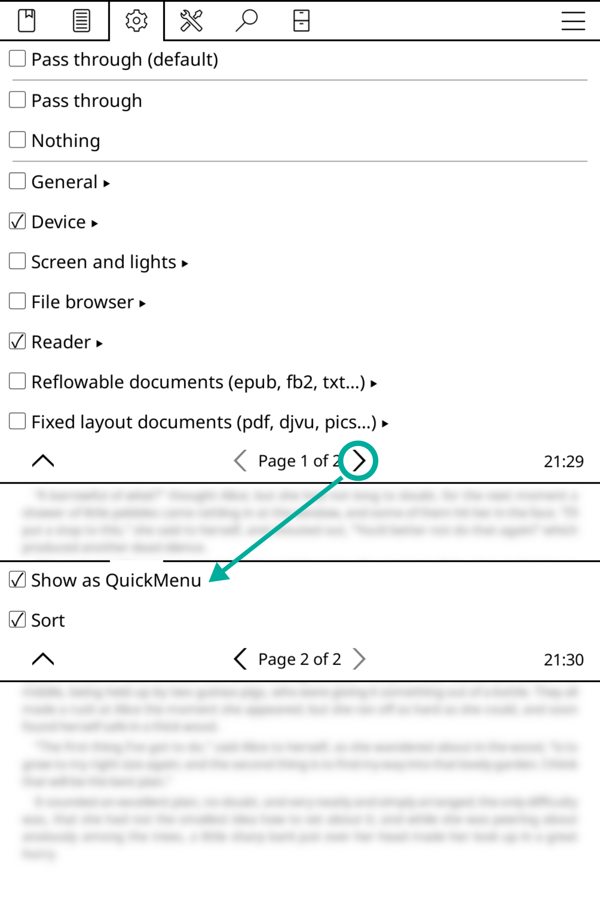 இந்த விரைவான பட்டியல் உண்மையில் ஒரு சுயவிவரம் ஆகும், இது உங்கள் திரையில் மெனுவாக தோன்றும். எனவே முதலில் நீங்கள் சுயவிவரங்கள் பற்றி அறிய வேண்டும். அவற்றை எவ்வாறு பயன்படுத்துவது என்பது உங்களுக்கு ஏற்கனவே தெரிந்தால், நீங்கள் தொடர்ந்து படிக்கலாம், இல்லையெனில் சுயவிவரங்கள் தலைப்பு (அடுத்த பகுதி) க்குச் செல்லவும், சில உருப்படிகளுடன் சுயவிவரம் ஐ உருவாக்கி இங்கே திரும்பி வாருங்கள். தொடர்வதற்கு முன், முந்தைய பத்தியில் அறிவுறுத்தப்பட்டபடி நீங்கள் ஏற்கனவே சுயவிவரம் ஐ உருவாக்கியுள்ளீர்கள் என்று கருதுகிறோம். இப்போது நாம் எங்கள் சுயவிவரம் ஐ விரைவான பட்டியல் ஆக மாற்றுவோம். 1. இது உங்கள் சுயவிவரம் சைகை மேலாளர் இல் தெரியும். ஐ விரைவான பட்டியல் (கீழே உள்ள படத்திலும்) இயக்கு என்பதை இயக்கவும், எனவே உங்கள் சுயவிவரம் அமைதியாக செயல்படுத்தப்படுவதற்கு பதிலாக மெனுவாக காண்பிக்கப்படும். 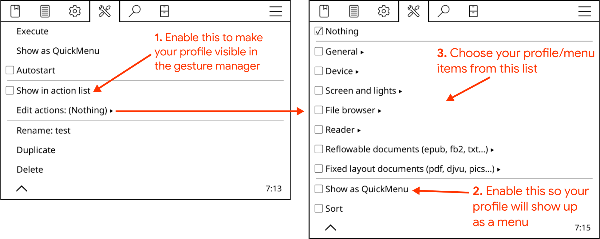 2. இப்போது எங்கள் மெனுவை அணுக ஒரு வழி தேவை. சைகை மேலாளர் க்குச் சென்று, எங்கள் மெனுவுக்கு ஒதுக்க பட்டியலிலிருந்து ஒரு சைகையைத் தேர்வுசெய்க. மெனுவைக் காட்ட திரையின் மூலையைத் தட்ட விரும்புகிறோம் என்று சொல்லலாம். இப்போது ஐத் தட்டவும் கார்னர் பின்னர் கீழே இடது ஐத் தேர்வுசெய்க. இப்போது பொது ஐத் தட்டவும், இரண்டாவது பக்கத்திற்குச் செல்லவும். உங்கள் சுயவிவரத்தை சுயவிவரம் ஃச் எனக் காண்பீர்கள், அங்கு ஃச் என்பது இந்த சுயவிவரம் க்கு நீங்கள் கொடுத்த பெயர். இந்த சைகைக்கு உங்கள் சுயவிவரத்தை ஒதுக்க அதன் தேர்வுப்பெட்டியைத் தட்டவும். உங்களிடம் சைகை மேலாளர் அடிப்படையிலான (எளிதான முறை) விரைவான பட்டியல் இருந்தால் பின்வரும் மெனுவிலிருந்து இந்த விருப்பத்தை இயக்கலாம்:
நாங்கள் சொன்னது போல், ஒரு விரைவான பட்டியல் உண்மையில் ஒரு சுயவிவரம் ஆகும். அதாவது நீங்கள் ஒன்றுக்கு மேற்பட்ட மெனுவைக் கொண்டிருக்கலாம். நீங்கள் மற்றொரு சுயவிவரம் ஐ உருவாக்கலாம், மேலும் நீங்கள் விரும்பினால் மற்றொரு மெனுவை உருவாக்க அதே படிகளைப் பின்பற்றலாம்.
சைகை நிலையில் விரைவான மெனுவைத் திறக்கிறது
உங்களிடம் சைகை மேலாளர் அடிப்படையிலான (எளிதான முறை) விரைவான பட்டியல் இருந்தால் பின்வரும் மெனுவிலிருந்து இந்த விருப்பத்தை இயக்கலாம்: அல்லது இந்த மெனுவிலிருந்து, உங்களிடம் சுயவிவரங்கள் அடிப்படையிலானவை இருந்தால் - (மேம்பட்ட முறை) விரைவான மெனு: பொதுவாக விரைவான பட்டியல் திரையின் நடுவில் மையமாக திறக்கும். நீங்கள் ஒரு கையால் உங்கள் ஈ-ரீடரைப் பயன்படுத்துகிறீர்கள் என்றால், சைகை நிலையில் உங்கள் மெனுவைத் திறக்கும் ஒரு அமைப்பை நீங்கள் செயல்படுத்தலாம். இந்த வழியில், பட்டியல் உங்கள் விரலுக்கு நெருக்கமாகவும் அணுகவும் எளிதாக இருக்கும். இந்த அம்சத்தைப் பயன்படுத்த இந்த விருப்பத்தை இயக்கவும்: In addition to adding actions to your quick menu, you can also add your profiles as a menu item. This way, you can execute many actions at once with this single menu item. We assume that you have a working quick menu and a profile, which you want to add to this menu. With these ready, follow these instructions: After adding your profile as a menu item, you can open your quick menu and tap on this item to execute all the actions in tes profile. You can also add a profile as a sub-menu which allows you to have a nested menu. This method is explained in the next heading. You can also add a quick menu as a menu item to another quick menu. This will give you a nested menu structure. This is useful when you have many quick menus but you don't want to assign different gestures to each one.
ஒரு சுயவிவரம் அடிப்படையில் ஒரு சைகையுடன் (மேக்ரோ போன்றது) தூண்டக்கூடிய செயல்களின் தொகுப்பாகும்.
உதாரணமாக, சில வகை புத்தகங்களைப் படிக்கும்போது, நீங்கள் எப்போதும்: நீங்கள் எப்போதும்: சுயவிவர சொருகி மூலம், இவை அனைத்தையும் ஒரே நேரத்தில் ஒரே நேரத்தில் செய்யலாம். ஒரு சுயவிவரத்தை உருவாக்க முதலில் சுயவிவரங்கள் சொருகி செயல்படுத்தப்படுகிறது என்பதை உறுதிப்படுத்திக் கொள்ளுங்கள். நீங்கள் அதை கீழ் காணவில்லை என்றால்: நீங்கள் அதை இயக்க வேண்டும்:
சுயவிவரங்கள் பட்டியல் தட்டவும் புதிய மற்றும் உங்கள் சுயவிவரத்திற்கு விளக்கமான பெயரைக் கொடுங்கள். இப்போது உங்கள் புதிய சுயவிவரத்தை பட்டியலில் பார்க்க வேண்டும். அதைத் தட்டவும், இடது பக்கத்தில் திரையை காண்பீர்கள். நீங்கள் நீக்கவும், மறுபெயரிடவும் அல்லது நகல் இந்த மெனுவிலிருந்து ஒரு சுயவிவரம்.
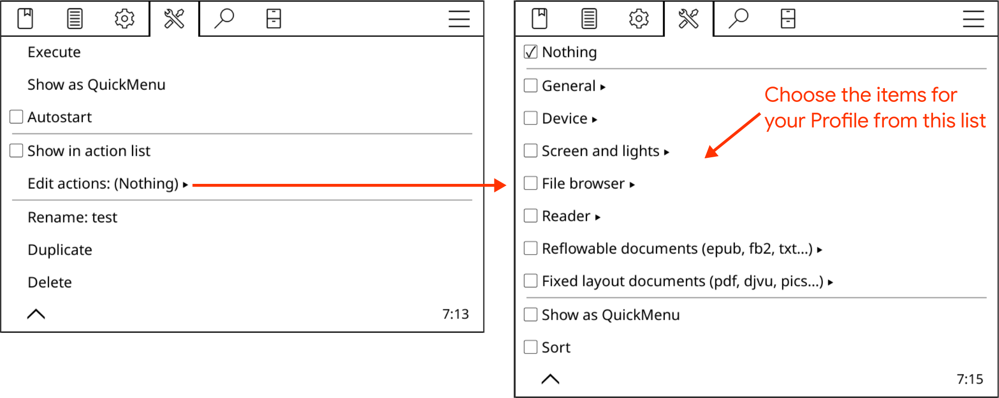 நீங்கள் செயல்களைத் திருத்து பட்டியல் உருப்படியைத் தட்டும்போது வலதுபுறத்தில் மெனுவைக் காண்பீர்கள். இது சைகை தேர்வு மெனுவின் அதே பட்டியல் மற்றும் பல வகைகளில் செயல்கள் உள்ளன. அதாவது சைகை செயலை ஒரு சுயவிவரம் ஐப் பயன்படுத்தி நீங்கள் செய்ய முடியும். இந்த அனைத்து வகைகளிலிருந்தும் நீங்கள் இப்போது பல உருப்படிகளைத் தேர்ந்தெடுக்கலாம். இந்த சுயவிவரத்தை நீங்கள் செயல்படுத்தும்போது நீங்கள் இங்கு தேர்ந்தெடுத்த செயல்கள் செய்யப்படும். சுயவிவரத்தை செயல்படுத்த பல வழிகள் உள்ளன: மேலே விளக்கப்பட்டுள்ளபடி நீங்கள் ஒரு சுயவிவரத்தை கைமுறையாக இயக்கலாம், ஆனால் சுயவிவரங்களின் உண்மையான சக்தியை அதன் ஆட்டோ-எக்ச்கியூட் அம்சத்துடன் கட்டவிழ்த்து விடலாம். இந்த அம்சத்தைப் பயன்படுத்தி, சில நிபந்தனைகள் மற்றும் துணை நிபந்தனைகளைப் பொறுத்து சுயவிவரத்தைத் தூண்டலாம்: This option is not a trigger but a limiter. You can use this option to define a time interval for the execution of profile. For example "make the font bigger when I open a book from a certain collection but only if it is evening time". கொரியடர் தொடங்கும் ஒவ்வொரு முறையும் இந்த சுயவிவரத்தை இயக்கவும். கோப்பு உலாவி அல்லது கடைசி கோப்பு உடன் கொரியேடர் தொடங்கும் போது மட்டுமே இது சாத்தியமாகும் என்பதை நினைவில் கொள்க. சாதனம் எழுந்த ஒவ்வொரு முறையும் இந்த சுயவிவரத்தை இயக்கவும் Run this profile every time device exits the sleep screen திரை தேர்ந்தெடுக்கப்பட்ட சுழற்சி (கள்) க்கு சுழலும் போது இந்த சுயவிவரத்தை இயக்கவும். எடுத்துக்காட்டுகள்: சாதனம் நிலப்பரப்புக்கு சுழலும் போது இரட்டை நெடுவரிசை தளவமைப்புக்கு மாற்றவும். சாதனம் தலைகீழாக சுழலும் போது இரவு பயன்முறையை செயல்படுத்தவும். இந்த கோப்புறையை கோப்பு உலாவியில் உள்ளிடும்போது இந்த சுயவிவரத்தை இயக்கவும். கோப்பு உலாவி இன் காட்சி பயன்முறையை மாற்ற இந்த தூண்டுதலைப் பயன்படுத்தலாம். எடுத்துக்காட்டாக, நீங்கள் ஒரு குறிப்பிட்ட கோப்புறையை உள்ளிடும்போது, காட்சி பயன்முறையை மொசைக் இலிருந்து விரிவான பார்வைக்கு மாற்றலாம். குறிப்பிட்ட துணை நிபந்தனைகளுடன் இணைந்து ஒரு புத்தகத்தை (விருப்பமாக) திறக்கும்போது இந்த தூண்டுதல் செயல்படுத்தப்படுகிறது. முதல் 4 துணை நிபந்தனைகள் அல்லது பொருந்தும், எனவே அவற்றில் ஏதேனும் ஒன்று சுயவிவர செயல்பாட்டைத் தூண்டுவதற்கு போதுமானது. இந்த விருப்பம் மேலே உள்ளதைப் போன்றது, ஆனால் நீங்கள் ஒரு புத்தகத்தை மூடும்போது அது தூண்டுகிறது. உங்கள் புள்ளிவிவரங்களிலிருந்து விலக்க சில ஆவணங்களைத் திறக்கும்போது, வாசிப்பு புள்ளிவிவரங்களை இயக்க/முடக்குதல். Run this profile every time the read timer finishes Run this profile every time the Night Mode (inverted screen color) is toggled or screen warmth is changed This trigger will activate on every warmth change. You can limit this by enabling the Only within time interval option. Profile auto-execution examples: கொரியாடரின் இந்த சக்திவாய்ந்த அம்சத்தைப் பயன்படுத்துவது குறித்த யோசனைகளை உங்களுக்கு வழங்க எங்கள் தேவ்சின் சில சுயவிவர எடுத்துக்காட்டுகள் இங்கே. எடுத்துக்காட்டுகளில் ஆட்டோ-கூடுதல் நிலைமைகள் மற்றும் சேகரிப்புகள் அம்சங்களும் அடங்கும்: Normally when you execute a profile, all of the actions in the profile are executed following the order that you have chosen in the Arrange actions menu. But you also have the option to execute them one by one. Which means, each time you invoke this profile, only one of the actions (next one) will be executed instead of all of them. Here is a useful example: Now each time you tap the right corner, you will switch between your pinned page and your reading position. This can be useful for quickly jumping to references section and going back, for example. Profiles are auto-executed with a tiny delay to avoid interference with other operations/events of KOReader. But in some cases like closing a document, profile has to be executed instantly to be able to perform its actions. You can enable this instant execution option from: When you enable this option, for example on a profile with the trigger on book closing, your profile will be executed before the document is closed. This running order is necessary for proper execution in this case. Whenever you enable Auto-execute for a profile, we suggest enabling this Execute promptly option too. If you observe that your profile is not working correctly, then you can try disabling this option. கொரியடரில் எங்களிடம் செயல்கள்/அமைப்புகளின் தொகுப்பு மற்றும் இந்த தொகுப்பை இரண்டு வழிகளில் உருவாக்க முடியும்: இந்த தொகுப்பையும் செயல்படுத்தலாம் இரண்டு வெவ்வேறு வழிகளில்: நீங்கள் அவற்றை இயக்க/முடக்கலாம்:
செருகுநிரல்கள் சிறிய கொரியடர் நிரல்களாகும், அவை உலாவி துணை நிரல்களுக்கு ஒத்தவை, இது அடிப்படை திட்டத்தின் திறன்களை விரிவுபடுத்துகிறது. கொரியடர் 3 வகை செருகுநிரல்களைக் கொண்டுள்ளது:
உள் செருகுநிரல்கள் முக்கிய நிரலின் ஒரு பகுதியாகும்.
நீங்கள் அவற்றை இயக்க/முடக்கலாம்:
இந்த குழுவில் கொரியாடரின் முக்கிய தர்க்கத்தின் பகுதியாக இல்லாத உத்தியோகபூர்வமற்ற செருகுநிரல்கள் உள்ளன.
இந்த பக்கம் இந்த பக்கத்திலிருந்து இலிருந்து அவற்றை அணுகலாம். பொதுவாக அவை மேலே உள்ள பக்கத்திலிருந்து சொருகி கோப்பகத்தை பதிவிறக்கம் செய்து உங்கள் சாதனத்தில் கொரியடர்/செருகுநிரல்கள் கோப்புறையின் கீழ் நகலெடுப்பதன் மூலம் நிறுவப்படுகின்றன. ஆனால் சாத்தியமான பிற வழிமுறைகளுக்கு சொருகி பக்கத்தை சரிபார்க்கவும்.
இவை கொரியடர் அணியிலிருந்து சுயாதீனமாக உருவாக்கப்பட்ட செருகுநிரல்கள். இந்த வெளிப்புற செருகுநிரல்களின் சில குறிப்பிடத்தக்க எடுத்துக்காட்டுகள் அவற்றின் அறிவிலிமையம் பக்கங்களுக்கான இணைப்புகளுடன்: We need to repeat that these external plugins are not a part of the KOReader project. So be careful when installing and using them. You can find more plugins on Github with these links: With the AI coding, number of KOReader plugin projects increased considerably, so it became much harder to decide which plugin to use. These curated lists of KOReader resources come handy when finding useful plugins:
படித்தல் புள்ளிவிவரங்கள் - வாசிப்பு அமர்வுகள் புள்ளிவிவரங்கள் மற்றும் அத்தியாயம்/புத்தகத்தில் மீதமுள்ள நேர மதிப்பீடுகளில் பயன்படுத்த வாசிப்பு வேகத்தை கணக்கிடுகிறது
பாஓடு - பாஓடு நெறிமுறைக்கு மேல் உங்கள் சாதனத்தை அணுக அனுமதிக்கிறது. FTP பயன்பாடுகள் அல்லது உங்கள் கோப்பு மேலாளரை ஆதரித்தால் கூட அணுகலாம். எப்படி-எப்படி விக்கி பக்கத்தை சரிபார்க்கவும்: https://github.com/koreader/koreader/wiki/ssh
கணினி புள்ளிவிவரங்கள் - இந்த சொருகி வழியாக உங்கள் CPU/RAM/பேட்டரி தகவலை நீங்கள் காணலாம்:
ஆட்டோசுச்பென்ட் - செயலற்ற காலத்திற்குப் பிறகு சாதனத்தை இடைநீக்கம் செய்யுங்கள் (Android OS ஐத் தவிர அனைத்து மின் -மை சாதனங்களிலும் கிடைக்கிறது)
முனைய முன்மாதிரி - முழு முனைய பயன்பாடுகளை இயக்கக்கூடிய உங்கள் சாதனத்தில் செல் (கட்டளை வரியில்) தொடங்குகிறது
Battery statistics - Collects and displays battery usage statistics of your device (only available on some devices)
டிகீக் ஆவண அமைப்புகள் - ஒரு ஆவணத்தின் வெளிப்புற காரணிகளின் அடிப்படையில் ஏற்றப்படுவதற்கு முன்பு அதை மாற்றும் அமைப்புகளை அனுமதிக்கிறது
காலிபர் - உங்கள் காலிபர் நூலகத்திலிருந்து ஆவணங்களை நேரடியாக உங்கள் கொரியடர் சாதனங்களுக்கு வைஃபை இணைப்பு வழியாக அனுப்பலாம். எங்கள் விக்கி பக்கம் ஐக் காணவும்.
கவர் உலாவி - கோப்பு உலாவி மற்றும் வரலாற்றிற்கான காட்சி முறைகளை கவர் முறையை அனுமதிக்கிறது
கவர் படம் - தற்போதைய புத்தகத்தின் கவர் படத்தை ஒரு கோப்பாக சேமிக்கிறது (Android/pocketbook/குறிப்பிடத்தக்க சாதனங்களில் கிடைக்கிறது)
Export highlights - Exports highlights and notes to local files or online services
சைகைகள் - கொரியாடருக்கு சைகை ஆதரவை வழங்குதல்
http இன்ச்பெக்டர் - வைஃபை வழியாக மற்றொரு சாதனத்திலிருந்து உங்கள் சாதனத்தை கட்டுப்படுத்த உங்களை அனுமதிக்கிறது - மேலும் தகவலுக்கு கீழே காண்க
சப்பானிய உதவி - உள்ளமைக்கப்பட்ட அகராதி மற்றும் தேர்வு முறையை விரிவுபடுத்தும் கொரியாடருக்கு சப்பானிய மொழி உதவி
உயிருடன் வைத்திருங்கள் - தானியங்கி வைஃபை துண்டிக்கப்படுவதைத் தடுக்க சாதனத்தை விழித்திருக்கிறது
தொடர்புடைய அறிவிலிமையம் விக்கி பக்கத்தில் பயனர் திட்டுகள் இன் தற்போதைய பட்டியலை நீங்கள் காணலாம்:
News Downloader - Retrieves RSS and Atom news entries and saves them as HTML files. Check our wiki page for how-to. (only available on some devices)
https://github.com/koreader/koreader/wiki/User-patches
Perception expander - Helps with using your peripheral vision to read faster. Explained in this section of the guide: Plugins for Faster Reading
சிக்கல்கள் பட்டியலில் பயனர் இணைப்பு கிடைக்கிறது குறிச்சொல்:
முன்னேற்ற ஒத்திசைவு - வெவ்வேறு கொரியடர் சாதனங்களில் உங்கள் வாசிப்பு முன்னேற்றத்தை ஒத்திசைக்கவும். எங்கள் விக்கி பக்கம் எப்படி-எப்படி என்பதை சரிபார்க்கவும்.
https://github.com/koreader/koreader/issues?q=+label%3A%22User+patch+available%22
டைமரைப் படியுங்கள் - பயனர் வரையறுக்கப்பட்ட நேரத்திற்குப் பிறகு செய்தியைக் காண்பிப்பதற்கான கவுண்டவுன் நேரங்குறிகருவி
படித்தல் புள்ளிவிவரங்கள் - வாசிப்பு அமர்வுகள் புள்ளிவிவரங்கள் மற்றும் அத்தியாயம்/புத்தகத்தில் மீதமுள்ள நேர மதிப்பீடுகளில் பயன்படுத்த வாசிப்பு வேகத்தை கணக்கிடுகிறது
பாஓடு - பாஓடு நெறிமுறைக்கு மேல் உங்கள் சாதனத்தை அணுக அனுமதிக்கிறது. FTP பயன்பாடுகள் அல்லது உங்கள் கோப்பு மேலாளரை ஆதரித்தால் கூட அணுகலாம். எங்கள் விக்கி பக்கம் எப்படி-எப்படி என்பதை சரிபார்க்கவும்.
கணினி புள்ளிவிவரங்கள் - இந்த சொருகி வழியாக உங்கள் CPU/RAM/பேட்டரி தகவலை நீங்கள் காணலாம்:
முனைய முன்மாதிரி - முழு முனைய பயன்பாடுகளை இயக்கக்கூடிய உங்கள் சாதனத்தில் செல் (கட்டளை வரியில்) தொடங்குகிறது
உரை எடிட்டர் - எளிய உரை கோப்புகளை உருவாக்கி திருத்த ஒரு அடிப்படை உரை எடிட்டர்
நேர ஒத்திசைவு - சாதன நேரத்தை என்டிபி சேவையகங்களுடன் ஒத்திசைக்கிறது
Tweak document settings - Allows tweaking settings of a document before it is loaded based on external factors (only available on some devices)
வாலபாக் - வாலபாக் சேவையகத்திலிருந்து அண்மைக் கால கட்டுரைகளை தனிப்பட்ட எபப் கோப்புகளாக பதிவிறக்குகிறது. மேலும் தகவலுக்கு எங்கள் விக்கி பக்கம் சரிபார்க்கவும்.
This plugin allows you to control your device from another device over wifi. It works by running a simple HTTP server on your device which serves a page containing KOReader controls. You can access this page over your network and control your reader device. You can read an example use case for this plugin on the MobileRead forum. But be aware of these points when using this plugin: To see what you can control remotely using the HTTP Inspector plugin: Your list will populate depending on the installed plugins and user patches. This is an Android application that allows you to control your KOReader from an Android OS device on the same network. It uses the KOReader HTTP Inspector plugin to communicate with KOReader. You can remotely perform many actions like turning pages, entering text, adjusting screen light, activating profiles. You can see the instructions and download the app from its project page: KOReader Companion App பயனர் திட்டுகள் லுவா மொழியில் எழுதப்பட்ட சிறிய கோப்புகள். உங்கள் நிறுவலை நிரந்தரமாக மாற்றாமல் அவை கொரியாடரின் செயல்பாட்டை மாற்றலாம். அவை உருவாக்குபவர்கள், பிற பயனர்களால் எழுதப்படலாம் அல்லது ஒன்றை நீங்களே எழுதலாம் (கொரியடர் இன்டர்னசைப் பற்றி உங்களுக்கு தேவையான விரிவான அறிவு இருந்தால்). You can கண்டுபிடி a மின்னோட்ட்ம், ஓட்டம் பட்டியல் of User patches in our wiki and in the GitHub issues list marked with the User patch available tag. இதைப் பின்பற்றுவதன் மூலம் நீங்கள் அவற்றைக் காணலாம் இணைப்பு . அறிவுறுத்தப்பட்டபடி நீங்கள் ஒரு திட்டுகள் கோப்பகத்தை உருவாக்கும்போது, ஒட்டு மேனேச்மென்ட் என்ற புதிய சொருகி கொரியாடரை மறுதொடக்கம் செய்த பிறகு செருகுநிரல்கள் பட்டியலில் கிடைக்கிறது. இந்த சொருகி மூலம் உங்கள் பயனர் திட்டுகளின் பட்டியல் மற்றும் நிலையை நீங்கள் காணலாம் மற்றும் அவற்றை இயக்கலாம்/முடக்கலாம். மேலும் தகவலைக் காண ஒட்டு மேலாளர் பட்டியல் உருப்படியைப் பற்றி ஐத் தட்டலாம். ஒரு இணைப்பின் செயல்பாட்டு வரிசை ஒட்டு பெயரில் உள்ள எண்ணின் முதல் இலக்கத்தால் தீர்மானிக்கப்படுகிறது. எடுத்துக்காட்டாக: 2-TOC-TITLE-PATCH.LUA ஒரே இலக்கத்துடன் தொடங்கி பல திட்டுகள் இருந்தால், சாவுஒறுப்பு ஒழுங்கு இயற்கையான ஒழுங்கு (1 & lt; 10 & lt; 11 & lt; 12 & lt; 13 & lt;… & lt; நீங்கள் ஏற்கனவே தயாரிக்கப்பட்ட பேட்சைப் பதிவிறக்குகிறீர்கள் என்றால், நீங்கள் கோப்பு பெயரை மாற்றத் தேவையில்லை.
இதனுடன் தொடங்கும் பெயர்கள்:
பயனர் பேட்சில் உங்களுக்கு சிக்கல் இருந்தால், ஒட்டு கோப்பை அகற்றுவதன் மூலம் உங்கள் முந்தைய உள்ளமைவுக்கு திரும்பலாம். In this section we will first explain two KOreader plugins that might improve your reading speed. Then we will list some fonts that can improve your reading speed and comprehension. When you enable, this plugin adds two vertical lines to the reading area, near the left and right edges as you can see in the image below. These lines serve as the start/end markers for your eyes, when reading a line from your book. Working principle of this plugin is based on the fact that, you don't really need to look at the first and last words of a line directly, because with some practice you can perceive them with your peripheral vision. To use this plugin, you have to first enable it by going to: After enabling the plugin, you will have a new menu item here: You can toggle the expander lines from this menu and also configure the indicators according to your liking and peripheral vision skill level. You can watch the Tim Ferriss video that inspired this plugin here. This plugin is a RSVP (Rapid Serial Visual Presentation) reader. This technique is based on flashing the word(s) at the center of the screen quickly. Your eyes don't need to move when reading like this so the reading speed can be faster. And if you improve the skill, you can perceive more than one word at once, which further increases the reading speed. To use this plugin, you have to first enable it by going to: After enabling the plugin, you will have a new menu item here: You can start the plugin from this menu and also configure the settings like: You can start using the plugin in single word and low WPM (slower) mode and increase them as you get better. In this section we will show you some fonts that might improve your reading experience. These fonts are not an exclusive feature of KOReader, but we are including them here because sometimes our users ask about them in our issues and discussions. You can install these fonts like any other font. If you don't know how to add fonts to your device, we explain it in Using Your Own Fonts section. Overview of fonts in this section (note that all the fonts in this image have the same size - 11 pt - but very different widths, line heights and readability): Atkinson Hyperlegible Designed by Braille Institute, this font family aims to improve legibility and readability for individuals with low vision. It has clear, highly distinctive letters and numbers. You can see the font and download it from here B612 B612 is a highly legible font family, designed to be used on Airbus aircraft cockpit screens. Its legible design makes it particularly suitable for degraded contexts and aims reducing visual fatigue and cognitive load. These design principles makes it a suitable font for e-readers too. You can see the font and download it from Google Fonts Lexend This font's design is based on the principles derived from educational studies that aim to improve reading performance of students. You can read about the font here and download it from Google Fonts Luciole This font adheres to a dozen specific design criteria to provide the best possible reading experience for the visually impaired. It emphasizes the "inner" space of letters and has extremely clear, distinct numbers and mathematical symbols. You can see the font and download it from here Open Dyslexic This font is designed to increase readability for readers with dyslexia. Letters have heavy weighted bottoms to emphasize direction. The unique shapes of each letter can prevent confusion through flipping and swapping. You can download it from here Shantell Sans This font is designed by a dyslexic author as a legible, accessible, and easy to read typeface. It also works nicely for small text thanks to its wider letters and relaxed spacing. You can download it from Google Fonts Fast Font This is a special font that substitutes the first few letters of a word with their bold variant (number of letters is calculated according to the word length). This bold letters then act as artificial fixation points for the eye to jump on as you can see in this sentence. In theory this might increase the reading speed but of course personal results may vary. Interestingly, readers with ADHD generally report benefits. This font depends on special OpenType features which are supported by KOReader. So you can just download the font, copy it to your device and use it like any other font. You can see the examples and download this font and its variations (serif, monospace and dotted) from its GitHub repo நீங்கள் இரண்டு ஆவணங்களுக்கு இடையில் மாற வேண்டும் என்றால் (எடுத்துக்காட்டாக அவற்றை ஒப்பிடும்போது), கோப்பு உலாவி வழியாக செல்வதை விட விரைவான வழி உள்ளது. கொரியடர் கடைசி ஆவணத்தை ஒரு சைகையுடன் திறக்க முடியும் ( மல்டிச்வைப் ). ஒரு சைகையின் செயலை முந்தைய ஆவணம் ஐத் திறக்கவும் என்றால், டெச்க்டாப் கணினிகளில் alt+தாவல் அம்சத்திற்கு ஒத்த இரண்டு ஆவணங்களுக்கு இடையில் மாறலாம். இந்த அம்சத்தை நீங்கள் கீழ் காணலாம்: ஆவணங்களுக்கு இடையில் விரைவாக மாற வரலாறு உரையாடலைப் பயன்படுத்தலாம். வரலாற்றுத் திரையை மல்டிச்வைப் சைகை மூலம் திறக்க முடியும். இதற்காக வேறு எந்த சைகையையும் நீங்கள் வரையறுக்கலாம். தற்போதைய பக்கத்தில் எத்தனை கோடுகள் அல்லது சொற்கள் காட்டப்படுகின்றன என்பதை நீங்கள் அறிய விரும்பினால், அதை நீங்கள் காணலாம்: இந்த மெனுவிலிருந்து உங்கள் புத்தக அட்டையை மாற்றலாம்: சில புத்தகங்கள் சரியான புத்தக அட்டைகளுடன் வரவில்லை. அல்லது இரண்டாவது பக்கத்தில் அவர்கள் கவர் வைத்திருக்கலாம், எனவே அது சரியாகக் காட்டாது. அல்லது கவர் ஈ-மை க்கு ஏற்றதாக இல்லை (மிகவும் ஒளி அல்லது இருண்ட). அல்லது புத்தகத்திலிருந்து சில படங்களை அட்டையாக அமைக்க விரும்புகிறீர்கள். In situations like this you can quickly take a screenshot and set it as the current book’s cover. There are two screenshot gestures depending on where you are: In image viewer, you can zoom and pan the image before taking the screenshot, so it will be cropped to exact size and aspect ratio of your device without stretching. After taking your screenshot you can select Set as book cover from the dialog. You can remove the custom book cover from this menu: புத்தகத் செய்தி பக்கத்தில், கவர் படம் உருப்படியில் நீண்ட நேரம் அழுத்தவும், பின்னர் தனிப்பயன் மீட்டமை என்பதைத் தேர்ந்தெடுக்கவும். <ச்பான் class="external"> காலிபர் உங்கள் ஆவணங்களை பல வடிவங்களுக்கு இடையில் மாற்ற முடியும். இது ஒரு உள்ளமைக்கப்பட்ட எடிட்டரையும் கொண்டுள்ளது, இது மிகவும் பிரபலமான மின் புத்தக வடிவங்களான எபப் மற்றும் கின்டெல் ஆகியவற்றில் மின் புத்தகங்களைத் திருத்தவும் (சிக்கல்களை சரிசெய்யவும்) உங்களை அனுமதிக்கிறது. https://calibre-ebook.com/ உங்கள் ஆவணத்தில் இணைப்புகள் இருந்தால், பக்கத்தைத் திருப்பும்போது அல்லது பிற சைகைகளைப் பயன்படுத்தும் போது நீங்கள் தற்செயலாக அவற்றைத் தட்டினால், இந்த பட்டியல் உருப்படி வழியாக ஐத் தட்டுவதன் மூலம் ஐத் தட்டுவதன் மூலம் பின்வரும் இணைப்புகளை அணைக்கலாம்: இந்த அமைப்பை முடக்கிய பிறகு, ஒரு இணைப்பைப் பின்தொடர நீங்கள் அதை நீண்ட நேரம் தட்ட வேண்டும் மற்றும் ஐத் தேர்ந்தெடுக்கவும், மேல்தோன்றல் மெனுவிலிருந்து இணைப்பு ஐப் பின்தொடரவும். உங்களுக்கு எதிர் சிக்கல் இருந்தால், தட்டுகளைத் தட்டுவதை எளிதாக்க விரும்பினால், ஒரே மெனுவிலிருந்து இணைப்புகளைச் சுற்றியுள்ள பெரிய குழாய் பகுதியை அனுமதிக்கலாம் ஐ அனுமதிக்கலாம். புள்ளிவிவரங்களைப் படிப்பதில் நீங்கள் கணக்கீடுகளுக்குப் பயன்படுத்தப்படும் நாளின் தொடக்கத்தை மாற்றலாம். உதாரணமாக நீங்கள் நள்ளிரவுக்குப் பிறகு படிக்கிறீர்கள் என்றால் இது பயனுள்ளதாக இருக்கும், அடுத்த நாளுக்கு பதிலாக உங்கள் வாசிப்பு அமர்வு இன்று என எண்ணப்பட விரும்பினால். இது நாள் காலவரிசை பார்வை க்கு மட்டுமே பொருந்தும், மேலும் விருப்பமாக காலெண்டர் பார்வை ; இது வேறு எந்த புள்ளிவிவர அறிக்கைகளுக்கும் பொருந்தாது. இந்த நேரத்தில் நீங்கள் அமைக்கலாம்: Currently official KOReader doesn't support rendering books formatted as vertical text (tategaki - 縦書き) but one of our users has created a fork that can do this. It is basically a clone of KOReader with added vertical text rendering. Japanese vertical writing is the main target of this fork. But since the implementation supports EPUB writing-mode: vertical-rl at the rendering engine level, it may also work for other vertical writing languages. It can at least render Chinese too, according to the feedback from Chinese users. Be aware that this is a fork (not a plugin or a user patch), so it completely replaces your KOReader. But ordinary horizontal books behave much like they do in the official KOReader, so this replacement should be functionally equivalent. You can switch to this fork without first uninstalling your current KOReader. Just follow the instructions in the fork's repo. Development discussion on our repo is here. If you switch to this fork, please use the fork's repo for vertical text related questions/issues, instead of the official KOReader repo. கொரியடர் வைஃபை மீது தன்னை புதுப்பிக்க முடியும். இந்த பட்டியல் உருப்படி வழியாக நீங்கள் காசோலையைத் தூண்டலாம்:
We don't have a direct option for this in KOReader. But there is a workaround to achieve this kind of lock screen functionality. You can set up KOReader to keep the sleep screen on the screen until you enter a chosen gesture. To achieve this:
By using an open source Android application, you can control your KOReader from an Android OS device that is on the same network. It uses the KOReader HTTP Inspector plugin to communicate with KOReader. You can remotely perform many actions like turning pages, entering text, adjusting screen light, activating profiles. You can see the instructions and download the app from its project page: KOReader Page Turner Companion உங்கள் சாதனம் சிறிது நேரம் சும்மா இருந்தால் பேட்டரியைப் பாதுகாக்க கொரியடர் உங்கள் முன் விளக்கை மங்கச் செய்யலாம். இந்த அம்சத்தை நீங்கள் இயக்கி சரிசெய்யலாம்: Li-ion batteries experience more degradation at the extreme ends of their charge levels. To minimize this degradation and extend your battery life, you can limit your minimum discharge level to 20% and maximum charge level to 80% (as in electric vehicles and some newer phones). Which means you start charging your device when the battery goes down to 20% and unplug when it reaches 80% (or 30%-70% if you are extra cautious). கட்டண நிலை உங்கள் வரையறுக்கப்பட்ட வரம்புகளை அடையும் போது ஒரு எச்சரிக்கையைக் காண்பிப்பதன் மூலம் கொரியடர் உங்களை எச்சரிக்க முடியும்: இந்த பட்டியல் உருப்படி வழியாக உங்கள் விரிவான பேட்டரி பயன்பாட்டு புள்ளிவிவரங்களைக் காணலாம்: இந்த பட்டியல் உருப்படி வழியாக CPU/வட்டு இடம்/ரேம் பயன்பாடு போன்ற உங்கள் கணினி தகவல்களை நீங்கள் காணலாம்: பழைய கின்டெல் சாதனங்களில், எங்கள் பயனர்களில் சிலர் வரையறுக்கப்பட்ட நினைவகம் காரணமாக விபத்துக்களைப் புகாரளித்தனர். ஒரு அமர்வில் நீங்கள் பல கோப்புகளைத் திறந்தால் கொரியடர் நினைவக பயன்பாடு மேலே செல்லலாம். குறிப்பாக PDF இன் இந்த தொகையை அதிகரிக்கும். உங்கள் நிலை பட்டி இல் ஒரு நினைவக குறிகாட்டியைச் சேர்க்கலாம் மற்றும் விபத்துக்கள் அல்லது மறுதொடக்கங்களைத் தவிர்க்க, இந்த மதிப்பு அதிகமாகிவிட்டால் கொரியாடரை மறுதொடக்கம் செய்யலாம். நினைவக பயன்பாடு ஒரு வாசலை அடைந்தால் தானாகவே மறுதொடக்கம் செய்ய கொரியாடரை உள்ளமைக்கலாம்: If you can't find a solution to your problem in this guide, you can open an issue about it on the project's GitHub page or make a post in the KOReader section of the Mobileread forum. Please see the REACH US section of this guide for details. KOReader uses battery very efficiently. So if your e-reader device's battery started draining abnormally when using KOReader, generally first suspect is the battery degradation. But if you are sure that your battery is healthy and drain happens only in KOReader, cause might be: These are the steps to follow if you have a drain problem:
If your problem continues, you can open an issue on our GitHub page.
Please see the Optimizing Documents section of the guide for tips and solutions if a specific file is slow. If all of your books are slow, your problem might be device related: ஒரு சிக்கலைத் திறத்தல்: இந்த சிக்கலைப் பற்றி நீங்கள் ஒரு சிக்கலைத் திறக்கிறீர்கள் என்றால், சிக்கலான கோப்பை ஆய்வு செய்வது எங்களுக்கு முதன்மை. சிப் கோப்பாக சுருக்கப்பட்ட பிறகு அதை உங்கள் அறிவிலிமையம் செய்தியில் இழுத்து விடுவதன் மூலம் கோப்பை நேரடியாக பகிரலாம். உங்கள் நூல் ஒரு எபப் மற்றும் பதிப்புரிமை அல்லது தனியுரிமை சிக்கல்கள் காரணமாக கோப்பைப் பகிர விரும்பவில்லை என்றால், காலிபர் பெயரிடப்பட்ட ச்க்ராம்ப்லீர்புக் href="https://www.mobileered.com/forums/showthread.php?t=267998"> MobileRead மன்றம் பக்கம் . இந்த சொருகி ஒரு ஐ.நா. இந்த துருவல் பதிப்பை உங்கள் வெளியீட்டு நூலில் எங்களுடன் பகிர்ந்து கொள்ளலாம். புத்தகத்தின் உரை படிக்க முடியாது, பதிப்புரிமை மீறல் எதுவும் இருக்காது ஆனால் இந்த கோப்பை கண்டறியும் நோக்கங்களுக்காக நாம் இன்னும் பயன்படுத்தலாம். இந்த நடைமுறையை மிகவும் சிக்கலான எபப் கோப்பு இங்கே சம்பந்தப்பட்ட உண்மையான சிக்கலில் காணலாம். ஒவ்வொரு பக்கத்திற்கும் பிறகு கொரியடர் முழு புதுப்பிப்புக்கு அமைக்கப்பட்டிருந்தாலும், பக்கங்களைத் திருப்பிய பின் சில பேய்/எச்சங்களை நீங்கள் இன்னும் காணலாம். இது ஈ-மை திரை தொழில்நுட்பத்தின் வரம்பு மற்றும் அண்மைக் கால தலைமுறை சாதனங்களில், குறிப்பாக கலப்பு உள்ளடக்கம் (உரை+படங்கள்) ஆவணங்களைப் படிக்கும்போது காணலாம். ஒரு பணித்தொகுப்பாக, இந்த கலைப்பொருட்கள் உங்களைத் தொந்தரவு செய்தால் ( குறுகிய மூலைவிட்ட ச்வைப் சைகை இயல்புநிலையாக) பக்கத்தைத் திருப்பிய பின் இன்னும் ஒரு முறை கைமுறையாக புதுப்பிக்கலாம். In some cases (depending on many factors like book contents, lightness of sleep screen image and reader model) you can see some ghosting/residue on your sleep screen despite the refresh before sleep. You can get rid of this by increasing the number of refreshes from here:
இது நீங்கள் அதை இயக்கியிருந்தால் கொரியடரின் அம்சத்தில் சிறப்பம்சங்களை எழுதுங்கள். PDF சிறப்பம்சங்களைச் சேமிப்பது உங்கள் கோப்பை மாற்றும், எனவே உங்கள் ஒத்திசைவு தோல்வியடையும். முன்னேற்ற ஒத்திசைவு சொருகி அமைப்புகளில் நீங்கள் இரண்டு அம்சங்களையும் பயன்படுத்தத் திட்டமிட்டால், ஆவண பொருந்தக்கூடிய முறை ஐ கோப்பு பெயர் க்கு பதிலாக பைனரி மேட்சிங்:
தூக்க கவர்கள் பொதுவாக அட்டையில் பதிக்கப்பட்ட ஒரு காந்தத்தைப் பயன்படுத்துகின்றன, இது உங்கள் சாதனத்தில் ஒரு சென்சாரைத் தூண்டுவதன் மூலம் எழுந்திருக்கும் மற்றும் தூக்க நிகழ்வுகளை உதவுகிறது. இந்த சென்சார் சில நேரங்களில் ஆல் சென்சார் அல்லது ஆல் எஃபெக்ட் சென்சார் என குறிப்பிடப்படலாம். தவறாக வடிவமைக்கப்பட்ட அல்லது பலவீனமான காந்தங்கள் போன்ற சில சந்தர்ப்பங்களில், இந்த தூண்டுதல் சிக்கலாக இருக்கும். உங்கள் கவர் காரணமாக உங்கள் சாதனம் எழுந்திருப்பதில் சிக்கல் இருந்தால், இந்த பட்டியல் வழியாக இந்த அம்சத்தை முடக்கலாம்: கைகளை அசைப்பது அல்லது சாதன தொடுதிரை சிக்கல்கள் போன்ற சந்தர்ப்பங்களில் இது நிகழலாம். உங்களுக்கு இந்த சிக்கல் இருந்தால், தட்டல் இடைவெளி ஐ அதிகரிக்க முயற்சி செய்யலாம். இந்த இடைவெளியை அதிகரிப்பதன் மூலம், அதே இடத்தில் விரைவான குழாய்களை புறக்கணிக்குமாறு கொரியாடரிடம் சொல்கிறீர்கள். உங்கள் இரண்டு தொடர்ச்சியான குழாய்கள் தூரத்தால் பிரிக்கப்பட்டால், இது பொருந்தாது. எனவே இரண்டு விரல்களால் மாற்றமாக விரைவாக தட்டுவதன் மூலம் பக்கங்களை விரைவாக உலாவலாம். உங்கள் புத்தக அட்டைகளின் தற்காலிக சேமிப்பை கொரியடர் வைத்திருக்கிறார். சாதாரண நிலைமைகளில் இந்த தற்காலிக சேமிப்பு பெரிதாகாது. நீங்கள் நிறைய புத்தகங்களை அகற்றினால் அல்லது கோப்பகங்களை மறுபெயரிட்டால், சிறிது இடத்தை மீட்டெடுக்க உங்கள் புத்தக கவர் கேச் தரவுத்தளத்தை தூய்மை செய்ய விரும்பலாம். இந்த மெனுவிலிருந்து நீங்கள் இதைச் செய்யலாம்: உங்கள் அனைத்து அமைப்புகளுடனும் உங்கள் கொரியாடரை காப்புப் பிரதி எடுக்கவும் மீட்டெடுக்கவும் விரும்பும் அரிதான சந்தர்ப்பங்களில், இந்த கோப்புறைகளையும் கோப்புகளையும் கொரியடர் நிறுவல் கோப்பகத்தின் கீழ் காப்புப் பிரதி எடுக்கலாம். உங்கள் அமைப்புகளை மீட்டெடுக்க தூய்மையான நிறுவலுக்குப் பிறகு அவற்றை மேலெழுதலாம்: On Android OS devices, KOReader keeps its settings under the Internal Storage/koreader/ directory. This is an intentional behavior which is different from other Android applications. This location allows you to backup and synchronize your KOReader settings easily by saving them under this user-accessible directory. But when you uninstall KOReader or clear its data from the Android OS Settings menu, this KOReader settings directory is not removed. So if you uninstall KOReader and then install it again, it will start with your old settings. If you want to completely reset KOReader to its factory defaults, you should delete this directory manually. When you start KOReader after deleting this directory, it will be automatically re-created with the default settings. This is technically possible, but unfortunately we can't change the default sleep screen behavior on these readers. Because this might trigger a negative reaction from Amazon, which might lock down the Kindle ecosystem (no more KOReader for Kindles) or even endanger the whole project (no more KOReader). For further info, you can check this discussion with our developers here. Our stance is in line with the MobileRead forums' stance which you can read here. Those small numbers are called publisher page numbers. In short, they are the real page numbers from the printed version of your book. For more information please click here Page Numbering to go to the relevant section. திரையின் அடிப்பகுதியில் நிலை பட்டி தொடு மண்டலத்தில் நீங்கள் தட்டினீர்கள். அதே மண்டலத்தைத் தட்டுவதன் மூலம் அதை மீண்டும் கொண்டு வரலாம். நீங்கள் தவறாக தலைப்புகள், தலைப்புகள் அல்லது பிரிப்பான்கள் அல்லது எதிர்பாராத உரை உள்தள்ளலைப் பெற்றால், உங்கள் ஆவணத்திற்கான பாணியை மாற்ற முயற்சிக்கவும். epub.css பெறுநர் html5.css . இந்த வகையான சிக்கல்கள் நிகழ்கின்றன, ஏனெனில் சில வெளியீட்டாளர்கள் தங்கள் புத்தகங்கள் வலை உலாவி எஞ்சின் அடிப்படையிலான வாசகர்களில் மட்டுமே படிக்கப்படும் என்று கருதுகின்றனர், எனவே அவர்கள் பாணிகளை "மீட்டமைப்பதில்" கவலைப்படுவதில்லை. உங்கள் புத்தக அட்டைகளின் தற்காலிக சேமிப்பை கொரியடர் வைத்திருக்கிறார். சாதாரண நிலைமைகளில் இந்த தற்காலிக சேமிப்பு பெரிதாகாது. நீங்கள் நிறைய புத்தகங்களை அகற்றினால் அல்லது கோப்பகங்களை மறுபெயரிட்டால், சிறிது இடத்தை மீட்டெடுக்க உங்கள் புத்தக கவர் கேச் தரவுத்தளத்தை தூய்மை செய்ய விரும்பலாம். இந்த மெனுவிலிருந்து நீங்கள் இதைச் செய்யலாம்: நீங்கள் ஒரு PDF/DJVU ஆவணத்தைப் படிக்கும்போது, நீங்கள் படித்த கடைசி பக்கத்தின் தற்காலிக சேமிப்பை கொரியடர் வைத்திருக்கிறார். எனவே நீங்கள் புத்தகத்தை மீண்டும் திறக்கும்போது, அது வேகமாக இருக்கும். ஆனால் நீங்கள் நீண்ட காலமாக கொரியாடரைப் பயன்படுத்துகிறீர்கள் மற்றும் பல PDF/DJVU ஆவணங்களைப் படித்தால் இந்த கேச் பெரிதாக வளரக்கூடும். இந்த கேச் கோப்புகள் கேச் கோப்புறை இன் கீழ் உங்கள் கொரியடர் நிறுவல் கோப்பகத்தின் கீழ் வைக்கப்பட்டுள்ளன. இந்த தற்காலிக சேமிப்பை அழிக்கவும், நீங்கள் செல்லக்கூடிய இடத்தை மீட்டெடுக்கவும்: கொரியாடருக்கு இரண்டு வெவ்வேறு பதிப்புகள் உள்ளன: பொதுவாக நீங்கள் சராசரி பயனராக இருந்தால், நிலையான பதிப்பு நீங்கள் பயன்படுத்த வேண்டிய ஒன்றாகும். ஆனால் சில குறிப்பிட்ட சந்தர்ப்பங்களில் நீங்கள் ஒரு இரவு பதிப்பைப் பயன்படுத்த வேண்டியிருக்கும்: இந்த பிரிவு தலைப்புக்கு ஒரு பொதுவான அறிமுகம் மட்டுமே. விரிவான தகவல்களுக்கும், இரவு பதிப்புகளைப் பற்றிய உதவிகளுக்கும், நீங்கள் கலந்துரையாடல் பக்கத்தைப் பார்வையிடலாம்: கேள்விகள்: அண்மைக் கால இரவு கட்டங்களை எவ்வாறு கண்காணிப்பது
கொரியடர் அறிவிலிமையம் ஐ அதன் திட்ட தளமாகப் பயன்படுத்துகிறார். எங்கள் அறிவிலிமையம் பக்கத்தில் சிக்கல்கள் அல்லது பரிந்துரைகளை நீங்கள் புகாரளிக்கலாம். உங்களுக்கு இலவசமாக ஒரு அறிவிலிமையம் கணக்கு தேவை. எங்கள் அறிவிலிமையம் சிக்கல்கள் பக்கத்தைத் திறக்க இந்த இணைப்பைக் சொடுக்கு செய்க.
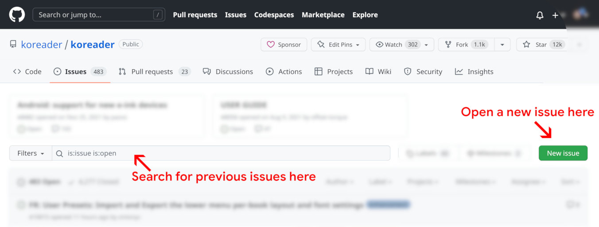 சிக்கல்கள் பக்கத்தில் புதிய வெளியீடு பொத்தானைக் சொடுக்கு செய்க. ஆனால் அதைச் செய்வதற்கு முன், அதே தலைப்பைப் பற்றி ஏற்கனவே ஒரு சிக்கல் இருக்கிறதா என்று தேடல் பட்டியைப் பயன்படுத்த பரிந்துரைக்கிறோம். செயல்முறையைப் பற்றி ஒரு யோசனையைப் பெற நீங்கள் திறந்த பிற சிக்கல்களையும் சரிபார்க்கலாம். நீங்கள் புதிய வெளியீடு பொத்தானைக் சொடுக்கு செய்தால் உங்களுக்கு இரண்டு விருப்பங்கள் வழங்கப்படும்: 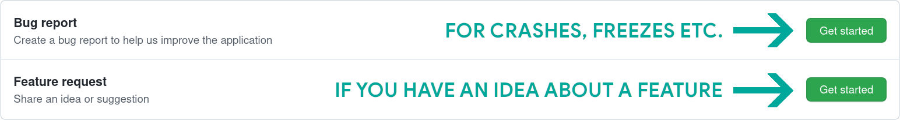 பொருத்தமான ஒன்றைக் சொடுக்கு செய்து, உங்கள் சிக்கல் அல்லது ஆலோசனையைப் புகாரளிக்க பக்கத்தில் உள்ள வழிமுறைகளைப் பின்பற்றவும். நீங்கள் ஒரு பிழையைப் புகாரளிக்கிறீர்கள் என்றால், வாய்மொழி பிழைத்திருத்த பதிவுகள் சிக்கலைத் தீர்மானிக்க மிகவும் உதவியாக இருக்கும். நீங்கள் அவற்றை இயக்கலாம்: அறிக்கையிடலுக்கான அதே உரையாடலில் இருந்து உங்கள் கொரியடரின் பதிப்பு எண்ணையும் உங்கள் சாதன வகையையும் காணலாம். இந்த பயனர் கையேடு தொடர்பான பரிந்துரை அல்லது கேள்வி உங்களிடம் இருந்தால், நீங்கள் அறிவிலிமையம் கலந்துரையாடல் நூல் க்கு எழுதலாம்

Change the font*
/ எழுத்துரு
Adjust text size

Make text darker

Invert the colors on screen (white on black text)
/ இரவு முறை
தூங்கும் போது காண்பிக்கப்படும் திரையை மாற்றுவது
 / Screen / Sleep screen / Screen / Sleep screen / Wallpaper / Custom images
/ Screen / Sleep screen / Screen / Sleep screen / Wallpaper / Custom images
/ சாதனம் / விசைப்பலகை / விசைப்பலகை அமைப்புகள்
/ சாதனம் / விசைப்பலகை / விசைப்பலகை தளவமைப்பு
விசைப்பலகையில் படவுரு
 / கருவி / தட்டச்சுபலகை / தேய் மேலும் எழுத்துக்களை உள்ளிட
/ கருவி / தட்டச்சுபலகை / தேய் மேலும் எழுத்துக்களை உள்ளிட


/ ஆவணம் / பகுதி ரெண்டரிங்சை இயக்கவும்


/ மாற்று நிலை பட்டி / நிலை பட்டி / ஆல்ட் நிலை பட்டி
/ Status Bar / Progress bar / Show chapter-progress bar instead / நிலை பட்டி / நிலை பட்டி / உருப்படிகளை உள்ளமை / தேர்ந்தெடுக்கப்பட்ட அனைத்து பொருட்களையும் ஒரே நேரத்தில் காட்டு
/ Status bar / Progress bar / Lock width at minimum / Status bar / Configure items / Item font

/ Status Bar / Status bar items / Custom text: ‘KOReader’
/ Status bar / Status bar presets / Create new preset from current settings / Status bar / Status bar items / External content
 NAVIGATION This menu contains items that allows you to navigate the book you are currently reading. Table of contents, bookmarks, book map...
NAVIGATION This menu contains items that allows you to navigate the book you are currently reading. Table of contents, bookmarks, book map... TYPESETTING This menu contains items that allows you to change the appearance of your book. Font settings, style tweaks...
SETTINGS This menu contains settings for KOReader and your device. E-ink, light, gesture settings...
TYPESETTING This menu contains items that allows you to change the appearance of your book. Font settings, style tweaks...
SETTINGS This menu contains settings for KOReader and your device. E-ink, light, gesture settings... TOOLS This menu contains plugins that can expand the functionality of KOReader.
TOOLS This menu contains plugins that can expand the functionality of KOReader. SEARCH This menu contains items related to search and lookup. Text search, dictionary, translation, Wikipedia...
SEARCH This menu contains items related to search and lookup. Text search, dictionary, translation, Wikipedia... FILE BROWSER This button opens the file browser which is the interface for managing your library.
FILE BROWSER This button opens the file browser which is the interface for managing your library. MAIN This menu contains tools for accessing your books like history, favorites, collections. Also book information, update and exit items are under this menu. / பக்கம் ஒன்றுடன் ஒன்று
MAIN This menu contains tools for accessing your books like history, favorites, collections. Also book information, update and exit items are under this menu. / பக்கம் ஒன்றுடன் ஒன்று
/ நிலை பட்டி / ஆல்ட் நிலை பட்டி
/ பாணி மாற்றங்கள்
 / உதவி / பட்டியல் தேடல்
/ உதவி / பட்டியல் தேடல்
dpi அமைப்பு உள்ளது:
/ திரை / திரை டிபிஐ
 → முந்தைய இடத்திற்குச் செல்லவும்
→ முந்தைய இடத்திற்குச் செல்லவும் / முந்தைய இடத்திற்குச் செல்லவும்
/ முந்தைய இடத்திற்குச் செல்லவும்சிறந்த பட்டியல் /
/ திரை / மின்-மை அமைப்புகள்
/ ச்கிம் ஆவணம்
/ வழிசெலுத்தல் / ச்கிம் உரையாடல் நிலை:
/ அமைப்புகள் / முன்னேற்ற பார்கள்
/ அமைப்புகள் / மாற்று அட்டவணை
/ Go to page
/ முந்தைய இடத்திற்குச் செல்லவும்
 / Bookmarks
/ Bookmarks
/ புத்தக வரைபடம்
/ பக்க உலாவி

/ Settings / Stable page numbers / Use stable page numbers
/ அமைப்புகள் / மாற்று அட்டவணை / பாணி மாற்றங்கள் / இதர / மாற்று TOC குறிப்புகள் / அமைப்புகள் / தனிப்பயன் அட்டவணை
/ பக்க உலாவி
/ பக்க உலாவி
/ அமைப்புகள் / தனிப்பயன் தளவமைப்பு நற்பொருத்தங்கள் / குறிக்கப்பட்ட அனைத்து பக்கங்களையும் அழிக்கவும் / அமைப்புகள் / தனிப்பயன் தளவமைப்பு நற்பொருத்தங்கள் / தெளிவான செயலற்ற குறிக்கப்பட்ட பக்கங்கள்
/ எழுத்துரு / Embedded fonts / Font size / Font weight / Line Spacing
/ Line Spacing


/ Document settings / Save document settings as default / Document settings / Reset document settings to default
/ Profiles / New with current book settings
/ Font / Font settings / Open fonts folder / எழுத்துரு / எழுத்துரு / எழுத்துரு அமைப்புகள் / எழுத்துரு சோதனை ஆவணத்தை உருவாக்குதல் / Status bar / Configure items / Item font
/ எழுத்துரு / எழுத்துரு-குடும்ப எழுத்துருக்கள் / எழுத்துரு / எழுத்துரு அமைப்புகள் / மோனோச்பேச் எழுத்துருக்கள் அளவிடுதல்
If a font variation is not available, as well as for fractional adjustments, it will be synthesized from the nearest available weight.
/ பாணி மாற்றங்கள்
/ அமைப்புகள் / புக்மார்க்குகள்
 / சிறப்பம்சமாக பாணி
/ சிறப்பம்சமாக பாணி


Long-press on corner gesture can cause problem when you want to long-press on text near the corners. We have special gesture manager actions that allows you to toggle or temporarily disable corner long-press gestures. You can assign these actions to a gesture or use them in your quick menu. You can find them here:
/ Gesture manager / "ANY GESTURE" / Device / Toggle┆Ignore long-press on corners தேர்ந்தெடுக்கவும் , இப்போது நீங்கள் சிறப்பம்சமாக பயன்முறையில் இருக்கிறீர்கள். நீங்கள் இந்த பயன்முறையில் இருக்கும்போது, திரையின் மேல் இடது மூலையில் ஒரு குறிகாட்டியைக் காண்பீர்கள் (மேலும் தகவல்களைப் பெற நீங்கள் அதைத் தட்டலாம்). சிறப்பம்சத்தின் தொடக்கத்தில் மீண்டும் தட்டுவதன் மூலம் சிறப்பம்சத்தை ரத்து செய்யலாம். நீங்கள் குழாய்கள்/ச்வைப் மூலம் பக்கங்களைத் திருப்பலாம் மற்றும் இந்த பயன்முறையில் ஆவணத்தை (TOC, SKIM போன்றவை) சுதந்திரமாக செல்லலாம்.
There is a faster method for this mode if you don’t need long-press menu items shown above. You can disable the popup menu completely so when you long-press on a word you will immediately enter the Select and highlight mode. This method is much faster and you can highlight any length of text with just two taps. To use this method enable this option:
KOReader can highlight a passage in different styles. If you use Lighten option, text background will be gray. Due to e-ink limitations, screens can’t change from white to gray directly, so highlighted part first has to turn black and then gray. If you want to avoid this flashing, you can choose Inverted as your highlight style. In this mode text background will be black so it can be set without flashing. You can adjust these highlighting options from:
/ சிறப்பம்சமாக பாணி
/ அமைப்புகள் / புக்மார்க்குகள் / உருப்படிகளில் காட்டு
/ ஏற்றுமதி சிறப்பம்சங்கள் / வடிவங்கள் மற்றும் சேவைகளைத் தேர்வுசெய்க / ஏற்றுமதி சிறப்பம்சங்கள் / ஏற்றுமதி கோப்புறையைத் தேர்வுசெய்க
/ ஏற்றுமதி சிறப்பம்சங்கள் / சிறப்பம்சமாக பாணிகளைத் தேர்வுசெய்க
 / ரிஃப்ளோ
/ ரிஃப்ளோ
 /
/ 

/ 


/ முன்னேற்ற ஒத்திசைவு / ஆவண பொருந்தக்கூடிய முறை
/ Bookmarks
/ Highlights / Write highlights into PDF
/ Taps and Gestures / Gesture manager / "ANY GESTURE" / Screen and lights / Full refresh rate / பேனல் சூம் (மங்கா / காமிக்)
மங்காவின் மேம்பட்ட தயாரிப்பு
["inverse_reading_order"] = true,
["kopt_zoom_direction"] = 0,
},
/ Settings / Show hidden files / Settings / Show unsupported files
/ சேகரிப்புகள்


/ சேகரிப்புகள் / உங்கள் சேகரிப்பு பெயர் /

 / / வழங்குதல் தகுதி
/ / வழங்குதல் தகுதி
/ OPDS catalog
/ Progress sync
/ Document / Book metadata archive / Archive location: / Document / Book metadata archive / Archived books list
/ ஆவணம் / புத்தக மேனிலை தரவு இருப்பிடம்
/ ஆவணம் / புத்தக மேனிலை தரவு இடம்: புத்தக கோப்புறை
/ Document / Book metadata location: ./docsettings
/ Document / Book metadata location: ./hashdocsettings


/ சைகை மேலாளர்
/ Taps and gestures / Gesture overview
/ Taps and gestures / Gesture overview
/ வழிசெலுத்தல் / உடல் பொத்தான்கள் / விசைப்பலகை குறுக்குவழிகள்
மேல் மெனுவைத் திறக்கவும்
எஃப் 1
வீட்டிற்கு செல்லவும்
வீடு
கோப்பு பட்டியலில் நகர்த்தவும்
மேலே / கீழ்
தேர்ந்தெடுக்கப்பட்ட புத்தகத்தைத் திறக்கவும்
உள்ளிடவும்
வெளியேறும் பயன்பாடு
தப்பி
மேல் மெனுவைத் திறக்கவும்
எஃப் 1
கீழே மெனுவைத் திறக்கவும்
உள்ளிடவும்
பின்/வெளியேறும் பயன்பாடு
தப்பி
புக்மார்க்குகள்
சிப்ட் + இடது
புத்தக்குறியை மாற்று
சிப்ட் + சரியானது
அகராதி தேடல்
கட்டுப்பாடு + டி (alt + டி on கின்டில்)
விக்கிபீடியா தேடல்
கட்டுப்பாடு + w
முழு உரை தேடல்
கட்டுப்பாடு + s
கோப்பு தேடல் தேடல்
கட்டுப்பாடு + f
அடுத்த பக்க இணைப்பைத் தேர்ந்தெடுக்கவும்
தாவல்
முந்தைய பக்க இணைப்பைத் தேர்ந்தெடுக்கவும்
சிப்ட்+தாவல்
தேர்ந்தெடுக்கப்பட்ட பக்க இணைப்பைத் திறக்கவும்
உள்ளிடவும்
பெரிதாக்கு
பக்கம் கீழே
சிறிதாக்கு
பக்கம்
சிறப்பம்சமாக பயன்முறையை உள்ளிடவும்
ம
சிறப்பம்சமாகத் தொடங்கவும் நிறுத்தவும்
உள்ளிடவும்
சிறப்பம்சமாக காட்டி நகர்த்தவும்
இடது/வலது
மேலே/கீழ்
காட்டி வேகமாக நகர்த்தவும்
சிப்ட் +
இடது/வலது/மேல்/கீழ்
சிறப்பம்சமாக இருந்து வெளியேறவும்
தப்பி
பக்க திருப்பம்
இடது-வலது / மேல்-கீழ்
பக்கம் மேல் பக்க கீழே
உள்ளடக்க அட்டவணை
சிப்ட் + அப்
புத்தக வரைபடம்
சிப்ட் + கீழே
ஆரம்பத்திற்குச் செல்லுங்கள்
1
புத்தகத்தின் 11% க்குச் செல்லுங்கள்
2
புத்தகத்தின் 22% க்குச் செல்லுங்கள்
3
புத்தகத்தின் 33% க்குச் செல்லுங்கள்
4
புத்தகத்தின் 44% க்குச் செல்லுங்கள்
5
புத்தகத்தின் 55% க்குச் செல்லுங்கள்
6
புத்தகத்தின் 66% க்குச் செல்லுங்கள்
7
புத்தகத்தின் 77% க்குச் செல்லுங்கள்
8
புத்தகத்தின் 88% க்குச் செல்லுங்கள்
9
முடிவுக்குச் செல்லுங்கள்
0
ஆரம்பத்திற்குச் செல்லுங்கள்
கே
புத்தகத்தின் 11% க்குச் செல்லுங்கள்
W
புத்தகத்தின் 22% க்குச் செல்லுங்கள்
இ
புத்தகத்தின் 33% க்குச் செல்லுங்கள்
R
புத்தகத்தின் 44% க்குச் செல்லுங்கள்
டி
புத்தகத்தின் 55% க்குச் செல்லுங்கள்
ஒய்
புத்தகத்தின் 66% க்குச் செல்லுங்கள்
உ
புத்தகத்தின் 77% க்குச் செல்லுங்கள்
I
புத்தகத்தின் 88% க்குச் செல்லுங்கள்
ஓ
முடிவுக்குச் செல்லுங்கள்
ப
பொருத்தமாக பெரிதாக்கவும்
A
Zoom பெறுநர் fit page width
கள்
பக்க உயரத்திற்கு ஏற்ற பெரிதாக்கு
டி
Zoom பெறுநர் fit content
சிப்ட் + அ
உள்ளடக்க அகலத்திற்கு ஏற்ற பெரிதாக்கு
உயர்த்து + S
உள்ளடக்க உயரத்திற்கு ஏற்ற பெரிதாக்கு
சிப்ட் + டி
/ Taps and Gestures / Gesture Manager / "Your Quick Menu gesture" / Keep Quick Menu open/ Profiles / "Your Quick Menu profile" / Edit actions / Keep Quick Menu open/ Taps and Gestures / Gesture Manager / "Your Quick Menu gesture" / Anchor Quick Menu to gesture position
/ சுயவிவரங்கள் / கூடுதல் கருவிகள் / சொருகி மேலாண்மை
/ Taps and gestures / Gesture manager / "ANY GESTURE" / General / Profile "YOUR PROFILE NAME"
தூண்டுதல் துணை நிபந்தனைகள்
Only within time interval
-
கொரியடர் தொடக்கத்தில் -
விழித்தெழுந்தால்
-
On exiting sleep screen
-
சுழற்சியில்
கோப்புறையைக் காண்பிக்கும் போது
புத்தக திறப்பில்
புத்தக மூடுதலில்
On read timer expiry
-
On auto night mode activation
/ Profiles / "Your profile name" / Auto-execute / Execute promptly
/ கூடுதல் கருவிகள் / சொருகி மேலாண்மை
/ உதவி / கணினி புள்ளிவிவரங்கள்
/ More tools / KOReader HTTP Inspector / Start HTTP server

/ More tools / Plugin management / Perception expander / Speed reading module - perception expander / More tools / Plugin management / FastReader / More tools / FastReader

/ Taps and gestures / Gesture manager / "ANY GESTURE" / General / Open Previous Document / புத்தக செய்தி / Book information / (long-tap) Cover image: / Set custom
/ புத்தக செய்தி / குழாய்கள் மற்றும் சைகைகள் / இணைப்புகள் / இணைப்புகளைப் பின்தொடரத் தட்டவும்
/ புதுப்பிப்புக்கு புதுப்பிப்பு / சரிபார்க்கவும்
/ Taps and gestures / Gesture manager / "ANY GESTURE" / Device / Exit sleep screen / Screen / Sleep screen / Postpone screen update after wake-up / Until 'Exit sleep screen' gesture / திரை / தானியங்கி மங்கலான
/ Device / Device Status Alerts / Battery Level / கூடுதல் கருவிகள் / பேட்டரி புள்ளிவிவரம் / உதவி / கணினி புள்ளிவிவரங்கள் / Status bar / Status bar items / KOReader memory usage / சாதனம் / சாதன நிலை எச்சரிக்கைகள்
/ Screen / E-ink settings / Sleep screen anti-ghosting redraws / முன்னேற்ற ஒத்திசைவு / ஆவண பொருந்தக்கூடிய முறை / சாதனம் / அனைத்து தூக்க அட்டை நிகழ்வுகளை புறக்கணிக்கவும்
/ Taps and Gestures / Gesture intervals / Tap இடைவேளை
/ நடை

மொபிலெர்எட் மன்றங்கள் இல் பிற கொரியடர் பயனர்களைக் கண்டறியவும்
கிட்டர் அரட்டை இல் எங்களை அணுகவும்
லைபர்பே வழியாக திட்டத்தை ஆதரிக்கவும்